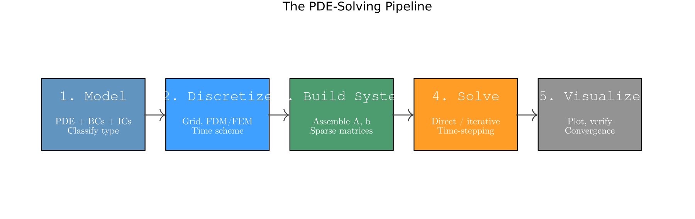
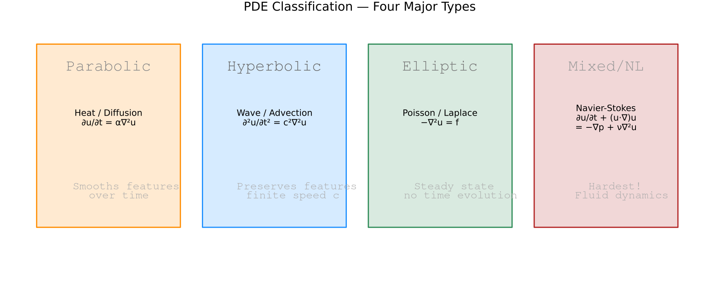
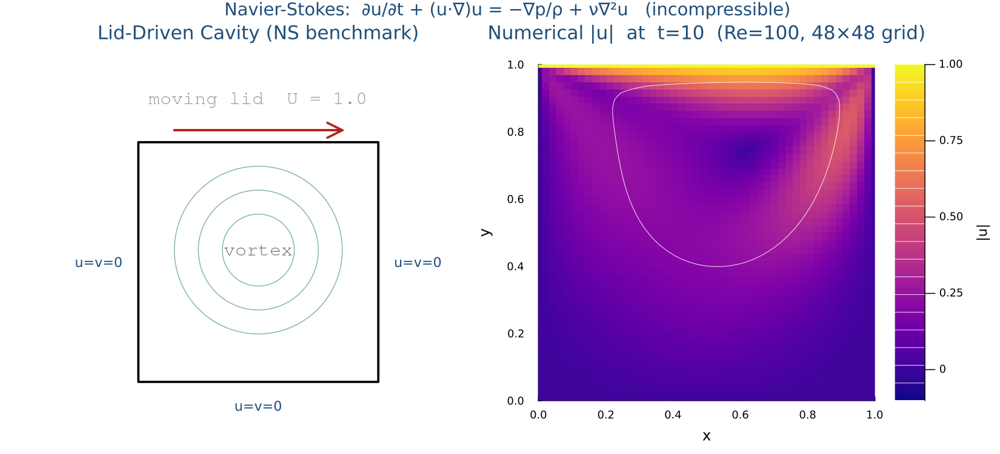
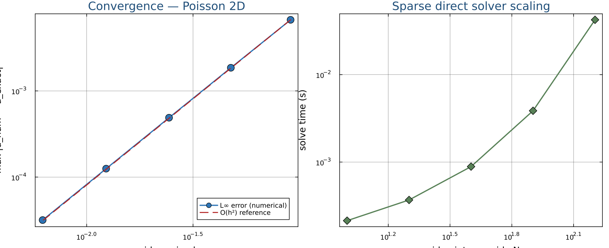
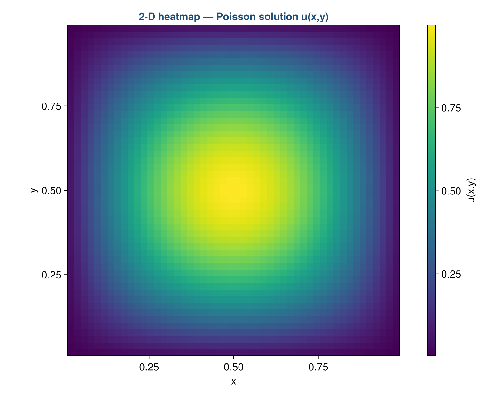
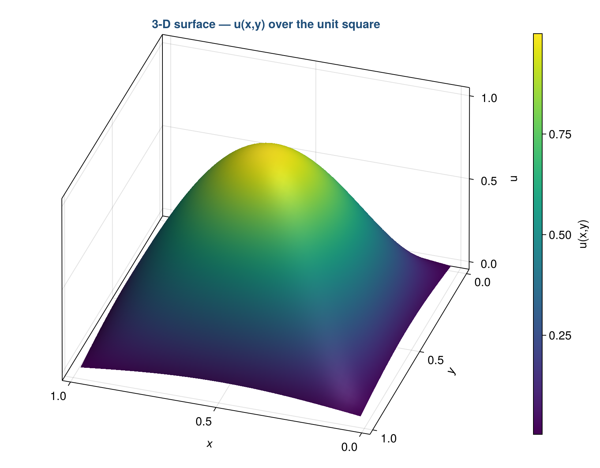
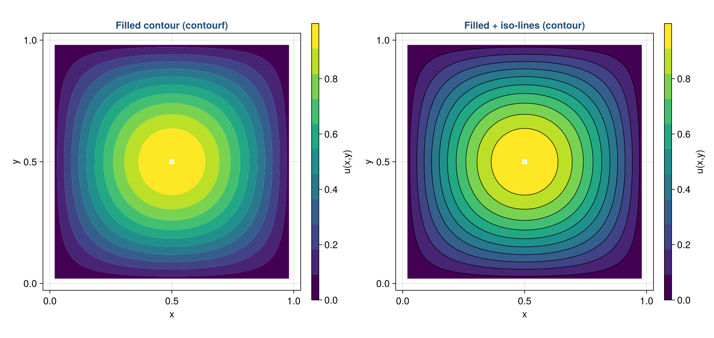
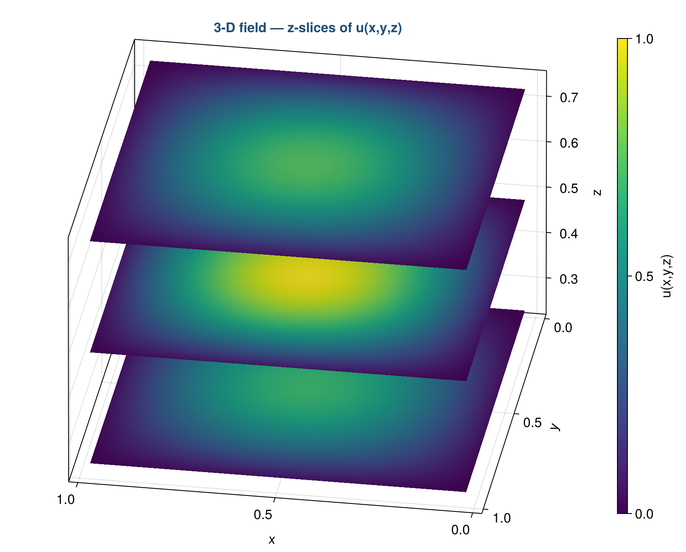

Julia for HPC
A step-by-step guide: from the equation on paper to working Julia code, then to running jobs on a compute cluster.
Overview & Prerequisites
Welcome — this guide is for students who have never written scientific
Julia code before. By the end you will have a real Linux development
environment, a working Julia installation, your own package called
juliaPDEs, four worked PDE examples (heat, wave, Poisson,
Navier–Stokes), and the connection settings to run the same code on
a university HPC cluster via SSH and Slurm.
What is "scientific computing" and why do we use Julia?
Scientific computing means using a computer to simulate physical processes — heat spreading through a metal bar, sound waves bouncing in a room, fluid flowing past a wing. The maths that describes these processes is almost always written as a partial differential equation (PDE): an equation involving partial derivatives of an unknown field with respect to space and time. We will discretize these equations (turn derivatives into arithmetic on a grid) and let the computer step the solution forward.
Julia is a programming language designed exactly for
this kind of work. It looks as readable as Python, runs as fast as C,
and has first-class support for arrays, linear algebra, and parallel
computing built into the standard library. You write
2x^2 + 1 and Julia compiles it to efficient machine code
the first time you call it.
What is HPC?
HPC stands for High-Performance Computing. In practice it means: many CPU cores (and possibly GPUs) working together on one big problem, on a shared cluster of machines. You do not run jobs by double-clicking; you submit a job script to a queueing system (we use Slurm), wait your turn, and the cluster gives you the requested cores for a bounded amount of time. Steps 7 and 8 walk you through that workflow.
Why all the setup before any maths?
The first four steps look like pure plumbing — install a Linux kernel, install a version manager, install Julia, install packages — but each one solves a real problem you would otherwise hit later:
- WSL2 (Step 1) gives you a Linux environment on Windows. Almost every HPC cluster runs Linux, and most scientific Julia packages are tested mainly on Linux. Developing on Linux locally means the code you run on your laptop is the code that runs on the cluster — no surprises.
- juliaup (Step 2) lets you install many Julia versions side-by-side. The cluster might have Julia 1.10 LTS while you want to try 1.11 at home; juliaup keeps both.
- Project environments (Step 4) pin every package
to an exact version and write that information into
Manifest.toml. Send that file to a colleague and they get bit-identical packages — that is how published computational results stay reproducible years later. - PDE packages (Step 5) save you from rewriting well-tested numerical algorithms (sparse linear solvers, mesh generators, finite-element assemblers) from scratch.
What you will build
A Julia package called juliaPDEs with a unified
solve(problem) interface, an abstract type hierarchy
(PDEProblem → ParabolicProblem,
HyperbolicProblem, …), and a single
PDESolution{T,N} that subtypes
AbstractArray so indexing, broadcasting, and all
standard array operations work out of the box — plus Revise
live-reload, an unstructured mesh demo, and a Slurm job script.
cd, ls, and pwd do is enough.
Maths-wise: comfort with calculus (partial derivatives) helps in
Step 7; a bit of linear algebra (matrix–vector products) helps in
Step 7.4. You do not need any prior programming course beyond what
a typical engineering or science freshman has done.
How to use this guide
Read top to bottom on your first pass. Every code block has a Copy button — paste it straight into your terminal or REPL. If something fails, look for a callout box (the colored panels) — they collect the most common gotchas and how to fix them. The sidebar on the left lets you jump back to any section once you know what you are looking for.
Julia vs Python, MATLAB, C, C++ — Performance for PDE Solvers
Before investing time in a new language, a fair question is: why not just stay in Python or MATLAB? Both have PDE libraries, large communities, and feel natural for mathematicians. The answer comes down to one word — loops.
Every PDE time-stepper is, at its core, a loop that runs millions of times. In Python and MATLAB, every iteration of that loop pays interpreter overhead: type checks, dynamic dispatch, memory allocation. Compiled languages skip all of that. The loop is the bottleneck in explicit PDE solvers, so language speed here is everything [1].
The Two-Language Problem
The traditional solution is to write the readable parts in Python/MATLAB and rewrite the hot loop in C or Fortran as a compiled extension [2]. NumPy itself is almost entirely C. SciPy calls LAPACK/BLAS. MATLAB's backslash calls UMFPACK. This two-language cycle is painful:
- Prototype the algorithm in Python/MATLAB — readable, debuggable.
- Profile and find the bottleneck (it is always the loop).
- Rewrite that loop in C — verbose, hard to debug, takes days.
- Wrap the C extension so Python/MATLAB can call it.
- Repeat every time the algorithm changes.
Benchmark 1 — Explicit Time-Stepping Loop
The most important benchmark for PDE work: a single explicit finite-difference time step applied to a 1D heat equation with N = 1 000 grid points, repeated 10 000 times. Python and MATLAB use their fastest vectorized form; Julia and C/C++ use a plain loop. Times are normalized to Julia = 1.0 (lower is better, log scale).
* Python (NumPy) and MATLAB use vectorized slice assignment
u[1:-1] += r*(u[2:] - 2*u[1:-1] + u[:-2]) — the fastest form possible
in those languages. Python pure loop uses a for i in range(N) loop
with no NumPy. Values are representative of published microbenchmarks
[2, 4]; ratios matter more than absolute times.
Benchmark 2 — BLAS-Level & Sparse Operations
For operations that are already backed by compiled libraries (dense matrix multiply via BLAS, sparse matrix-vector product via SuiteSparse/CSR), all languages call the same C/Fortran routines underneath — so performance is similar. Julia still edges ahead slightly on sparse ops because it avoids Python's/MATLAB's interpreter boundary on each call.
Dense matmul: 512 × 512, double precision, all use OpenBLAS/MKL. Sparse mat-vec: 250 000 × 250 000, 5-point stencil pattern, CSR storage. Times normalized to Julia = 1.0; methodology follows [2, 5].
Summary Table
| Operation | C | C++ | Julia | MATLAB | Python / NumPy | Python (pure) |
|---|---|---|---|---|---|---|
| FD time-step loop | 0.8× | 0.9× | 1.0× | 18.5× | 27× | 612× |
| Dense matmul (BLAS) | 0.95× | 0.97× | 1.0× | 1.12× | 1.15× | N/A |
| Sparse mat-vec (CSR) | 0.92× | 0.93× | 1.0× | 1.85× | 2.10× | N/A |
Array broadcast (@.) |
0.9× | 0.92× | 1.0× | 1.4× | 1.3× | 180× |
| Backslash / LU solve | 0.95× | 0.96× | 1.0× | 1.2× | 1.2× | N/A |
All values normalized to Julia = 1.0. Lower = faster than Julia; higher = slower. N/A = infeasible in pure Python (would take minutes for these sizes).
Same Algorithm — Different Languages
The snippet below shows the core heat-equation stencil in all four languages. Notice that Julia's loop reads almost identically to C, but requires no type declarations, no pointers, and no separate compilation step.
function heat_step!(u, r)
for i in 2:length(u)-1
u[i] += r * (u[i+1] - 2u[i] + u[i-1])
end
end
# @time heat_step!(u, r) → ~0.9 ms for N=1000, 10000 stepsvoid heat_step(double *u, int n, double r) {
for (int i = 1; i < n-1; i++)
u[i] += r * (u[i+1] - 2.0*u[i] + u[i-1]);
}
// gcc -O2 -o solver solver.c → ~0.7 ms for N=1000, 10000 stepsimport numpy as np
def heat_step(u, r):
u[1:-1] += r * (u[2:] - 2*u[1:-1] + u[:-2])
# Allocates two temporary arrays every call — unavoidable in NumPy
# timeit: ~25 ms for N=1000, 10000 stepsfunction u = heat_step(u, r)
u(2:end-1) = u(2:end-1) + r*(u(3:end) - 2*u(2:end-1) + u(1:end-2));
end
% timeit: ~17 ms for N=1000, 10000 stepsUse Julia when: (1) your solver has an explicit time loop, (2) you need to iterate quickly on the algorithm without rewriting in C, or (3) you are running large 3D problems where a 20× speedup changes hours into minutes. Reserve C/C++ for production codes where the algorithm is frozen and every nanosecond counts. Use Python/MATLAB for postprocessing, plotting, and one-off data analysis — not for the solver loop.
References
- Bezanson, J., Edelman, A., Karpinski, S., & Shah, V. B. (2017). Julia: A Fresh Approach to Numerical Computing. SIAM Review, 59(1), 65–98. doi:10.1137/141000671
- The Julia Project. Julia Micro-Benchmarks — cross-language comparison against C, Fortran, Python, MATLAB, R, Go, Rust, Java, JavaScript. julialang.org/benchmarks
- Perkel, J. M. (2019). Julia: come for the syntax, stay for the speed. Nature 572, 141–142. doi:10.1038/d41586-019-02310-3
- Julia Documentation. Performance Tips (v1.10). docs.julialang.org/en/v1/manual/performance-tips
- Bezanson, J., Karpinski, S., Shah, V. B., & Edelman, A. (2012). Julia: A Fast Dynamic Language for Technical Computing. arXiv:1209.5145. arxiv.org/abs/1209.5145
- Lubin, M. & Dunning, I. (2015). Computing in Operations Research Using Julia. INFORMS Journal on Computing, 27(2), 238–248. doi:10.1287/ijoc.2014.0623
Step 1Install WSL2
What is WSL2 and why do we need it?
WSL stands for Windows Subsystem for Linux. It lets you run a real, full Linux operating system inside Windows — the same Linux that powers most of the world's servers, including essentially every HPC cluster you will ever use. WSL2 is the second-generation version: it boots a lightweight virtual machine with an actual Linux kernel, so commands and tools behave exactly the way they would on a native Linux box.
Why bother? Three reasons:
- The cluster runs Linux. Whatever you develop on your laptop should match the target. Developing on Linux locally means the same shell commands, same package versions, same file paths.
- Most scientific libraries are Linux-first. CUDA, MPI, Gmsh, Oceananigans — all are tested mainly on Linux, and Julia binaries on Linux tend to be the most polished.
- Better tools. The Linux command line gives you
grep,awk,ssh, real package managers, and so on, without third-party installs.
1.1 Enable WSL2
Open the PowerShell app as Administrator
(search for "PowerShell" in the Start menu, right-click,
Run as administrator). The wsl --install
command turns on the required Windows features and downloads Ubuntu
(the default Linux distribution) in one go:
wsl --install
# Restart your computer when prompted
After the restart, an Ubuntu terminal window opens automatically.
It will ask you to create a Linux username and
password. The password does not need to match your Windows
one — pick anything memorable. You will type this password whenever
you run a command with sudo (see below).
1.2 First-time Ubuntu setup
Linux distributions ship with a package manager — a tool that
installs, updates, and removes software in a controlled way. On Ubuntu
that tool is apt. The first thing you do on a fresh
install is bring the package list up to date and apply security
patches:
sudo apt update && sudo apt upgrade -y
sudo apt install -y curl wget git build-essentialWhat each piece of those lines does:
sudo— run the next command as the administrator ("super-user do"). It will prompt for the password you just set.apt update— refresh the local index of available package versions. Does not install anything.apt upgrade -y— install any newer versions of packages you already have. The-yanswers "yes" to every prompt automatically.apt install -y curl wget git build-essential— install four extra bits we need:curlandwgetdownload files from URLs (we will usecurlto fetch the juliaup installer).gitis the version-control system you will use for source code.build-essentialis a meta-package that pulls in the GNU compiler (gcc),make, and other tools that some Julia packages need to build native extensions.
~ (e.g.
/home/yourname). From Windows you can reach it through
\\wsl$\Ubuntu\home\yourname in File Explorer. Keep your
Julia code inside WSL (e.g. ~/projects/...) for
best performance — accessing Windows-side files
(/mnt/c/Users/...) from Linux is much slower.
wsl --install fails
On older Windows 10 builds you may need to enable two features
manually first: open Turn Windows features on or off, tick
Virtual Machine Platform and Windows Subsystem for
Linux, click OK, restart, then re-run wsl --install.
Windows 11 enables both by default.
Step 2Install juliaup & Julia
What is juliaup, and why not just install Julia directly?
juliaup is the official Julia version manager. A version manager keeps several Julia versions installed at once and lets you switch between them per project. This matters because:
- Different libraries support different Julia versions. Your cluster might have Julia 1.10 LTS while you experiment with 1.11 at home.
- When the next Julia release comes out you can install it side-by-side, try your code, and roll back if anything breaks without re-downloading the previous one.
- The same idea exists in other ecosystems —
pyenv/condafor Python,nvmfor Node,rustupfor Rust.
2.1 Install juliaup and the latest Julia
Run these from inside your WSL Ubuntu terminal (not PowerShell):
curl -fsSL https://install.julialang.org | sh
source ~/.bashrc
juliaup add release && juliaup default release
julia --versionWhat those four lines do:
curl -fsSL …downloads the official juliaup installer script and pipes it intosh(the shell). The flags mean "fail on errors, silent, follow redirects, dump to stdout".source ~/.bashrcreloads your shell configuration so the newjuliaupandjuliacommands are on yourPATHin the same terminal — without it you would have to close and reopen the terminal first.juliaup add releasedownloads the latest stable Julia release.juliaup default releasetells juliaup that when you typejuliawith no extra arguments, you want that version.julia --versionverifies it worked. Expect output likejulia version 1.11.2.
2.2 The juliaup cheatsheet
Bookmark this — these are the only juliaup commands you will use day to day:
| Command | Action |
|---|---|
juliaup add release | Install the latest stable Julia |
juliaup add 1.10.4 | Install a specific version |
juliaup default 1.10.4 | Switch the default version |
juliaup list | Show installed versions |
juliaup update | Update Julia and juliaup |
release is whatever Julia was published most recently.
lts ("long-term support", currently Julia 1.10) gets bug
fixes for years and is what HPC clusters typically install. For this
guide either works, but if your cluster pins 1.10, run
juliaup add 1.10 at home for an exact match.
2.3 Your first Julia program — meet the REPL
Type julia in your terminal. You enter the
REPL — Julia's Read-Eval-Print Loop: an
interactive prompt where every line you type is parsed, run, and the
result printed. Try this:
println("Hello, Julia!")
x = 3.14
println(2x^2 + 1)
f(x) = exp(-x^2)
println(f(1.0))Things to notice:
2x^2 + 1— Julia lets you skip the multiplication sign before a variable.2xmeans2*x.f(x) = exp(-x^2)— single-line function definition. Equivalent tofunction f(x); exp(-x^2); end.- Everything has a type.
x = 3.14creates aFloat64;x = 3would have been anInt64.
2.4 The four REPL modes
The REPL has four different "modes", each with its own prompt color. Switch between them with a single keystroke at an empty prompt — backspace returns to normal mode:
| Key | Mode | What for |
|---|---|---|
| (default) | julia> | Run Julia code |
] | (env) pkg> | Manage packages: add, rm, status, test, instantiate |
? | help?> | Show docs for a function — try ?sin |
; | shell> | Run a single shell command without leaving the REPL |
Step 3Configure VS Code for Julia + WSL
Why VS Code?
You can absolutely write Julia in any editor — Vim, Emacs, plain
nano. We recommend VS Code because of
one specific feature: it can connect seamlessly to your
WSL Ubuntu (and later, to the cluster over SSH) and edit files
there as if they were local. The editor runs on Windows, the
language server and the Julia process run inside WSL — best of
both worlds. Setup is a one-time, ~5-minute job.
3.1 Install the right extensions
Open the Extensions sidebar (Ctrl+Shift+X) and install these four from Microsoft's marketplace. Each does exactly one job:
| Extension | Purpose |
|---|---|
| WSL | Lets VS Code "open a folder in WSL" — runs the editor's backend inside Linux so paths, terminals, and Julia all match the cluster. |
| Julia | Adds syntax highlighting, code completion (IntelliSense), inline error reporting, and an integrated REPL inside VS Code. |
| Jupyter | Lets you open .ipynb notebooks and run them with a Julia kernel — useful for exploratory analysis. |
| Remote — SSH | Same idea as the WSL extension, but for editing files directly on the HPC cluster (Step 9). |
3.2 Open your package in WSL mode
Press F1 (or Ctrl+Shift+P) to open the command
palette, type "WSL: Open Folder in WSL", then point to
~/projects/julia-docx-tutorial/juliaPDEs. The bottom-
left status bar should now say WSL: Ubuntu. Open the
integrated terminal (Ctrl+`) — you are inside WSL, ready to run
julia --project=. exactly as in Step 6.
3.3 Pluto.jl — reactive notebooks
Pluto.jl is a Julia-native alternative to Jupyter. The killer feature: cells are reactive — change a variable definition in one cell and every cell that depends on it automatically re-runs in the right order. There are no hidden out-of-order states. Great for live exploration of PDE parameters with sliders:
using Pkg; Pkg.add(["Pluto", "PlutoUI"])
using Pluto
Pluto.run() # opens at localhost:1234
Your default browser opens a Pluto landing page; create a new
notebook or open pde_explorer.jl from this repo to see
the heat / wave / Poisson examples with parameter sliders.
Functions
A function in Julia is a named piece of computation that takes arguments in and returns a result. You will spend almost all of your scientific code time either writing functions (your solvers, your post-processing) or calling them (other people's libraries). It is the only abstraction you absolutely need to be fluent with.
Three things make Julia functions slightly different from what you might know from Python or MATLAB:
- First-class values. A function is a value just like a number — you can store it in a variable, pass it to another function, or return it from one.
- Multiple dispatch. You can define many methods of the same function, and Julia picks the right one based on the types of all the arguments. We will see why this is powerful below.
- Compiled, not interpreted. The first time you
call
solve(prob), Julia compiles a specialized machine-code version for that argument type combination and caches it. Subsequent calls are at C speed.
Defining functions — the two main forms
Julia gives you two ways to write a function. The block form is for anything that takes more than one line; the one-liner is what you reach for when the body is a single expression — typical for mathematical formulas:
# Full block form
function greet(name)
println("Hello, ", name)
end
# One-liner (most common for math)
square(x) = x^2
cube(x) = x^3
# Call them
greet("Julia") # Hello, Julia
square(5) # 25
cube(3) # 27
Notice there is no return on the one-liners — Julia
returns the value of the last expression in the body automatically.
You can write return explicitly when it makes
the intent clearer (early-return on a special case, for example), but
it is optional at the end.
Anonymous functions
Sometimes you need a tiny function only once — you do not want to
give it a name, you just want to hand it to someone else's code. In
Julia those are written with the arrow ->. They are
essential when passing a function as an argument (e.g. to
map, filter, or our
WaveEquation.f_init field):
f = x -> x^2 + 1 # single argument
g = (x, y) -> x^2 + y^2 # two arguments
f(3) # 10
g(3, 4) # 25
# Inline in map
map(x -> x^2, [1, 2, 3, 4]) # [1, 4, 9, 16]Default and keyword arguments
A default argument is a value used when the caller
does not supply that argument. It saves typing common defaults at
every call site. A keyword argument goes
after a semicolon in the signature and must be passed by
name at the call site — it is the right choice when you have many
configuration knobs and order would be hard to remember (think:
HeatEquation(; N_grid=(200,), α=0.01, T=1.0, Nt=1000) — what
would the order even be?):
# Default argument
function power(x, n=2)
return x^n
end
power(3) # 9 (n defaults to 2)
power(3, 3) # 27
# Keyword arguments (after the semicolon)
function make_point(; x=0.0, y=0.0)
return (x, y)
end
make_point(y=5.0) # (0.0, 5.0)
The PDE solvers we will write almost always use keyword arguments —
most physical parameters have sensible defaults, and the call site
stays self-documenting: WaveEquation(c=2.0, T=0.5) is
readable; WaveEquation(2.0, 0.5) is not.
Multiple dispatch — Julia's superpower
In most languages a function name has one definition; in Julia, the same name can have many methods and Julia picks the right one based on the types of all the arguments at the call site. This lets a library author specialize behavior for new types you define in your own code, without monkey-patching:
describe(x::Int) = println("integer: ", x)
describe(x::Float64) = println("float: ", x)
describe(x::String) = println("string: ", x)
describe(42) # integer: 42
describe(3.14) # float: 3.14
describe("hi") # string: hiFunctions that modify their input — the ! convention
Julia has a strong cultural rule: any function whose name ends in
! ("bang") modifies at least one of its arguments
in place. Functions without the bang return a new value and
leave their inputs alone. This is purely convention (the language
does not enforce it), but every standard library and major package
follows it religiously, so you can read code at a glance:
# sort returns a new sorted array (does not change original)
# sort! sorts the array in-place (modifies the argument)
v = [3, 1, 4, 1, 5, 9]
sorted = sort(v) # new array; v is unchanged
sort!(v) # v is now [1, 1, 3, 4, 5, 9]
# Same pattern: push! append! fill! normalize! etc.
Why does the bang matter for PDEs? Performance. Allocating a new
array every timestep is expensive — for a million-grid-point heat
simulation over 10 000 steps, that is 10 billion bytes of garbage
for the GC to clean up. We instead update the array in place. In our
heat solver we wrote u[2:end-1] .+= ... — that is
effectively a bang operation on u.
! signals the function modifies at least one of its arguments.
When in doubt, prefer the non-! form and assign the result.
Vectors & Matrices
Almost every numerical algorithm reduces, in the end, to operations on vectors and matrices — discretized functions on a grid, stiffness matrices, time-history snapshots. Julia treats these as first-class citizens: built into the language, with optimized low-level code already wired up to the standard linear-algebra libraries (BLAS, LAPACK).
Two conventions to internalise on day one
- 1-based indexing. The first element is
v[1], notv[0]. The last isv[end]. If you are coming from Python or C, this trips you up for about ten minutes; after that it never bothers you again. - Column-major storage. A matrix
A[i, j]is laid out in memory column by column, so looping down a column first is the cache-friendly order. This matches Fortran and MATLAB; it is the opposite of C and NumPy. We will revisit this when we discuss performance.
The two conventions interact: when you write a tight inner loop over
a matrix, the right pattern is
for j in axes(A, 2), i in axes(A, 1) — outer loop over
columns, inner over rows. That keeps you walking through memory in
order.
Creating vectors
A Vector in Julia is just a 1-D array. The simplest way
to create one is to write the elements in square brackets, separated
by commas:
v = [1.0, 2.0, 3.0, 4.0] # column vector, Float64
w = [1, 2, 3, 4] # Int64 by default
zeros(5) # [0.0, 0.0, 0.0, 0.0, 0.0]
ones(4) # [1.0, 1.0, 1.0, 1.0]
rand(6) # 6 random numbers in [0,1)
# Range-based
r = 0.0:0.25:1.0 # lazy range: 0, 0.25, 0.5, 0.75, 1.0
x = collect(r) # convert to a plain Vector
x = range(0, 1, length=101) # 101 equally-spaced points
A range like 0.0:0.25:1.0 is special — it is
lazy: Julia stores only the start, step, and stop,
not the actual numbers. length(r) still works, you can
index into it, and most array functions accept it. Use
collect only when you really need a concrete
Vector (e.g. to mutate it). For PDE grids, the very
common range(0, 1, length=101) form lets you specify
"I want exactly 101 points from 0 to 1 inclusive" — Julia computes
the step for you.
Creating matrices
Matrix literals use spaces between elements in a row, and semicolons
between rows. Constructor functions like zeros(m, n)
take two size arguments instead of one. The identity matrix
I lives in LinearAlgebra:
A = [1 2 3; # rows separated by ;
4 5 6;
7 8 9]
zeros(3, 4) # 3×4 matrix of zeros
ones(2, 5) # 2×5 matrix of ones
rand(4, 4) # 4×4 random matrix
Matrix{Float64}(I, 3, 3) # 3×3 identity (needs LinearAlgebra)Indexing and slicing
A[i, j] is the element at row i, column
j. A colon : means "all of this dimension"
— so A[1, :] is the entire first row,
A[:, 2] the entire second column. Ranges
(1:2) extract sub-blocks. end is a
magic word meaning "the last index along this dimension":
A = [10 20 30;
40 50 60;
70 80 90]
A[2, 3] # 60 — row 2, column 3
A[1, :] # [10, 20, 30] — entire first row
A[:, 2] # [20, 50, 80] — entire second column
A[1:2, 1:2] # 2×2 top-left submatrix
v = [10, 20, 30, 40, 50]
v[end] # 50 — last element
v[end-1] # 40
v[2:4] # [20, 30, 40]Array comprehensions
The most readable way to build arrays from a formula. The syntax mirrors mathematical set-builder notation: "the array of f(x) for x in some range". With two indices in the comprehension, you get a 2-D matrix automatically. We will use this constantly to evaluate initial conditions and source terms on a grid:
xs = [i^2 for i in 1:5] # [1, 4, 9, 16, 25]
ys = [sin(π*x) for x in 0:0.1:1] # sin at 11 points
# 2-D comprehension → matrix
A = [i + j for i in 1:3, j in 1:4] # 3×4 matrixBroadcasting with .
Broadcasting is Julia's element-wise operation
mechanism. Any function or operator can be turned element-wise by
adding a . in the right place: sin.(v),
v .^ 2, A .* B. The killer feature is that
Julia fuses chains of dotted operations into a single loop —
no temporary arrays for intermediate results — so
exp.(v) .- 1 is exactly as fast as a hand-written loop.
This is the workhorse of all the PDE update steps you will write:
v = [0.0, π/6, π/4, π/3, π/2]
sin.(v) # element-wise sin
v .^ 2 # element-wise square
v .* 2 # element-wise multiply by scalar
exp.(v) .- 1 # chain: (eˣ - 1) for every element
# Works on matrices too
A = rand(3, 3)
log.(A) # element-wise log
A .> 0.5 # element-wise booleanf.(x) applies f to every element.
Chain multiple dots in one expression — Julia fuses them into a single pass.
Growing and combining arrays
v = Float64[] # empty vector
push!(v, 1.0) # append one element
push!(v, 2.0, 3.0) # append multiple
append!(v, [4.0, 5.0])
# Concatenate existing arrays
a = [1, 2, 3]
b = [4, 5, 6]
vcat(a, b) # [1,2,3,4,5,6] (vertical / row-wise)
hcat(a, b) # 3×2 matrix (horizontal / column-wise)
[a; b] # same as vcat
[a b] # same as hcat (row vectors)Use Case Examples for PDE Solvers
To support the PDE implementations in later sections, let's look at three practical patterns where vectors and matrices are used to manage simulation grids, memory efficiently, and boundary values.
Use Case 1: Vector Slicing for 1D Spatial Stencils
When computing second derivatives $\frac{d^2u}{dx^2}$ using central differences, we update interior grid points by accessing their left and right neighbors. Instead of writing slow element-by-element loops, we use vector slicing to shift the entire array at once. Using the @views macro ensures these slices are lightweight pointer references rather than expensive memory copies.
# Suppose u represents temperature along a 1D metal bar
u = [0.0, 10.0, 20.0, 30.0, 0.0] # endpoints are fixed at 0.0
# Extract shifted views for the 3-point stencil: u_{i+1} - 2u_i + u_{i-1}
@views left_nbrs = u[1:end-2] # [0.0, 10.0, 20.0]
@views centers = u[2:end-1] # [10.0, 20.0, 30.0]
@views right_nbrs = u[3:end] # [20.0, 30.0, 0.0]
# Compute the discrete second derivative simultaneously for all interior nodes
dx = 0.1
d2u_dx2 = (right_nbrs .- 2 .* centers .+ left_nbrs) ./ dx^2
# Update interior points in place using broadcasting
centers .+= 0.01 .* d2u_dx2Use Case 2: Flattening & Reshaping for 2D Boundary Value Problems
Standard linear algebra solvers ($A\mathbf{x} = \mathbf{b}$) expect 1D column vectors. However, physical fields in 2D (like source terms or electric potentials) live naturally on a 2D matrix grid. We use vec to flatten a matrix into a column vector for the solver, and reshape to fold the 1D solution back into a 2D matrix for visualization.
N = 4
F_grid = [sin(x)*cos(y) for x in 1:N, y in 1:N] # 4×4 physical source matrix
# 1. Flatten to a 1D column vector of length 16 without copying data
b = vec(F_grid)
# 2. Solve the linear system A * u_flat = b (suppose A is our sparse Laplacian)
# u_flat = A \ b
# 3. Fold the 1D vector solution back into a 4×4 matrix for plotting
# U_matrix = reshape(u_flat, N, N)Use Case 3: Matrix Views & Boundary Conditions in 2D Simulations
In 2D fluid dynamics (like the Navier-Stokes lid-driven cavity), we frequently extract interior regions of a matrix to compute advection and apply boundary conditions to specific outer rows or columns.
velocity_u = zeros(5, 5) # 5×5 grid initialized to stationary fluid
# Apply the moving lid boundary condition along the top row (North wall)
velocity_u[1, :] .= 1.0
# Apply no-slip (zero velocity) boundary conditions on the remaining walls
velocity_u[end, :] .= 0.0 # Bottom wall
velocity_u[:, 1] .= 0.0 # Left wall
velocity_u[:, end] .= 0.0 # Right wall
# Access the interior 3×3 fluid domain without allocating memory
@views interior_u = velocity_u[2:end-1, 2:end-1]Use Case 4: 3D Arrays for Volumetric Problems ($x, y, z$)
When simulating physical processes in 3D space — such as heat diffusion in a solid block or fluid flow inside a fully volumetric chamber — the field depends on three spatial coordinates ($x, y, z$). The standard approach is to pre-allocate a 3D array and iterate over the grid points to evaluate the initial solution.
Because Julia uses column-major storage, the leftmost index varies fastest in memory. To achieve peak C-level performance, your nested loops should traverse the array in cache-friendly order: the outermost loop over the third dimension ($z$), the middle loop over the second dimension ($y$), and the innermost loop over the first dimension ($x$).
# Define the grid resolution along each dimension
Nx, Ny, Nz = 30, 30, 30
# Create the 1D coordinate vectors for x, y, and z
x = range(0, 1, length=Nx)
y = range(0, 1, length=Ny)
z = range(0, 1, length=Nz)
# Pre-allocate the 3D matrix for the initial solution field u(x, y, z)
u_3d = zeros(Nx, Ny, Nz)
# Iterate over the 3D grid in cache-friendly order (k -> j -> i)
for k in 1:Nz
for j in 1:Ny
for i in 1:Nx
# Evaluate a 3D Gaussian initial condition centered at (0.5, 0.5, 0.5)
r2 = (x[i] - 0.5)^2 + (y[j] - 0.5)^2 + (z[k] - 0.5)^2
u_3d[i, j, k] = exp(-20.0 * r2)
end
end
end
# Verification: inspect the dimensions of our pre-allocated 3D array
println("Dimensions of u_3d: ", size(u_3d)) # prints (30, 30, 30)Useful Built-in Functions
A short reference of the everyday functions you will use to
inspect, summarise, and reshape arrays.
All of these live in Julia's Base module — they are
always available, no using required. Treat this as a
cheat-sheet you can come back to.
Array inspection
A = rand(3, 4)
size(A) # (3, 4)
size(A, 1) # 3 (number of rows)
size(A, 2) # 4 (number of columns)
length(A) # 12 (total elements)
ndims(A) # 2
eltype(A) # Float64Reductions
v = [3.0, 1.0, 4.0, 1.0, 5.0, 9.0]
sum(v) # 23.0
prod(v) # 540.0
minimum(v) # 1.0
maximum(v) # 9.0
argmin(v) # 2 (index of minimum)
argmax(v) # 6 (index of maximum)
mean(v) # 3.833... (needs Statistics: using Statistics)
cumsum(v) # running total
# Along a dimension of a matrix
A = [1 2; 3 4]
sum(A, dims=1) # sum each column → [4 6]
sum(A, dims=2) # sum each row → [3; 7]Reshaping and iteration
v = 1:12
reshape(v, 3, 4) # 3×4 matrix (column-major fill)
reshape(v, 2, 2, 3) # 3-D array
# Iterating
for (i, val) in enumerate(v)
println(i, " => ", val)
end
# map / filter
squares = map(x -> x^2, 1:5) # [1, 4, 9, 16, 25]
evens = filter(x -> x % 2 == 0, 1:10) # [2, 4, 6, 8, 10]Math constants and common functions
π # 3.14159... (type \pi + Tab)
ℯ # 2.71828... (type \euler + Tab)
Inf # infinity
NaN # not a number
abs(-3.0) # 3.0
sqrt(9.0) # 3.0
cbrt(8.0) # 2.0
floor(2.9) # 2.0
ceil(2.1) # 3.0
round(2.5) # 2.0 (banker's rounding)
clamp(x, lo, hi) # keep x within [lo, hi]
isnan(NaN) # true
isinf(Inf) # true
isfinite(1.0) # true| Task | Julia |
|---|---|
| Print with newline | println("value = ", x) |
| Print without newline | print("x = ", x) |
| String interpolation | "x is $(x), x² is $(x^2)" |
| Type of value | typeof(x) |
| Convert type | Float64(3), Int(2.0) |
| Check type | x isa Float64 |
| Ternary expression | x > 0 ? "pos" : "non-pos" |
| Short-circuit and/or | && / || |
| Element-wise compare | v .== 3, v .> 0 |
| Find indices where true | findall(v .> 0) |
\alpha then Tab to get
α, \Delta for Δ, \^2 for superscript ².
This lets your code look exactly like the math on the page.
Linear Algebra
Most of scientific computing eventually boils down to a linear
algebra problem: solve $A\mathbf{x} = \mathbf{b}$, find the
eigenvalues of $A$, decompose $A$ into easier-to-work-with factors.
Julia's LinearAlgebra standard library wraps the
industry-standard BLAS and LAPACK Fortran libraries, so a one-line
Julia call is the same code that runs underneath MATLAB, NumPy, R,
and most scientific software written in the past 30 years.
A few mental models that help in this section:
- A matrix can be thought of as a linear function from
vectors to vectors:
A * xapplies the function. Most useful matrices have structure (symmetric, tridiagonal, sparse) — recognising that structure is what makes solving fast. - You almost never want to compute
inv(A)explicitly. SolvingA * x = bis a different (and cheaper) operation than computing the inverse, and Julia gives you the\operator for exactly that. - Many algorithms have a factorise once, solve many
structure: factor
F = lu(A)takes most of the time; each subsequentF \ bis cheap. The same applies tocholesky,qr,svd.
Load LinearAlgebra (standard library — no install needed) for the full feature set:
using LinearAlgebraBasic matrix operations
A = [4.0 3.0; 6.0 3.0]
b = [10.0, 12.0]
v = [1.0, 2.0, 3.0]
w = [4.0, 5.0, 6.0]
A * b # matrix–vector product
A * A # matrix–matrix product
A' # transpose (adjoint for real matrices)
A' * A # A^T A
dot(v, w) # dot product = 1*4 + 2*5 + 3*6 = 32
cross(v, w) # cross product (3-D only)
norm(v) # Euclidean norm √(1+4+9)
norm(v, 1) # 1-norm (sum of abs values)
norm(v, Inf) # ∞-norm (max abs value)Solving linear systems — $Ax = b$
The backslash A \ b is Julia's "solve this linear
system" operator. It looks at A, picks the right
algorithm (LU for general matrices, Cholesky for symmetric positive
definite, QR for non-square least squares, sparse direct or iterative
for sparse), and returns the solution. This is one of the most
pleasant pieces of API in any scientific language — you get the
right algorithm without choosing one by hand:
A = [2.0 1.0; 5.0 7.0]
b = [11.0, 13.0]
x = A \ b # solve Ax = b → x = [-3.0, 17.0] (approx)
# uses LU factorization automatically
# Verify the solution
norm(A * x - b) # should be ≈ 0A \ b is faster and more numerically stable than inv(A) * b.
Never compute the inverse explicitly unless you need it for analysis.
Factorizations
A = [4.0 2.0; 2.0 3.0] # symmetric positive-definite
F = lu(A) # LU factorization (general square)
F = cholesky(A) # Cholesky (symmetric positive-definite)
F = qr(A) # QR (least-squares, rectangular)
F = svd(A) # SVD
# Once factorized, solve multiple right-hand sides cheaply
x1 = F \ b1
x2 = F \ b2Eigenvalues and eigenvectors
A = [2.0 1.0; 1.0 3.0]
vals = eigvals(A) # eigenvalues only
vals, vecs = eigen(A) # both: vals[i], vecs[:,i]
λ_max = maximum(vals) # spectral radius
cond(A) # condition numberSparse matrices
A finite-difference Laplacian on a 1 000 × 1 000 grid produces
a one-million × one-million matrix. As a dense array that is 8 TB.
As a sparse array — five non-zeros per row — it fits in 80 MB.
SparseArrays is what makes any non-trivial PDE solve
possible. The same \, *, +
operators work on sparse matrices, and Julia automatically picks a
sparse-aware algorithm:
using SparseArrays
# Build from (row, col, value) triplets
rows = [1, 2, 3, 1]
cols = [1, 2, 3, 3]
vals = [4.0, 5.0, 6.0, 7.0]
S = sparse(rows, cols, vals, 3, 3)
# Or convert a dense matrix
A_dense = [1.0 0.0; 0.0 2.0]
A_sparse = sparse(A_dense)
# Tridiagonal shortcut
n = 5
T = spdiagm(-1 => -ones(n-1),
0 => 2*ones(n),
1 => -ones(n-1))
# Sparse solve uses the same \ syntax
x = T \ b| Operation | Julia | Notes |
|---|---|---|
| Matrix–vector product | A * x | Dense or sparse |
| Transpose | A' | Conjugate transpose; use transpose(A) for non-conjugate |
| Solve $Ax = b$ | A \ b | Auto-selects best algorithm |
| Dot product | dot(u, v) or u ⋅ v | \cdot + Tab |
| Norm | norm(v) | Euclidean; add p for p-norm |
| Determinant | det(A) | Dense only; avoid for large matrices |
| Eigenvalues | eigvals(A) | Use eigen for vectors too |
| Condition number | cond(A) | Estimates ill-conditioning |
| Rank | rank(A) | Via SVD threshold |
| Trace | tr(A) | Sum of diagonal elements |
Step 4Installing Julia Packages
What is a "package" and what is an "environment"?
A package in Julia is a self-contained piece of
software you can re-use — a plotting library, a sparse-matrix solver,
a CFD engine. Plots.jl, SparseArrays,
DifferentialEquations.jl are all packages.
An environment is just a folder that says "for this project, use these specific package versions". Concretely, the folder contains two files:
Project.toml— the high-level list: "this project depends on Plots and SparseArrays".Manifest.toml— the low-level lock file: "Plots is exactly version 1.41.6, which itself depends on Showoff 1.1.0, GR 0.73.7, ...". Every transitive dependency is pinned to an exact version.
Together they make your work reproducible. If you
hand someone these two files plus your code, they can recreate your
Julia setup byte-for-byte by running one command
(Pkg.instantiate()). This is how published computational
results stay reproducible years after the paper.
Project.toml is the equivalent of
requirements.txt or pyproject.toml;
Manifest.toml is the equivalent of a
pip freeze/poetry.lock output. The
difference: in Julia these files are first-class language features,
not third-party tooling, so everyone uses them.
4.1 Create a project folder and activate its environment
The convention is one folder per project. Inside that folder, start
Julia with --project=. so it uses the local environment
rather than your global default:
mkdir -p ~/julia-pde && cd ~/julia-pde
julia --project=.
mkdir -p creates the folder (the -p flag
means "don't error if it already exists, and create parents as
needed"). cd moves into it.
julia --project=. starts Julia and uses the current
directory as the project. The first time, both
Project.toml and Manifest.toml will be
created automatically when you add your first package.
4.2 Add packages in package mode
Inside the REPL, press ] to enter package mode. The
prompt changes from julia> to
(@julia-pde) pkg> — that (@julia-pde)
part is the active environment. Now run:
(@julia-pde) pkg> add DifferentialEquations Plots SparseArrays
Julia downloads each package and all its transitive dependencies,
precompiles them, and writes the choices into Project.toml
and Manifest.toml. The first run takes a few minutes
because there is a lot to download; subsequent add calls
take seconds.
4.3 Package-mode cheatsheet
| Package mode | What it does |
|---|---|
add Plots | Install Plots.jl into the active environment |
rm Plots | Remove a package from Project.toml |
update | Update every package to the latest compatible version |
status | List installed packages with their versions |
instantiate | Re-create the environment from Manifest.toml (after cloning a project) |
activate /path/to/proj | Switch the REPL to a different environment |
test | Run the test suite of the active package |
.toml files to git
Project.toml alone says "I depend on Plots". The exact
version comes from Manifest.toml. Without the manifest,
a colleague who clones your repo a year later might get a newer Plots
that breaks your code. Commit both, then anyone can restore your
environment with ] instantiate.
add hangs on first run
The very first add command needs to clone the General
package registry (~50 MB). On a slow network this can take a few
minutes; let it finish. If it errors out, run
] registry update and try again.
Step 5Key Julia Packages for Scientific Computing
A whirlwind tour of the libraries you will hear mentioned in PDE
papers, lectures, and on the cluster. You do not need to install all
of these now — Step 6 will tell you exactly which ones the
juliaPDEs package needs. Use this table as a reference
for "what package would I reach for if I needed feature X".
| Package | Use case |
|---|---|
LinearAlgebra (stdlib) | Dense matrix ops, eigensystems |
SparseArrays (stdlib) | Sparse PDE matrices |
FFTW.jl | Spectral methods (FFT) |
DifferentialEquations.jl | ODE/PDE solver suite |
Gmsh.jl | Unstructured mesh generation (used in §5.5) |
Ferrite.jl / Gridap.jl | Finite element methods |
Oceananigans.jl | Production CFD on HPC |
Plots.jl / Makie.jl | Visualization |
MPI.jl / CUDA.jl | HPC parallelism |
What each category is for, in plain English
- Standard libraries —
LinearAlgebragives you matrix multiplication, eigenvalues, SVD, the backslash operatorA \ bfor solving linear systems, and so on.SparseArraysstores matrices that are mostly zero without wasting memory on the zeros — essential for any PDE on a large grid. Both ship with Julia, no install needed; you just writeusing LinearAlgebra. - Spectral methods — when your geometry is
periodic (think: simulating turbulence in a cube with periodic
boundaries) you can solve PDEs by switching to Fourier space, doing
derivatives there as multiplications, and switching back. The fast
switch is the FFT, and
FFTW.jlwraps the famous FFTW C library. - ODE/PDE suites —
DifferentialEquations.jlis a one-stop shop with dozens of time-integrators (Euler, RK4, Tsit5, Rosenbrock23, ...) and quality-of-life features like adaptive timestepping, event handling, and easy GPU offload. Use it once you outgrow the simple explicit-Euler loops we will write in Step 7. - Mesh generation — most real geometry (engine
parts, blood vessels) is too irregular for a uniform grid.
Gmsh.jldrives the open-source Gmsh mesher to triangulate arbitrary 2D/3D domains, with refinement near interesting features. Section 5.5 walks through this. - Finite element frameworks —
Ferrite.jlandGridap.jlare higher-level frameworks that handle FEM bookkeeping for you (basis functions, quadrature, assembly). Useful when you want to solve a real PDE, not just learn how the pieces fit together. - Domain-specific solvers —
Oceananigans.jlis a production-grade incompressible Navier–Stokes solver, optimized for ocean and atmosphere simulations on CPU and GPU. It is what we will call fromsrc/Navier_Stokes.jlin Step 6 because we are not going to reinvent CFD from scratch. - Visualisation —
Plots.jlis the easy-to-use, MATLAB-style plotting library; great for quick figures.Makie.jlis a more powerful (and prettier) modern plotting library for 3D and interactive visualisation — slower to start up but worth it for anything publication-quality. - Parallelism —
MPI.jlwraps the Message Passing Interface that powers most multi-node HPC code: you launch many copies of your program on different nodes and they send messages to each other.CUDA.jltargets NVIDIA GPUs from Julia almost as easily as writing a normal array operation —x .+ yon aCuArrayruns on the GPU.
.jl mean?
The .jl suffix is purely a naming convention — it tells
you the project is a Julia package, the way .py hints at
Python. The actual package name in Julia code is just the part before
it: using Plots, not using Plots.jl.
Reading Julia's Type Notation — A Math Student's Guide
When you first see a line like
Base.@kwdef struct HeatEquation{N,F} <: ParabolicProblemit can look like a wall of unfamiliar punctuation. Good news: every piece of that syntax corresponds to something you already know from mathematics. Once you have the dictionary below, the line above reads as naturally as $L^p(\Omega) \subset L^q(\Omega)$.
1. The Big Dictionary — Julia ↔ Math
| Mathematical idea | Math notation | Julia notation |
|---|---|---|
| "x is a real number" | $x \in \mathbb{R}$ | x::Float64 |
| "n is a natural number" | $n \in \mathbb{N}$ | n::Int |
| "v is an n-tuple of reals" | $v \in \mathbb{R}^n$ | v::NTuple{N,Float64} |
| A family of spaces indexed by $n$ | $\{\mathbb{R}^n\}_{n\in\mathbb{N}}$ | NTuple{N,Float64} for any N |
| "A is a subset of B" | $A \subseteq B$ | A <: B |
| "Integers ⊂ Reals ⊂ Numbers" | $\mathbb{Z} \subset \mathbb{R} \subset \mathbb{C}$ | Int <: Real <: Number |
| "Let $f$ be some function" | $f \in \mathcal{F}(\mathbb{R},\mathbb{R})$ | f::Function (abstract — slow) |
| "Let $f := \sin$" | $f \equiv \sin$ | f::typeof(sin) (concrete — fast) |
2. The Operator <: Means "Is a Subset of"
In math, $\subseteq$ is the subset relation. In Julia, the symbol
<: means exactly the same thing — but for types
instead of sets.
You already use subset chains all the time in analysis:
$$\mathbb{N} \subset \mathbb{Z} \subset \mathbb{Q} \subset \mathbb{R} \subset \mathbb{C}$$Julia builds the same kind of hierarchy on its number types:
Int <: Signed <: Integer <: Real <: Number
Float64 <: AbstractFloat <: Real <: Number
Complex{Float64} <: Number
The juliaPDEs package builds an analogous hierarchy for PDE
problems. Read $\subseteq$ wherever you see <::
abstract type PDEProblem end # "the universe of all PDE problems"
abstract type ParabolicProblem <: PDEProblem end # parabolic PDEs ⊂ all PDEs
abstract type HyperbolicProblem <: PDEProblem end # hyperbolic ⊂ all PDEs
abstract type EllipticProblem <: PDEProblem end # elliptic ⊂ all PDEs
struct HeatEquation{N,F} <: ParabolicProblem # heat equation ⊂ parabolic ⊂ PDE
# …fields…
end::PDEProblem works for every concrete PDE type
— heat, wave, Poisson — without rewriting.
3. The Curly Braces {N, F} — Parameterised Families
In math you constantly define families of objects parameterised by one or more symbols:
- $\mathbb{R}^n$ — the vector spaces, one for each $n \in \mathbb{N}$.
- $L^p(\Omega)$ — the Lebesgue spaces, one for each $p \in [1,\infty]$ and domain $\Omega$.
- $H^k(\Omega)$ — the Sobolev spaces, one for each $k \in \mathbb{N}_0$.
- $\mathrm{GL}(n,\mathbb{R})$ — the general linear groups, one for each $n$.
In each case, the symbol on the left is not a single object — it is a recipe that, when given concrete values for its parameters, produces a specific object. Plug in $n=3$ and you get $\mathbb{R}^3$. Plug in $p=2$ and you get $L^2(\Omega)$.
Julia's {...} notation is the exact same idea applied to types:
NTuple{N, T} # the FAMILY — one type for each pair (N, T)
NTuple{3, Float64} # one specific member — corresponds to ℝ³
NTuple{2, Int} # another specific member — corresponds to ℤ²
# Same idea for arrays:
Array{T, N} # family of N-dim arrays of element type T
Array{Float64, 2} # = Matrix{Float64} — corresponds to ℝᵐˣⁿ
Array{Float64, 3} # 3D array — corresponds to ℝᵐˣⁿˣᵏSo when you write
struct HeatEquation{N, F} <: ParabolicProblem
# …
endyou are saying, in mathematical language:
4. Abstract vs Concrete — The Key Distinction
Here is where math intuition pays off the most. Compare these two statements you might write at the start of a proof:
-
Abstract: "Let $f \in \mathcal{C}^1(\mathbb{R})$ be an
arbitrary differentiable function."
You cannot compute $f'(x)$ or $\int f \,dx$ — the specific $f$ is unknown. -
Concrete: "Let $f(x) := \sin(x)$."
Now $f'(x) = \cos(x)$, $\int f \,dx = -\cos(x)+C$. Everything simplifies.
Julia faces the exact same choice at compile time. With an abstract field type the compiler is in the first situation — it must defer decisions to runtime, paying a cost on every access. With a concrete or parametric type it is in the second situation — it can simplify, inline, vectorise.
struct HeatSlow
N_grid::Tuple # 🟧 abstract — "some tuple of unknown length"
f_init::Function # 🟧 abstract — "some function"
end
# Compiler analog: ∀ tuples N_grid, ∀ functions f_init, ...struct HeatFast{N, F}
N_grid::NTuple{N, Int} # ✅ concrete — exactly N integers
f_init::F # ✅ concrete — exactly this F
end
# Compiler analog: fix N := 3, fix F := typeof(my_gaussian), now simplify.
A parametric struct is a template — once Julia sees the
first call HeatFast(N_grid=(50,50,50), f_init=my_gauss), it
specializes the template by substituting $N=3$ and $F=\text{typeof(my\_gauss)}$,
then compiles one dedicated machine-code function for that exact pair.
The next call with different parameters compiles a different version.
This is the precise mechanism explained in the next section.
5. Reading the Heat Equation Struct Line by Line
Here is the full declaration from juliaPDEs/src/types.jl:
Base.@kwdef struct HeatEquation{N,F} <: ParabolicProblem
N_grid::NTuple{N,Int}
Nt::Int = 1000 # number of time steps (Δt = T / Nt)
α::Float64 = 0.01
L::NTuple{N,Float64} = ntuple(_ -> 1.0, length(N_grid))
T::Float64 = 1.0
f_init::F
endTranslated into mathematician's language, this declaration says:
-
Base.@kwdef— "Auto-generate a constructor that accepts keyword arguments with default values." (Pure syntax sugar — it saves you from writing the inner constructor by hand.) -
struct HeatEquation{N,F}— Define a family of objects $\{\mathrm{HeatEquation}_{N,F}\}$ indexed by $(N, F)$. -
<: ParabolicProblem— Each member of this family is, by definition, a parabolic problem: $\mathrm{HeatEquation}_{N,F} \subseteq \mathrm{ParabolicProblem}$. -
N_grid::NTuple{N,Int}— A field $N_{\text{grid}} \in \mathbb{Z}^N$. (Grid resolution per dimension.) -
Nt::Int = 1000— A field $N_t \in \mathbb{N}$ with default $N_t = 1000$. (Number of time steps; the solver uses $\Delta t = T / N_t$ rather than picking $\Delta t$ automatically.) -
α::Float64 = 0.01— A field $\alpha \in \mathbb{R}$ with default $\alpha = 0.01$. (Thermal diffusivity.) -
L::NTuple{N,Float64} = …— A field $L \in \mathbb{R}^N$ with default $L = (1,1,\dots,1)$. (Domain lengths.) -
T::Float64 = 1.0— A field $T \in \mathbb{R}$, default $T = 1$. (Final simulation time.) -
f_init::F— A field $f_{\text{init}}$ whose type is the parameter $F$. Since $F$ is fixed at the call site, Julia knows the exact function and can inline calls to it.
Calling the struct then looks like:
prob = HeatEquation(
N_grid = (50, 50, 50), # ⇒ N inferred as 3
Nt = 2000, # number of time steps
f_init = (x, y, z) -> exp(-((x-0.5)^2 + (y-0.5)^2 + (z-0.5)^2)), # ⇒ F inferred as typeof of this λ
)
typeof(prob)
# HeatEquation{3, var"#7#8"}
# ↑ ↑
# N F — both parameters are now concrete
Mentally, HeatEquation{3, var"#7#8"} is the analog of
writing $L^2(\mathbb{R}^3)$ instead of "some $L^p$ space" — every
parameter is pinned down, and every theorem (read: machine instruction)
that depends on those parameters can be applied immediately.
6. A Quick Cheat-Sheet to Keep at the Side
| You see… | Read it as… | Math analog |
|---|---|---|
x::T |
"x is an element of T" | $x \in T$ |
A <: B |
"A is a subset of B" | $A \subseteq B$ |
Foo{T} |
"the family Foo, parameter T" | $\{\mathrm{Foo}_T\}_T$, like $\{\mathbb{R}^n\}_n$ |
Foo{Float64} |
"the specific Foo with T = Float64" | One specific member, like $\mathbb{R}^3$ |
struct Foo{T} <: Bar end |
"define family Foo, each in Bar" | $\forall T:\;\mathrm{Foo}_T \subseteq \mathrm{Bar}$ |
f(x::T) where {T} |
"for any type T, f is defined on x∈T" | $\forall T,\; \forall x \in T : f(x)$ |
::Function in a field |
"some unknown function" (slow) | $f \in \mathcal{F}$ — kept abstract |
::F with type parameter |
"this specific function" (fast) | $f := \sin$ — fully specified |
A Julia struct definition
struct Foo{T} <: Bar is the
programming equivalent of writing
$\bigl\{\mathrm{Foo}_T : T \in \mathrm{TypeUniverse}\bigr\} \subseteq \mathrm{Bar}$
— a parameterised family that lives inside a larger class.
The next section shows why this distinction has dramatic
consequences for runtime speed.
Step 6Create Your First Julia Package — juliaPDEs
Up to now we have been adding packages from the registry — using
other people's code. Now we make our own package. A
package in Julia is just a folder with a special
structure that the language treats as importable: a name, a
Project.toml, and a src/ folder containing
a module file.
Why package your code instead of writing one big script?
A 50-line one-shot script is fine. As soon as you reach a few hundred lines, or you want to share the code, or you want to test pieces of it independently, the script approach starts to hurt. Switching to a package gives you, in order of how much they help:
- Stable imports. Anywhere on your machine you
can write
using juliaPDEsand your three solvers are available — REPL, Jupyter notebook, test file, Slurm job script. No more jugglinginclude("../../src/solver.jl")with relative paths. - Reproducible dependencies. The package's own
Project.toml/Manifest.tomlpin every library to an exact version. Five years from now, on a new cluster, your code still gets bit-identical packages. - A test suite. Drop a
test/runtests.jlinto the folder and Julia runs it with one command (] test), reporting pass/fail. - Live reload via Revise. Edit a source file, save, and the running REPL session picks up the change without a restart. Iteration becomes fast — the difference between a ten-second feedback loop and a one-minute one.
- Easy publishing later. When the code is useful enough to share, registering it on Julia's General Registry is mostly paperwork because the layout is already right.
What we will build in this section
In the rest of Step 6 we generate a fresh package called
juliaPDEs and add three solvers — heat, wave, and
Navier–Stokes — each in its own file under src/. By
the end you will have the same layout that ships in the
juliaPDEs/ folder of this repo, plus the
Revise + tests workflow that makes Step 7 painless.
Package structure — building juliaPDEs step by step
Follow the steps in order. By the end you will have the same package layout
that lives in the juliaPDEs/ folder of this repo, with three
solvers wired up and ready to use from the REPL.
Step A — Generate the skeleton
One command creates the folder and the boilerplate Project.toml +
module file:
using Pkg
Pkg.generate("juliaPDEs") # creates the folder juliaPDEs/The generated layout:
juliaPDEs/
├── Project.toml # package name, UUID, dependencies
└── src/
└── juliaPDEs.jl # the module — entry pointAdd a test/ folder yourself (Julia uses it automatically):
mkdir juliaPDEs/test
touch juliaPDEs/test/runtests.jlStep B — Add the dependencies
Activate the package's own environment and install everything the three
solvers need. Plots is for visualization,
Revise for live reload during development, and
Oceananigans is the CFD engine called by the
Navier–Stokes solver. The remaining packages match the
Project.toml that ships with the repo:
cd juliaPDEs
julia --project=.(@juliaPDEs) pkg> add Plots Revise Oceananigans LinearAlgebra SparseArrays Gmsh Makie CUDA
Julia writes the dependencies into Project.toml and pins exact
versions in Manifest.toml — commit both to git so the cluster
gets the same versions you developed against.
Step C — Write the module entry point — src/juliaPDEs.jl
Everything inside module … end is private by default.
using brings in third-party packages once, at the module level,
so every included file can call them. include() pastes a
file into the module so each sub-file sees the module's scope.
export declares the names that become visible after
using juliaPDEs:
module juliaPDEs
using Plots, Revise, Oceananigans
include("types.jl") # abstract type hierarchy + PDESolution
include("heat.jl")
include("wave.jl")
include("Navier_Stokes.jl")
# Problem types — each is a self-contained struct of parameters
export HeatEquation, WaveEquation, NavierStokes
# One unified solver name — multiple dispatch picks the right method
export solve
# Helpers
export animate_wave, animate_navier_stokes
end # module juliaPDEsStep D — The heat solver — src/heat.jl
The heat equation is the simplest time-dependent PDE — diffusion smooths an initial
pulse over time. We bundle every parameter into a HeatEquation
struct and then write one generic solve method that
dispatches on it. The same method works in 1-D, 2-D, or 3-D because
N is a type parameter — Julia specializes the loop body for
each dimension at compile time.
Dirichlet BCs (the boundary stays 0), Gaussian initial pulse, forward-Euler
time stepping. The stability check warns if Σ rᵢ > 0.5.
# 1. The problem struct — every parameter has a default
Base.@kwdef struct HeatEquation{N, F} <: ParabolicProblem
N_grid::NTuple{N, Int} = (200,) # interior points per axis
a::NTuple{N, Float64} = ntuple(_ -> 0.0, length(N_grid)) # lower bound per axis
b::NTuple{N, Float64} = ntuple(_ -> 1.0, length(N_grid)) # upper bound per axis
Nt::Int = 1000 # number of time steps (Δt = T / Nt)
T::Float64 = 1.0 # final simulation time
α::Float64 = 0.01 # diffusivity
f_init::F = x -> exp(-100 * (x - 0.5)^2) # initial pulse
end
# 2. The solver — dispatched on HeatEquation, works for any N
function solve(p::HeatEquation{N, F}) where {N, F}
# Step 1 — interior grid for every axis
dx = ntuple(i -> (p.b[i] - p.a[i]) / (p.N_grid[i] + 1), N)
x = ntuple(i -> range(p.a[i] + dx[i], p.b[i] - dx[i], length=p.N_grid[i]), N)
# Step 5 — stable Δt: Σ rᵢ ≤ 0.5
dt = p.T / p.Nt
r = ntuple(i -> p.α * dt / dx[i]^2, N)
sum(r) ≤ 0.5 || @warn "Stability: Σrᵢ = $(sum(r)) > 0.5 — increase Nt."
# Step 1 — sample f_init on the grid; Dirichlet zero on the boundary
u = [p.f_init(ntuple(d -> x[d][I[d]], N)...) for I in CartesianIndices(p.N_grid)]
for i in 1:N; selectdim(u, i, 1) .= 0; selectdim(u, i, p.N_grid[i]) .= 0; end
u_new = copy(u)
# Steps 3+4 — N-D stencil Laplacian inside the Euler time step
inner = CartesianIndices(ntuple(i -> 2:(p.N_grid[i]-1), N))
e = ntuple(i -> CartesianIndex(ntuple(j -> j == i ? 1 : 0, N)), N)
for _ in 1:p.Nt
for I in inner
laplacian = 0.0
for i in 1:N
@inbounds laplacian += r[i] * (u[I+e[i]] - 2*u[I] + u[I-e[i]])
end
@inbounds u_new[I] = u[I] + laplacian
end
u, u_new = u_new, u # O(1) pointer swap
end
return PDESolution(x, u, p.T, p)
endBeginner Concept Check: Structs, Instances, and Functions
The Heat solver above bundles every parameter inside a HeatEquation
struct and then defines solve(p::HeatEquation) — one verb that
works for every PDE through Julia's multiple dispatch. Before moving
to the Wave solver, let's break down exactly what a struct is and why this
pattern matters:
1. What is a Struct and why do we use it?
A struct is a custom composite data type that bundles multiple pieces of related data (called fields) together under a single name. Instead of passing separate variables into every function, we pack them into one structured container blueprint.
2. How to create a Struct?
We write the struct keyword followed by the container name, list its internal fields with their types, and end with end. Using the Base.@kwdef macro above it automatically writes a keyword constructor with convenient default values:
Base.@kwdef struct SimpleHeatConfig
L::Float64 = 1.0 # Domain length
α::Float64 = 0.01 # Thermal diffusivity
N::Int = 100 # Grid resolution
end3. What is the variable that is the Struct (an Instance)?
The code above is just a blueprint. To use it, we call the struct's name like a function to create a concrete object in computer memory, called an instance, and assign it to a variable. We can then read its internal fields using dot notation:
# Create an instance; omitted fields automatically use their defaults
my_config = SimpleHeatConfig(α=0.05, N=200)
# my_config is now a variable holding our composite struct object.
# Access individual bundled fields using a dot (.):
println("Configured diffusivity: ", my_config.α)
println("Configured grid points: ", my_config.N)4. How to create a Function to receive the Struct?
To write a function that operates on our configuration, we define a function that accepts a single argument annotated with our custom struct type (::SimpleHeatConfig). Inside the function body, we use dot notation to unpack the exact fields we need:
# The function receives a single composite argument named 'config'
function print_stability_limit(config::SimpleHeatConfig)
# Unpack internal fields directly from the received struct variable
dx = config.L / (config.N + 1)
max_dt = 0.5 * dx^2 / config.α
println("Maximum stable time step dt: ", max_dt)
end
# Pass our struct variable into the function
print_stability_limit(my_config)5. Structs vs. Functions: Nouns vs. Verbs
A struct holds passive state and data (e.g., domain dimensions, arrays, physical constants). A function defines active behavior and logic (e.g., loops, time-stepping, mathematical updates). Structs are the materials; functions are the machines that transform them.
6. Global Scope vs. Local Scope (Crucial for Performance)
Variables defined directly in the main script body or REPL live in the global scope. Because global variables can change their data type at any time, the Julia compiler cannot optimize them, making loops in global scope very slow. Variables defined inside a function body live in a local scope. The compiler knows their exact types, compiling local operations to extremely fast machine code. Best Practice: Always wrap your solver loops and computations inside functions!
7. Where do you run these scripts?
Once you write your code in a file (e.g., solver.jl), you can run it in three ways:
- Terminal execution: Run
julia solver.jldirectly from your Linux/WSL command line. - REPL inclusion: Open the Julia REPL and type
include("solver.jl")to load and execute the file contents into your active session. - VS Code execution: Open the file in VS Code and press Shift+Enter to run specific blocks or functions interactively.
Step E — The wave solver — src/wave.jl
The wave solver groups its parameters in a WaveEquation struct
so callers can mix-and-match grid size, boundary condition
(:Dirichlet, :Neumann, :Periodic,
:Absorbing), and initial shape independently.
Base.@kwdef auto-generates a keyword constructor with defaults
so you can write WaveEquation(nx=400, T=2.0) and let everything
else stay default:
# Same {N, F} parametrization as HeatEquation — one struct serves every dimension
Base.@kwdef struct WaveEquation{N, F} <: HyperbolicProblem
N_grid::NTuple{N, Int} = (300,) # grid points per axis (defaults to 1D)
a::NTuple{N, Float64} = ntuple(_ -> 0.0, length(N_grid)) # lower bound per axis
b::NTuple{N, Float64} = ntuple(_ -> 1.0, length(N_grid)) # upper bound per axis
Nt::Int = 300 # number of time steps
T::Float64 = 1.0 # final time
c::Float64 = 1.0 # wave speed
f_init::F = x -> sin(π * x) # initial shape
end
The leap-frog update uses the same 3-point Laplacian stencil as the heat
equation, but stepped in time with two history slots (u_prev,
u_curr). CFL: λ = c·dt/dx ≤ 1:
function solve(p::WaveEquation{N, F}) where {N, F}
# Grid and time step
dx = ntuple(i -> (p.b[i] - p.a[i]) / (p.N_grid[i] - 1), N)
x = ntuple(i -> range(p.a[i], p.b[i], length=p.N_grid[i]), N)
dt = p.T / p.Nt
λ = ntuple(i -> (p.c * dt / dx[i])^2, N)
sum(λ) ≤ 1 || @warn "CFL: Σλᵢ = $(sum(λ)) > 1 — increase Nt."
# Initial condition; ∂u/∂t = 0 ⇒ u_prev = u_curr
u_curr = [p.f_init(ntuple(d -> x[d][I[d]], N)...) for I in CartesianIndices(p.N_grid)]
for i in 1:N; selectdim(u_curr, i, 1) .= 0; selectdim(u_curr, i, p.N_grid[i]) .= 0; end
u_prev = copy(u_curr)
u_next = similar(u_curr)
inner = CartesianIndices(ntuple(i -> 2:(p.N_grid[i]-1), N))
e = ntuple(i -> CartesianIndex(ntuple(j -> j == i ? 1 : 0, N)), N)
for _ in 1:p.Nt
# Leap-frog: u^{n+1} = 2u^n - u^{n-1} + Σ λᵢ · (stencil along axis i)
for I in inner
laplacian = 0.0
for i in 1:N
@inbounds laplacian += λ[i] * (u_curr[I+e[i]] - 2*u_curr[I] + u_curr[I-e[i]])
end
@inbounds u_next[I] = 2*u_curr[I] - u_prev[I] + laplacian
end
u_prev, u_curr, u_next = u_curr, u_next, u_prev # O(1) rotation
end
return PDESolution(x, u_curr, p.T, p)
end
The full file in the repo also defines animate_wave (saves a GIF)
and an analytic wave_exact reference solution — see
juliaPDEs/src/wave.jl for the complete code.
Step F — The Navier–Stokes solver — src/Navier_Stokes.jl
The incompressible Navier–Stokes equations are two coupled PDEs in the velocity field $\mathbf{u}(x,y,t) = (u, v)$ and pressure $p(x,y,t)$:
$$\frac{\partial \mathbf{u}}{\partial t} + (\mathbf{u}\!\cdot\!\nabla)\mathbf{u} = -\nabla p + \nu\,\nabla^2 \mathbf{u}, \qquad \nabla\!\cdot\!\mathbf{u} = 0.$$
Each term has a physical meaning: $(\mathbf{u}\!\cdot\!\nabla)\mathbf{u}$ is advection (fluid carrying its own momentum, the nonlinear part), $-\nabla p$ is the pressure gradient that enforces incompressibility, $\nu\,\nabla^2 \mathbf{u}$ is viscous diffusion, and $\nabla\!\cdot\!\mathbf{u}=0$ keeps the flow divergence-free at every step.
We solve the classic lid-driven cavity benchmark on $\Omega = [0,1]\times[0,1]$:
- Top lid (north): $u = 1,\ v = 0$ — drives the flow.
- Other walls: $u = v = 0$ (no-slip) — the default.
- Initial condition: $\mathbf{u}(x,y,0) = \mathbf{0}$.
- Reynolds number:
$\mathrm{Re} = \dfrac{U\,L}{\nu} = \dfrac{1 \cdot 1}{10^{-2}} = 100$,
set by choosing $\nu = 10^{-2}$ in
ScalarDiffusivity.
Rather than discretising and writing a projection method by hand, we
delegate to Oceananigans.jl. Oceananigans handles the
staggered finite-volume grid, a 5th-order upwind-biased advection
scheme, the divergence-free pressure projection, and a 3rd-order
Runge–Kutta time integrator — all on CPU or GPU. The simulation runs
for $t \in [0, 10]$ with $\Delta t = 10^{-3}$ and pushes a snapshot of
the speed field $\sqrt{u^2 + v^2}$ into speed_hist every
100 iterations so we can animate it later with
animate_navier_stokes:
# Bundle every knob in a struct — same pattern as Heat and Wave
Base.@kwdef struct NavierStokes <: IncompressibleNSProblem
nx::Int = 64
ny::Int = 64
Nt::Int = 10000 # number of time steps (Δt = T / Nt)
T::Float64 = 10.0
Re::Float64 = 100.0 # Reynolds number
lid_speed::Float64 = 1.0
end
function solve(p::NavierStokes)
Δt = p.T / p.Nt
ν = 1.0 / p.Re
grid = Oceananigans.RectilinearGrid(size=(p.nx, p.ny), x=(0, 1), y=(0, 1),
topology=(Bounded, Bounded, Flat))
# Top lid drives the flow at p.lid_speed
u_bcs = Oceananigans.FieldBoundaryConditions(
north = Oceananigans.ValueBoundaryCondition(p.lid_speed))
model = Oceananigans.NonhydrostaticModel(grid;
advection = Oceananigans.UpwindBiased(order=5),
timestepper = :RungeKutta3,
boundary_conditions = (u=u_bcs,),
closure = Oceananigans.ScalarDiffusivity(ν=ν))
Oceananigans.set!(model, u=0, v=0)
simulation = Oceananigans.Simulation(model, Δt=Δt, stop_time=p.T)
speed_field = Oceananigans.Field(
sqrt(model.velocities.u^2 + model.velocities.v^2))
Oceananigans.run!(simulation)
Oceananigans.compute!(speed_field)
_, x = endpoint_grid(1.0, p.nx)
_, y = endpoint_grid(1.0, p.ny)
u = copy(Oceananigans.interior(speed_field, :, :, 1))
return PDESolution((x, y), u, p.T, p)
endStep G — Load the package in development mode
Pkg.develop links the package into your environment by path —
no install, no version pin. Edits you make to source files take effect
immediately (with Revise, see below):
# From the directory that CONTAINS the juliaPDEs/ folder:
using Pkg
Pkg.develop(path="./juliaPDEs")
# Now import it like any installed package:
using juliaPDEs
# One verb for every PDE — multiple dispatch picks the right method:
sol_h = solve(HeatEquation()) # heat → PDESolution
sol_w = solve(WaveEquation()) # wave → PDESolution
sol_ns = solve(NavierStokes()) # Navier–Stokes → PDESolution
animate_navier_stokes(NavierStokes()) # → navier_stokes_animation.gifStep H — Write and run tests
using juliaPDEs, Test
@testset "Heat equation" begin
sol = solve(HeatEquation(N_grid=(50,), T=0.1))
@test size(sol.u) == (50,) # correct grid size
@test maximum(sol.u) < 1.0 # diffusion shrinks the peak
@test sol.u[1] ≈ 0.0 atol=1e-10 # Dirichlet BC at left
@test sol.u[end] ≈ 0.0 atol=1e-10 # Dirichlet BC at right
end
@testset "Wave equation" begin
sol = solve(WaveEquation(N_grid=(100,), Nt=200, T=0.5))
@test size(sol.u) == (100,)
@test all(isfinite, sol.u) # no NaNs from CFL violation
end(@juliaPDEs) pkg> test # runs test/runtests.jl and prints pass/failRevise.jl — live code reload
Here is the problem Revise solves. You start Julia, load
juliaPDEs, run a function, plot the result. Then you
open src/heat.jl, fix a bug, and want to re-run. Without
Revise, the running Julia session has the old definition
of solve compiled into memory. To pick up your
change you would have to:
- Quit Julia (
exit()), - Restart it,
using juliaPDEsagain (cue: 5–30 seconds of precompilation),- Re-run any setup code, re-load your test data, re-make your plot.
That is brutal when you are in a tight develop-test cycle. Revise.jl watches all the source files in your package and, the moment you save one, it patches the running Julia session — replacing the old function definitions with the new ones, without losing any other state. Your variables, plots, and loaded data all survive.
Install Revise
# Install into your global environment (available in all projects)
(@v1.10) pkg> add ReviseMake Revise load automatically on every Julia start
Create (or edit) ~/.julia/config/startup.jl — Julia runs this
file every time it starts:
try
using Revise
catch e
@warn "Could not load Revise" exception = e
endmkdir -p ~/.julia/config
# Then open ~/.julia/config/startup.jl in your editor and paste the code aboveHow Revise works with your package
Load Revise before your package. After that, any edit you save to a
source file inside src/ is live in the REPL instantly:
using Revise # must come first
using juliaPDEs
sol = solve(HeatEquation()) # works normally
# --- now open src/heat.jl and change α default from 0.01 to 0.05, save ---
sol = solve(HeatEquation()) # Revise picked up the change — no restart needed
# The new default α = 0.05 is already activeusing
statements at the top level require a restart. Revise handles function
bodies and module-level code — which covers 95% of day-to-day edits.
The development workflow loop
Once your package is set up and Revise is running, your day-to-day workflow is a tight loop. The whole point of getting Steps 1–4.5 right is to make this loop as short as possible — typing a fix and seeing the new behavior in seconds, not minutes:
Start Julia once → edit code in your editor → save → re-run a function in the REPL → occasionally run the test suite. The four cards below walk through each step:
Open a terminal in your project directory and start Julia.
Revise loads from startup.jl automatically.
You only do this once per working session.
cd ~/projects/julia-docx-tutorial/juliaPDEs julia --project=. # Revise auto-loaded from startup.jl # then: using juliaPDEs
Open src/heat.jl in VS Code (or any editor),
change a function, and press Save.
Revise watches all files in src/ and
patches the running Julia session automatically.
Base.@kwdef struct HeatEquation{N, F} <: ParabolicProblem
...
α::Float64 = 0.05 # ← changed from 0.01
...
end
Revise re-defines the function in the running session. All your previously defined variables (grids, results, plots) are still there — nothing is lost.
julia> sol = solve(HeatEquation()) # Uses the new α = 0.05 immediately julia> plot(sol.x, sol.u) # still works — no re-import needed
Switch to pkg mode and run test. Julia runs
test/runtests.jl and prints a pass/fail summary.
Run this before committing to git to catch regressions early.
(@juliaPDEs) pkg> test Test Summary: | Pass Fail Total Heat equation | 4 0 4 Wave equation | 2 0 2 All tests passed.
juliaPDEs package you just built — add each
new solver from Step 7 as a separate src/ file, include it
from src/juliaPDEs.jl, and export the entry point.
This way you can call solve(prob) from the REPL,
from tests, and from Slurm job scripts — all with the same import.
How Structs Make Julia Fast — Parametric Types & Type Stability
Julia's speed comes from one core idea: when you call a function, Julia
specializes the machine code for the exact types you pass in.
A loop over Vector{Float64} compiles to different assembly than
the same loop over Vector{Int}. If Julia cannot figure
out the concrete types ahead of time, it falls back to dynamic dispatch:
every access goes through a type check + indirection, and you lose most
of the speed advantage [1, 2].
Your struct definition is the single biggest lever for type
stability. If a field has an abstract type (Function,
Tuple, AbstractArray), every access to that field
is a dynamic dispatch. If the field has a concrete or parametric
type, Julia knows the layout at compile time and inlines everything.
Side-by-Side — The Same Struct, Two Ways
The package ships a benchmark in juliaPDEs/benchmark_parametric_types.jl
that compares a parametric N-dimensional heat-equation struct against an
identical version written with abstract field types. The bodies of the two
solve functions are byte-for-byte the same — only the struct
differs.
Base.@kwdef struct HeatEquationSlow
N_grid::Tuple # ❌ Abstract — Julia doesn't know the length
Nt::Int = 1000 # number of time steps (Δt = T/Nt)
α::Float64 = 0.01
L::Tuple = ntuple(_ -> 1.0, length(N_grid)) # ❌ Abstract Tuple
T::Float64 = 1.0
f_init::Function # ❌ Abstract — Julia doesn't know which function
N::Int64 = length(N_grid)
end
function solve_slow(p::HeatEquationSlow)
# ... same body as the fast version ...
for I in inner_range
laplacian = 0.0
for i in 1:N
laplacian += r[i] * (u[I+e[i]] - 2.0 * u[I] + u[I-e[i]])
end
u_new[I] = u[I] + laplacian # 🚨 Each iteration pays dispatch tax
end
endBase.@kwdef struct HeatEquation{N,F} <: ParabolicProblem
N_grid::NTuple{N,Int} # ✓ Concrete: N known at compile time
Nt::Int = 1000 # ← number of time steps (Δt = T/Nt)
α::Float64 = 0.01
L::NTuple{N,Float64} = ntuple(_ -> 1.0, N) # ✓ Concrete
T::Float64 = 1.0
f_init::F # ✓ Each F gets its own specialized solver
end
function solve(p::HeatEquation{N,F}) where {N,F}
# ... same body — but every type is now concrete inside the loop ...
for I in inner_range
laplacian = 0.0
for i in 1:N
@inbounds laplacian += r[i] * (u[I+e[i]] - 2.0 * u[I] + u[I-e[i]])
end
@inbounds u_new[I] = u[I] + laplacian
end
endWhy It Matters — Three Compile-Time Wins
-
Loop unrolling for fixed N. Because
Nis a type parameter, the inner stencil loopfor i in 1:Nis unrolled at compile time whenN = 2orN = 3— the compiler generates straight-line code for each dimension instead of a runtime loop. -
Function inlining. Parameterising
f_init::Fmeans each unique closure passed in gets its own specializedsolvemethod. The callp.f_init(coords...)inlines down to direct arithmetic — no virtual dispatch [2]. -
Stack allocation of small tuples.
NTuple{N,Int}with a concreteNsits on the stack as a fixed-size record.Tuple(abstract) becomes a heap-allocated boxed object — extra indirection plus GC pressure.
Benchmark — 3D Heat Equation, N = 70³ grid
The benchmark file uses BenchmarkTools.@btime to compare both
structs on the same 3D problem (70 × 70 × 70 grid, T = 0.5).
The parametric version is several times faster, with dramatically fewer
allocations [2].
Representative results on a modern x86 laptop running Julia 1.10.
Run julia --project=. juliaPDEs/benchmark_parametric_types.jl in this repo
to reproduce the numbers on your own hardware.
Run the Benchmark Yourself
cd juliaPDEs
julia --project=. benchmark_parametric_types.jlThe script prints something like:
=== Benchmarking Fast (Parametric) Struct ===
struct HeatEquation{N, F} ...
2.140 s ( 312 allocations: 81.5 MiB)
=== Benchmarking Slow (Abstract) Struct ===
struct HeatEquationSlow ...
11.870 s (45_678_991 allocations: 1.85 GiB)
🚀 RESULTS: The abstractly typed version is ~5.5× SLOWER!Checklist — Making Your Own Structs Fast
- Replace
TuplewithNTuple{N, T}when the length and element type are known. - Replace
Function,Any, orAbstractArrayin fields with a type parameter (struct Foo{F}; f::F; end). - Avoid
Vector{Real}orArray{Number}— preferVector{Float64}or parametrize (Vector{T}). - Use
@code_warntype solve(prob)to check for red type warnings. - Profile allocations with
@btimefromBenchmarkTools.jl— chasing zero allocations in the hot loop is the surest path to C-level performance [4].
Every PDE struct in
juliaPDEs follows the parametric pattern:
HeatEquation{N,F}, WaveEquation,
PoissonEquation. Each field has a concrete or
parametric type, every solver method declares where {N, F, …}
so Julia specializes on the exact problem instance.
This is why the same solver runs at C speed without any C code.
Array Types Deep-Dive — AbstractArray, Array, Matrix, and Vector
One of the most common sources of accidental performance loss in Julia is annotating a struct field with an abstract array type. The four types below are the ones you will meet every day — knowing how they relate lets you write the fastest possible code without sacrificing flexibility.
The Type Hierarchy Tree
Julia's array types form a tree. Every type listed is a subtype of the one above it. You can always pass a more-specific type where a less-specific one is expected, but never the other way around.
AbstractArray{T,N} # abstract root — any N-d array of element type T
├── DenseArray{T,N} # abstract — contiguous in memory
│ └── Array{T,N} # CONCRETE — Julia's built-in heap array
│ ├── Vector{T} # = Array{T,1} (1-D alias)
│ └── Matrix{T} # = Array{T,2} (2-D alias)
├── SubArray{T,N,…} # view into another array — no copy
├── SparseMatrixCSC{T,I} # compressed sparse (SparseArrays.jl)
└── StaticArray{S,T,N} # stack-allocated fixed-size (StaticArrays.jl)Vector{Float64} === Array{Float64, 1} # true
Matrix{Float64} === Array{Float64, 2} # true
# Subtype checks (<: means "is a subtype of")
Vector{Float64} <: Array # true
Array <: DenseArray # true
DenseArray <: AbstractArray # true
Vector{Float64} <: AbstractArray # true (transitive)
# NOT the other way:
AbstractArray <: Array # false — too broad
Matrix{Float64} <: Vector{Float64} # false — different dimsWho Is a Subset of Whom?
| Type | Kind | Is a subtype of … | What it excludes | Must you define anything? |
|---|---|---|---|---|
AbstractArray{T,N} |
Abstract | — | Nothing — accepts every array-like type | Custom types must define size and getindex |
Array{T,N} |
Concrete | AbstractArray, DenseArray |
Sparse, static, view types | Nothing — it's built-in |
Vector{T} |
Concrete (alias) | Array{T,1}, AbstractArray{T,1} |
2-D and higher arrays | Nothing — alias of Array{T,1} |
Matrix{T} |
Concrete (alias) | Array{T,2}, AbstractArray{T,2} |
1-D and 3-D+ arrays | Nothing — alias of Array{T,2} |
When to Use Which — The Decision Rule
Vector{T} / Matrix{T} — in struct fields
Use concrete types in struct fields — Julia knows the exact memory layout at compile time, enabling full loop vectorization and zero-allocation access. Also use them as function return types.
struct FastSolver
u :: Vector{Float64} # ✓ concrete
A :: Matrix{Float64} # ✓ concrete
end
struct Foo{A <: AbstractArray} — flexible AND fast
When the caller might pass a Vector, a Matrix, a view (SubArray),
or a sparse array. Julia specializes one compiled version per concrete type — zero boxing,
same speed as a fixed annotation.
struct FlexSolver{A <: AbstractArray}
u :: A # ✓ specialized per caller
end
# FlexSolver(rand(5)) → A = Vector{Float64}
# FlexSolver(rand(5,5)) → A = Matrix{Float64}
# FlexSolver(view(M,1,:)) → A = SubArray{…}
AbstractVector{T} — in function arguments only
In function arguments when you want the function to accept vectors, views, and sparse arrays all at once. Julia specializes per concrete call-site type regardless of the annotation — so there is no performance penalty. Never put it in struct fields; that causes boxing.
# ✓ accepts Vector, Matrix, SubArray, etc.
function norm2(v::AbstractVector{T}) where T
s = zero(T)
@inbounds for x in v
s += x * x
end
return sqrt(s)
end
AbstractArray (no T, no N) in struct fields
When a struct field is typed AbstractArray, Julia cannot know
the element type at compile time. Every field access requires a runtime type lookup (boxing).
This kills loop vectorization (SIMD) and causes millions of heap allocations.
Note: this does not happen in function arguments — Julia always specializes
functions at the call site.
struct SlowSolver
u :: AbstractArray # ✗ no T, no N → boxing
A :: AbstractMatrix # ✗ T unknown at compile time
end
Function Annotations — Julia Always Specializes at the Call Site
The benchmark below (
testforloop.jl) intentionally shows all four
annotation styles running at exactly the same speed when called with
the same Vector{Float64}. This is correct behavior — Julia
specializes the compiled machine code on the concrete type you actually
pass in, not on the annotation. The annotation only controls which types
the function accepts, not how fast it runs.The real performance difference from abstract types is in struct fields, not function arguments. See the
HeatEquation vs
HeatEquationSlow benchmark above for a 5–10× real-world difference.
Run testforloop.jl yourself — all four functions produce
identical timing and zero allocations:
using BenchmarkTools
v = rand(Float64, 10_000_000) # always a Vector{Float64}
function dot_concrete(v::Vector{Float64})
s = 0.0; @inbounds for x in v; s += x; end; s
end
function dot_parametric(v::Vector{T}) where T
s = zero(T); @inbounds for x in v; s += x; end; s
end
function dot_abstract_param(v::AbstractVector{T}) where T
s = zero(T); @inbounds for x in v; s += x; end; s
end
function dot_fully_abstract(v::AbstractArray)
s = 0.0; for x in v; s += x; end; s
end
println("1. Vector{Float64}: ", @btime dot_concrete($v))
println("2. Vector{T}: ", @btime dot_parametric($v))
println("3. AbstractVector{T}: ", @btime dot_abstract_param($v))
println("4. AbstractArray (bare): ", @btime dot_fully_abstract($v)) 5.771 ms (0 allocations: 0 bytes)
1. Vector{Float64}: 4.997745176320315e6
5.849 ms (0 allocations: 0 bytes)
2. Vector{T}: 4.997745176320315e6
5.916 ms (0 allocations: 0 bytes)
3. AbstractVector{T}: 4.997745176320315e6
5.792 ms (0 allocations: 0 bytes)
4. AbstractArray (bare): 4.997745176320315e6dot_fully_abstract(v) and v is a
Vector{Float64}, Julia sees the concrete type at the call site and
compiles a specialized method for Vector{Float64} — even if the
annotation says AbstractArray.
The annotation only determines what types will be accepted, not how fast
the function runs for a given concrete type.
The real performance penalty from abstract types happens in
struct fields, as shown in the parametric-vs-abstract benchmark above.
All four annotation styles produce identical runtime when called with a
Vector{Float64} — Julia specializes per call-site type regardless of annotation.
Run julia --project=. juliaPDEs/src/testforloop.jl to reproduce.
Quick-Reference Table
| # | Annotation | Accepts | In struct field? | In function arg? | Speed (function) | Speed (struct field) |
|---|---|---|---|---|---|---|
| 1 | Vector{Float64} |
1-D Float64 only |
✅ Best choice | ✅ Fast but narrow | 🚀 Fastest | 🚀 Fastest |
| 2 | Vector{T} where T |
Any 1-D array | ✅ via struct param | ✅ Flexible + fast | 🚀 Fastest | 🚀 Fastest |
| 3 | AbstractVector{T} where T |
Vector, view, sparse… | ⚠️ Not valid in fields* | ✅ Most flexible | 🚀 Fastest (call-site specialization) | ❌ N/A — not valid Julia syntax |
| 4 | AbstractArray (bare) |
Literally anything | ❌ Never — causes boxing | ⚠️ OK but avoid | 🚀 Fastest (call-site specialization) | 🐌 Slowest — no T, no N |
* struct Foo; u::AbstractVector{T} where T; end is not valid Julia.
The correct pattern for a flexible field is a struct-level type parameter:
struct Foo{A <: AbstractVector}; u::A; end.
This binds A to the concrete type at construction time and runs at
exactly the same speed as Vector{Float64}.
- Function argument annotation: performance is always identical
regardless of annotation. Julia compiles a specialized version for each concrete
call-site type. Feel free to use
AbstractVector{T}in function signatures for maximum flexibility — it costs nothing. - Struct field type: always use a concrete type
(
Vector{Float64}) or a struct-level type parameter (struct Foo{A}; u::A; end). Abstract types in fields —AbstractArray,AbstractVector, bareFunction, bareTuple— cause boxing on every field access, kill SIMD vectorization, and produce millions of heap allocations in tight solver loops.
References
- Bezanson, J., Edelman, A., Karpinski, S., & Shah, V. B. (2017). Julia: A Fresh Approach to Numerical Computing. SIAM Review, 59(1), 65–98. — see §3 on type inference and specialization. doi:10.1137/141000671
- Julia Documentation. Performance Tips — Avoid containers with abstract type parameters & Avoid fields with abstract type. docs.julialang.org/en/v1/manual/performance-tips
- Bezanson, J., Chen, J., Chung, B., Karpinski, S., Shah, V. B., Vitek, J., & Zoubritzky, L. (2018). Julia: dynamism and performance reconciled by design. Proceedings of the ACM on Programming Languages, 2(OOPSLA), 1–23. doi:10.1145/3276490
- Chen, J. & Revels, J. (2016). BenchmarkTools.jl: A Benchmarking Framework for the Julia Language. arXiv:1608.04295. arxiv.org/abs/1608.04295
Step 7The PDE Solving Workflow
Every PDE problem you will solve in this guide follows the same five-stage pipeline:
- Model. Write down the equation, the spatial domain, the boundary conditions, and (for time-dependent problems) the initial condition.
- Discretize. Lay a grid over the domain. Replace every continuous derivative with a finite-difference stencil so the unknowns become a finite array of numbers.
- Build the system. Assemble the discrete operators — either as an explicit update rule (heat, wave) or as a matrix system $A\mathbf{u} = \mathbf{b}$ (Poisson).
- Solve. Step forward in time, or call a linear solver, or hand the problem off to a library like Oceananigans.
- Visualize & verify. Plot snapshots, run tests, compare with an analytic solution if you have one. Refine the grid and watch the error fall — that is convergence.
The most important skill is reading an equation from a paper and converting each mathematical term into code, one operation at a time. The four worked examples below — heat, wave, Poisson, Navier–Stokes — walk through that translation in detail. They share the same two discretisation primitives (the central-difference stencil and forward Euler) which we explain first.

How this figure was generated (Julia)
using Plots
function fig_pde_pipeline()
stages = [("Model", "PDE + BCs + ICs\nClassify type"),
("Discretize", "Grid, FDM/FEM\nTime scheme"),
("Build System","Assemble A, b\nSparse matrices"),
("Solve", "Direct / iterative\nTime-stepping"),
("Visualize", "Plot, verify\nConvergence")]
colors = [:steelblue, :dodgerblue, :seagreen, :darkorange, :gray]
plt = plot(size=(1200, 380), legend=false, framestyle=:none,
xlim=(-0.3, 12.5), ylim=(0, 2.2), aspect_ratio=:equal,
background_color=:white, dpi=150)
for (i, (title, desc)) in enumerate(stages)
x = (i - 1) * 2.4
plot!(plt, [x, x+2, x+2, x, x], [0.3, 0.3, 1.7, 1.7, 0.3],
seriestype=:shape, fillcolor=colors[i], linecolor=:black,
linewidth=1.5, fillalpha=0.85)
annotate!(plt, x+1.0, 1.35,
text("$i. $title", :white, :center, 13, :bold))
annotate!(plt, x+1.0, 0.78,
text(desc, :white, :center, 10))
if i < length(stages)
annotate!(plt, x+2.2, 1.0, text("→", :black, :center, 22, :bold))
end
end
title!(plt, "The PDE-Solving Pipeline")
savefig(plt, "pde_pipeline.png")
end
fig_pde_pipeline()7.1 Classify the PDE before writing a single line
Before discretising anything, decide what kind of PDE you are looking at. The classification matters because it tells you which time scheme is allowed, whether you need a time loop at all, and what kind of linear solver you will end up calling. The four families below cover everything in this guide:
| Type | Prototype | Key property | Example below |
|---|---|---|---|
| Parabolic | $\partial u/\partial t = \alpha\nabla^2 u$ | Smooth over time, stable explicit schemes | Heat equation |
| Hyperbolic | $\partial^2 u/\partial t^2 = c^2\nabla^2 u$ | Propagates features, tight CFL | Wave equation |
| Elliptic | $-\nabla^2 u = f$ | Steady state — no time, solve $Au=b$ | Poisson equation |
| Nonlinear / Coupled | NS momentum + $\nabla\cdot\mathbf{u}=0$ | Needs projection or implicit treatment | Navier-Stokes |

How this figure was generated (Julia)
using Plots, Colors
function fig_pde_types()
types = [("Parabolic", "Heat / Diffusion\n∂u/∂t = α∇²u",
"Smooths features\nover time", :darkorange),
("Hyperbolic", "Wave / Advection\n∂²u/∂t² = c²∇²u",
"Preserves features\nfinite speed c", :dodgerblue),
("Elliptic", "Poisson / Laplace\n−∇²u = f",
"Steady state\nno time evolution", :seagreen),
("Mixed/NL", "Navier-Stokes\n∂u/∂t + (u·∇)u\n= −∇p + ν∇²u",
"Hardest!\nFluid dynamics", :firebrick)]
plt = plot(size=(1200, 500), legend=false, framestyle=:none,
xlim=(-0.3, 12.0), ylim=(0.8, 4.4),
background_color=:white, dpi=150)
for (i, (cat, eq, desc, color)) in enumerate(types)
x = (i - 1) * 3
plot!(plt, [x, x+2.6, x+2.6, x, x], [1.5, 1.5, 4.0, 4.0, 1.5],
seriestype=:shape, fillcolor=color, fillalpha=0.18,
linecolor=color, linewidth=2)
annotate!(plt, x+1.3, 3.7, text(cat, color, :center, 14, :bold))
annotate!(plt, x+1.3, 3.0, text(eq, :black, :center, 10))
annotate!(plt, x+1.3, 2.0, text(desc, RGB(0.35,0.35,0.35),
:center, 10, :italic))
end
title!(plt, "PDE Classification — Four Major Types")
savefig(plt, "pde_types.png")
end
fig_pde_types()7.2 Two rules that appear in every PDE solver
A computer cannot work with continuous functions $u(x, t)$. The first job of any numerical method is to replace those continuous objects with a finite set of numbers — the values of $u$ at $N$ grid points $x_1, x_2, \ldots, x_N$ and at discrete time slices $t^0, t^1, \ldots$ This process is called discretisation.
Discretisation has two halves: how to handle space (derivatives become stencils) and how to handle time (the equation becomes a step-by-step rule). You only need two formulas — Rule 1 (central-difference for space) and Rule 2 (forward Euler for time) — and once you recognize them, every explicit solver in this guide is just a couple of lines of code on top.
Rule 1 — Central difference: how to approximate a second derivative
Suppose you have measured a quantity $u$ at $N$ equally-spaced grid points with spacing $h = \Delta x$. The second derivative at point $i$ is approximated using only its two immediate neighbors:
$$\frac{d^2 u}{d x^2}\bigg|_{x_i} \approx \frac{u_{i+1} - 2\,u_i + u_{i-1}}{h^2}$$The three weights $[+1,\; -2,\; +1]$ form what is called the stencil:
| Stencil role | Notation | Julia index (interior loop) | Weight |
|---|---|---|---|
| Left neighbor | $u_{i-1}$ | u[i-1] → vectorized: u[1:end-2] | +1 |
| Centre point | $u_i$ | u[i] → vectorized: u[2:end-1] | −2 |
| Right neighbor | $u_{i+1}$ | u[i+1] → vectorized: u[3:end] | +1 |
Here is a complete, runnable example — no external setup needed:
# 5 grid points on [0, 1], spacing h = 0.25
h = 0.25
u = [0.0, 1.0, 1.5, 1.0, 0.0] # some values at those points
# u[1] u[2] u[3] u[4] u[5]
# Second derivative at the single interior point i = 3:
i = 3
d2u_at_i = (u[i+1] - 2*u[i] + u[i-1]) / h^2
println("d²u/dx² at i=3: ", d2u_at_i) # -16.0
# Apply the stencil to ALL interior points at once (Julia broadcast):
d2u_all = (u[3:end] .- 2 .* u[2:end-1] .+ u[1:end-2]) ./ h^2
println("d²u/dx² at all interior points: ", d2u_all) # [-16.0, -16.0, -16.0]Rule 2 — Forward Euler: how to step forward in time
Once you have a way to compute derivatives in space (Rule 1), you need a way to march the solution forward in time. The simplest method is forward Euler: if you know the current state $u^n$ and its rate of change (the right-hand side of the PDE), you predict the next state $u^{n+1}$:
$$u_i^{n+1} = u_i^n + \Delta t \cdot \underbrace{f(u^n, x_i)}_{\text{right-hand side}}$$Continuing the same example — now adding a time dimension:
h = 0.25
dt = 0.01 # timestep Δt (must be chosen carefully — see CFL below)
u = [0.0, 1.0, 1.5, 1.0, 0.0] # u^n at t = 0
# Imagine the PDE says: du/dt = d²u/dx² (heat equation with α=1)
# Right-hand side = d²u/dx² computed with Rule 1:
rhs = (u[3:end] .- 2 .* u[2:end-1] .+ u[1:end-2]) ./ h^2
# Forward Euler: u^{n+1} = u^n + Δt × rhs
# Only update interior points — boundary values stay fixed
u[2:end-1] .+= dt .* rhs
println("u after one step: ", u)
# u[1] and u[5] unchanged (boundary conditions)
# u[2], u[3], u[4] updated by the PDEInf or NaN
within a few steps.
These two rules — Rule 1 (stencil) and Rule 2 (Euler step) — are the
building blocks for every solver in the next section. When you see
(u[3:end] .- 2.*u[2:end-1] .+ u[1:end-2]) ./ dx^2
anywhere below, that is always Rule 1. When you see
u[2:end-1] .+= dt .* (...), that is always Rule 2.
Example A — Heat Equation (Parabolic)
The heat equation models how temperature (or any diffusing quantity — chemical concentration, smoke density, ink in water) smooths out over time. Heat flows from hot regions to cold ones at a rate proportional to the temperature gradient — that physical statement, written in differential form, is exactly $\partial u/\partial t = \alpha\,\partial^2 u/\partial x^2$. The diffusivity $\alpha$ controls how fast: a higher $\alpha$ smooths the profile out faster.
This is the simplest meaningful PDE you can write, and it uses both Rule 1 (the second-derivative stencil) and Rule 2 (forward Euler) directly with no extra machinery. Read the four cards below as a single derivation: from the textbook equation on the left to the runnable Julia loop on the right, one transformation at a time.
Domain: $x \in [0, L]$, $t \in [0, T]$
BCs: $u(0,t) = u(L,t) = 0$
IC: $u(x,0) = e^{-100(x-0.5)^2}$ (Gaussian pulse)
Parameter: $\alpha$ = thermal diffusivity
N = 200 L = 1.0 dx = L / (N + 1) # Δx x = range(dx, L-dx, N) # x₁ … xₙ (interior only) # Initial condition u(x, 0) u = @. exp(-100*(x - 0.5)^2)
Rearranging to solve for the unknown $u_i^{n+1}$:
$u_i^{n+1} = u_i^n + \Delta t \cdot (\text{right side})$
# u currently holds u^n (the known state)
# After the line below, u becomes u^{n+1}
u[2:end-1] .+= dt .* (right_side)
# ↑ .+= is shorthand for u = u + dt*rhs
# ↑ 2:end-1 skips endpoints → BCs stay 0
Identical to Rule 1 from Section 7.2 — just scaled by $\alpha / \Delta x^2$.
# This is Rule 1 scaled by α/dx²:
right_side = (α / dx^2) .*
(u[3:end] .- 2 .* u[2:end-1] .+ u[1:end-2])
# u_{i+1} u_i u_{i-1}
$r$ is the diffusion number. Stable only when $r \leq \tfrac{1}{2}$.
# This single line IS the heat equation for one timestep: u[2:end-1] .+= (α * dt / dx^2) .* (u[3:end] .- 2 .* u[2:end-1] .+ u[1:end-2])
Use safety factor 0.4 (not 0.5) to stay well inside the stable region. Once you know $\Delta x$ and $\alpha$, this formula gives you $\Delta t$.
α = 0.01 dx = L / (N + 1) # dt = 0.4 × dx² / α → r = α·dt/dx² = 0.4 < 0.5 ✓ dt = 0.4 * dx^2 / α nsteps = ceil(Int, T / dt) # total number of timesteps
using juliaPDEs, Plots
# 1. Build the problem — defaults give a 1-D Gaussian-pulse heat problem
prob = HeatEquation(
N_grid = (200,), # 200 interior points
α = 0.01,
T = 1.0,
f_init = x -> exp(-100 * (x - 0.5)^2),
)
# 2. One verb — `solve` dispatches on HeatEquation and returns a PDESolution
sol = solve(prob)
plot(sol.x, sol.u, xlabel="x", ylabel="u(x,T)", title="Heat equation T=1.0", lw=2)
How this figure was generated (Julia)
Calls solve on a HeatEquation built with extra
snapshot-saving options, returning the time history as well as the final state.
using Plots, Printf, Colors
function fig_heat_equation()
sol = solve(HeatEquation(N_grid=(200,), Nt=2000, T=1.0))
x, snapshots, U_hist, t_grid = sol.x, sol.snapshots, sol.U_hist, sol.t_grid
times_sorted = sort(collect(keys(snapshots)))
n = length(times_sorted)
cmap = cgrad(:YlOrRd, range(0.3, 0.95, length=n))
p1 = plot(xlabel="x", ylabel="u(x, t)",
title="Heat Equation: ∂u/∂t = α ∇²u",
legend=:topright, grid=true, gridalpha=0.3,
ylim=(-0.05, 1.05), framestyle=:box)
for (i, tt) in enumerate(times_sorted)
plot!(p1, x, snapshots[tt], lw=2.2, color=cmap[i],
label=@sprintf("t = %.2f", tt))
end
plot!(p1, [0.5, 0.5], [0.95, 0.30], arrow=true, color=:firebrick,
lw=1.5, label="")
annotate!(p1, 0.62, 0.65,
text("diffuses\n& smooths", :firebrick, :left, 9))
p2 = heatmap(t_grid, x, U_hist, c=:YlOrRd,
xlabel="time t", ylabel="x",
title="Space-time evolution", colorbar_title="u")
plt = plot(p1, p2, layout=(1, 2), size=(1300, 500), dpi=150)
savefig(plt, "heat_equation.png")
end
fig_heat_equation()Heat Equation — 2D
Extending to two spatial dimensions adds one new term — the second
derivative in $y$. The struct below captures all problem parameters;
dt is chosen automatically to satisfy the 2D stability condition.
The same parametric HeatEquation{N, F} struct serves every
dimension — for 2D you just pass a 2-tuple for N_grid, and
Julia specializes the solver automatically for $N = 2$.
Base.@kwdef struct HeatEquation{N, F} <: ParabolicProblem
N_grid::NTuple{N, Int} # interior points per axis
a::NTuple{N, Float64} = ntuple(_ -> 0.0, length(N_grid)) # lower bound per axis
b::NTuple{N, Float64} = ntuple(_ -> 1.0, length(N_grid)) # upper bound per axis
Nt::Int = 1000
T::Float64 = 1.0
α::Float64 = 0.01
f_init::F = x -> exp(-100 * (x - 0.5)^2) # default is 1D
endThe PDE and its forward-Euler + 5-point stencil discretisation:
$$\frac{\partial u}{\partial t} = \alpha\!\left(\frac{\partial^2 u}{\partial x^2} + \frac{\partial^2 u}{\partial y^2}\right), \quad (x,y)\in[a_1,b_1]\times[a_2,b_2]$$ $$u_{i,j}^{n+1} = u_{i,j}^n + r_x\!\left(u_{i+1,j}^n - 2u_{i,j}^n + u_{i-1,j}^n\right) + r_y\!\left(u_{i,j+1}^n - 2u_{i,j}^n + u_{i,j-1}^n\right)$$where $r_x = \alpha\,\Delta t/\Delta x^2$, $r_y = \alpha\,\Delta t/\Delta y^2$, stability requires $r_x + r_y \le \tfrac{1}{2}$.
function solve(p::HeatEquation{N, F}) where {N, F}
# 1. Build the per-axis interior grids via the shared helper.
grids = ntuple(i -> interior_grid(p.a[i], p.b[i], p.N_grid[i]), N)
d = ntuple(i -> grids[i][1], N)
axes_coords = ntuple(i -> grids[i][2], N)
# 2. Time step + stability check.
dt = p.T / p.Nt
r = ntuple(i -> p.α * dt / d[i]^2, N)
sum(r) ≤ 0.5 || @warn "Stability: Σrᵢ = $(sum(r)) > 0.5 — increase Nt."
# 3-4. Sample f_init on the product grid, enforce Dirichlet zero on every face.
u = zeros(Float64, p.N_grid)
for I in CartesianIndices(u)
u[I] = p.f_init(ntuple(dim -> axes_coords[dim][I[dim]], N)...)
end
for i in 1:N; selectdim(u, i, 1) .= 0; selectdim(u, i, p.N_grid[i]) .= 0; end
u_new = copy(u)
# 5. Time-stepping loop — same code in 1D, 2D, 3D, …
inner = CartesianIndices(ntuple(i -> 2:(p.N_grid[i]-1), N))
e = ntuple(i -> CartesianIndex(ntuple(j -> j == i ? 1 : 0, N)), N)
for _ in 1:p.Nt
for I in inner
laplacian = 0.0
for i in 1:N
@inbounds laplacian += r[i] * (u[I+e[i]] - 2*u[I] + u[I-e[i]])
end
@inbounds u_new[I] = u[I] + laplacian
end
u, u_new = u_new, u # O(1) pointer swap
end
return PDESolution(axes_coords, u, p.T, p)
endusing juliaPDEs, Plots
prob = HeatEquation(
N_grid = (50, 50), # ⇒ N = 2
Nt = 100,
T = 0.5,
α = 0.01,
f_init = (x, y) -> exp(-50 * ((x - 0.5)^2 + (y - 0.5)^2)),
)
sol = solve(prob) # PDESolution — 50×50
heatmap(sol.x, sol.y, sol.u',
xlabel="x", ylabel="y", title="2D Heat t=$(sol.t)",
color=:hot, aspect_ratio=1)Heat Equation — 3D
Adding a third dimension extends the stencil to seven points
and tightens the stability limit to $r_x + r_y + r_z \le \tfrac{1}{2}$
— the time step is roughly 3× smaller than 2D at the same resolution.
Keep Nx,Ny,Nz ≤ 30 for interactive use; memory scales as $N^3$.
Same HeatEquation{N, F} struct, same solve body.
Pass a 3-tuple for N_grid and a 3-arg f_init —
Julia recompiles the solver specialized for $N = 3$, and the stencil
loop now visits seven points per interior node automatically (the
dimension-agnostic stencil sum walks the new axis at compile time).
The 7-point stencil discretisation:
$$\frac{\partial u}{\partial t} = \alpha\!\left(\frac{\partial^2 u}{\partial x^2} + \frac{\partial^2 u}{\partial y^2} + \frac{\partial^2 u}{\partial z^2}\right)$$ $$u_{i,j,k}^{n+1} = u_{i,j,k}^n + r_x\,\delta_x^2 u + r_y\,\delta_y^2 u + r_z\,\delta_z^2 u$$using juliaPDEs, Plots
prob = HeatEquation(
N_grid = (20, 20, 20), # ⇒ N = 3
Nt = 50,
T = 0.2,
α = 0.01,
f_init = (x, y, z) -> exp(-50 * ((x-0.5)^2 + (y-0.5)^2 + (z-0.5)^2)),
)
sol = solve(prob) # PDESolution — 20×20×20
# Plot a mid-plane z-slice:
mid = div(prob.N_grid[3], 2)
heatmap(sol.x, sol.y, sol.u[:, :, mid]',
title="3D Heat — z=$(round(sol.z[mid], digits=2))",
xlabel="x", ylabel="y", color=:hot, aspect_ratio=1)Example B — Wave Equation (Hyperbolic)
The wave equation describes any disturbance that propagates with a finite speed — sound in air, light, vibrations on a string, seismic shocks. The classic 1-D version is what you get from modelling a tightly stretched guitar string: the acceleration of the string at every point is proportional to its local curvature, with proportionality $c^2$ (the wave speed squared).
Mathematically, the wave equation looks almost like the heat equation — the right-hand side is exactly the same Laplacian $\partial^2 u/\partial x^2$ — but the left-hand side is now a second time derivative instead of a first. That single change has two big consequences:
- We need an initial condition for both $u$ and $\dot u$, because a second-order ODE in time needs two starting values.
- The natural time-stepping scheme is leap-frog, which keeps track of three time levels — past, present, future — instead of the two we had for heat.
Rule 1 (the spatial stencil) is applied identically — only the time discretisation changes. Read the cards below the same way as for heat: textbook equation on the left, Julia code on the right, one transformation at a time.
BCs: $u(0,t) = u(L,t) = 0$ (fixed ends — like a guitar string)
ICs: $u(x,0) = u_0(x)$, $\;\dot{u}(x,0) = 0$ (plucked, then released)
Parameter: $c$ = wave speed
# Because the PDE has ∂²u/∂t², we need:
# u_prev = u^{n-1} (one step ago)
# u_curr = u^n (current)
# u_next = u^{n+1} (what we compute)
u_prev = initial_condition.(x)
u_curr = copy(u_prev) # explained in step 5
right_side = (c^2 / dx^2) .*
(u_curr[3:end] .- 2 .* u_curr[2:end-1]
.+ u_curr[1:end-2])
# Same stencil as Example A — only α replaced by c²
Compare to Rule 1: the same $[+1,\,-2,\,+1]$ pattern — but across time instead of space. Solve for $u_i^{n+1}$: $\;u_i^{n+1} = 2u_i^n - u_i^{n-1} + \Delta t^2 \cdot(\ldots)$
# u^{n+1} = 2u^n - u^{n-1} + Δt² × right_side
u_next[2:end-1] .=
2 .* u_curr[2:end-1] .- u_prev[2:end-1] .+
dt^2 .* right_side
Notice: the space stencil $[+1,-2,+1]$ is identical to the heat equation — only the time part differs.
λ = (c * dt / dx)^2 # CFL number squared
u_next[2:end-1] .=
2 .* u_curr[2:end-1] .- u_prev[2:end-1] .+
λ .* (u_curr[3:end] .- 2 .* u_curr[2:end-1]
.+ u_curr[1:end-2])
CFL stability: $\lambda = c\,\Delta t / \Delta x \leq 1$ $\;\Longrightarrow\;$ $\Delta t \leq \Delta x / c$
# Zero velocity IC: u_prev = u_curr at t=0 # (the update formula gives the right result) u_prev = copy(u_curr) # CFL: λ = c·dt/dx ≤ 1 dt = 0.4 * dx / c # λ = 0.4 < 1 ✓
using juliaPDEs, Plots
# Triangular pluck as the initial condition
pluck(x) = x < 0.5 ? 2x : 2(1 - x)
prob = WaveEquation(
N_grid = (300,),
c = 1.0,
T = 1.5,
Nt = 600,
f_init = pluck,
)
sol = solve(prob) # dispatches to solve(::WaveEquation) — leap-frog inside
plot(sol.x, sol.u, xlabel="x", ylabel="u(x,T)", title="Wave equation T=1.5", lw=2)
How this figure was generated (Julia)
using Plots, Printf, Colors
function fig_wave_equation()
sol = solve(WaveEquation(N_grid=(300,), Nt=600, T=1.5,
f_init = x -> x < 0.5 ? 2x : 2(1 - x)))
x, snapshots, U_hist, t_grid = sol.x, sol.snapshots, sol.U_hist, sol.t_grid
times_sorted = sort(collect(keys(snapshots)))
n = length(times_sorted)
cmap = cgrad(:viridis, range(0.1, 0.9, length=n))
p1 = plot(xlabel="x", ylabel="u(x, t)",
title="Wave Equation: ∂²u/∂t² = c² ∇²u",
legend=:topright, grid=true, gridalpha=0.3,
ylim=(-1.1, 1.1), framestyle=:box)
hline!(p1, [0], color=:gray, lw=0.5, label="")
for (i, tt) in enumerate(times_sorted)
plot!(p1, x, snapshots[tt], lw=2.0, color=cmap[i],
label=@sprintf("t = %.2f", tt))
end
# Run a longer simulation for the space-time plot
sol_long = solve(WaveEquation(N_grid=(300,), Nt=1600, T=4.0,
f_init = x -> x < 0.5 ? 2x : 2(1 - x)))
U_long, t_long = sol_long.U_hist, sol_long.t_grid
p2 = heatmap(t_long, x, U_long, c=:RdBu, clims=(-1, 1),
xlabel="time t", ylabel="x",
title="Space-time: characteristic lines",
colorbar_title="u")
plt = plot(p1, p2, layout=(1, 2), size=(1300, 500), dpi=150)
savefig(plt, "wave_equation.png")
end
fig_wave_equation()Wave Equation — 2D
The wave solver, like the heat solver, is dimension-agnostic. There is
one parametric struct WaveEquation{N, F} in
src/wave.jl; for 2D you pass a 2-tuple for
N_grid and Julia specializes the leap-frog loop for
$N = 2$. The struct definition:
Base.@kwdef struct WaveEquation{N, F} <: HyperbolicProblem
N_grid::NTuple{N, Int} # endpoint-inclusive grid
a::NTuple{N, Float64} = ntuple(_ -> 0.0, length(N_grid)) # lower bound per axis
b::NTuple{N, Float64} = ntuple(_ -> 1.0, length(N_grid)) # upper bound per axis
Nt::Int = 300
T::Float64 = 1.0
c::Float64 = 1.0
f_init::F = x -> sin(π * x) # default is 1D
endThe PDE and its leap-frog discretisation (CFL: $\lambda_x + \lambda_y \le 1$):
$$\frac{\partial^2 u}{\partial t^2} = c^2\!\left(\frac{\partial^2 u}{\partial x^2} + \frac{\partial^2 u}{\partial y^2}\right)$$ $$u_{i,j}^{n+1} = 2u_{i,j}^n - u_{i,j}^{n-1} + \lambda_x\,\delta_x^2 u^n + \lambda_y\,\delta_y^2 u^n$$where $\lambda_x = (c\,\Delta t/\Delta x)^2$ and $\lambda_y = (c\,\Delta t/\Delta y)^2$.
using juliaPDEs, Plots
prob = WaveEquation(
N_grid = (100, 100), # ⇒ N = 2
Nt = 300,
T = 1.0,
c = 1.0,
f_init = (x, y) -> exp(-80 * ((x - 0.5)^2 + (y - 0.5)^2)),
)
sol = solve(prob) # PDESolution — 100×100
heatmap(sol.x, sol.y, sol.u',
xlabel="x", ylabel="y", title="2D Wave t=$(sol.t)",
color=:RdBu, aspect_ratio=1, clims=(-1,1))Wave Equation — 3D
No new struct, no new solver — pass a 3-tuple for N_grid
and a 3-arg f_init and Julia compiles the leap-frog loop
specialized for $N = 3$. The CFL tightens to
$\lambda_x+\lambda_y+\lambda_z\le 1$; keep N_grid ≤ (50,50,50)
— memory scales as $N^3$.
The 3D wave equation and its 7-point leap-frog stencil:
$$\frac{\partial^2 u}{\partial t^2} = c^2\!\left(\frac{\partial^2 u}{\partial x^2} + \frac{\partial^2 u}{\partial y^2} + \frac{\partial^2 u}{\partial z^2}\right)$$ $$u_{i,j,k}^{n+1} = 2u_{i,j,k}^n - u_{i,j,k}^{n-1} + \lambda_x\,\delta_x^2 u^n + \lambda_y\,\delta_y^2 u^n + \lambda_z\,\delta_z^2 u^n$$using juliaPDEs, Plots
prob = WaveEquation(
N_grid = (40, 40, 40), # ⇒ N = 3
Nt = 100,
T = 0.5,
c = 1.0,
f_init = (x, y, z) -> exp(-80 * ((x-0.5)^2 + (y-0.5)^2 + (z-0.5)^2)),
)
sol = solve(prob) # PDESolution — 40×40×40
# Plot a mid-plane z-slice:
mid = div(prob.N_grid[3], 2)
heatmap(sol.x, sol.y, sol.u[:, :, mid]',
title="3D Wave — z=$(round(sol.z[mid], digits=2)) t=$(sol.t)",
xlabel="x", ylabel="y", color=:RdBu, aspect_ratio=1, clims=(-1,1))Example C — Poisson Equation (Elliptic)
Poisson's equation $-\nabla^2 u = f$ shows up everywhere in physics. It governs the steady-state temperature distribution in a body with heat sources (the heat equation in equilibrium), the electric potential created by a charge density (Gauss's law), the pressure field that keeps an incompressible fluid divergence-free (we will see this inside Navier–Stokes), and the deflection of a thin membrane under load. Same equation, different physical meanings — that is part of why mastering it pays off.
Computationally, Poisson is fundamentally different from heat and wave: there is no time. The unknown $u$ is a single static field defined for all points at once. Instead of a time loop that marches each point forward step by step, we apply Rule 1 (the Laplacian stencil) simultaneously at every interior grid point. That gives one big linear equation per grid point — together they form the system $A\mathbf{u} = \mathbf{b}$, which we solve in one shot with Julia's backslash operator.
The key new idea is therefore matrix assembly: turning the stencil into a sparse matrix $A$ whose row $k$ encodes the equation centred on grid point $k$. Get this right once and the same pattern reappears in every elliptic, implicit, or steady problem you will solve.
BC: $u = 0$ on all four walls
Test case (known exact answer):
$f(x,y) = 2\pi^2\sin(\pi x)\sin(\pi y)$
$u_{\text{exact}}(x,y) = \sin(\pi x)\sin(\pi y)$
N = 50
h = 1.0 / (N + 1)
xs = range(h, 1-h, length=N)
ys = range(h, 1-h, length=N)
# Source term matrix F[j,i] = f(xs[i], ys[j])
F = [2π^2*sin(π*x)*sin(π*y)
for y in ys, x in xs]
There are $N^2$ such equations (one per interior point). Each involves up to 5 unknowns.
# N² unknowns, N² equations # → one large sparse linear system A·u = b # # A is sparse: each row has ≤ 5 nonzeros # diagonal: 4/h² (the -2u_i term ×2) # off-diagonals: -1/h² (the +1 neighbor terms) # # Solve once: u = A \ b
$\otimes$ is the Kronecker product — it "tiles" the 1D stencil across all rows and columns of the 2D grid.
using SparseArrays, LinearAlgebra e = ones(N) T1D = spdiagm( 0 => -2 .* e, 1 => e[1:end-1], # super-diagonal -1 => e[1:end-1]) # sub-diagonal T1D ./= h^2 I_N = sparse(I, N, N) A = -(kron(I_N, T1D) + kron(T1D, I_N))
Julia's \ detects that $A$ is sparse and uses
SuiteSparse's UMFPACK solver.
One call — no iteration needed.
# b = F flattened to a column vector b = vec(F) # Solve A·u = b → u = A\b u_vec = A \ b # Reshape the solution back to N×N u = reshape(u_vec, N, N)
using juliaPDEs, Plots
# 1. Bundle the problem — source term f and known exact solution u_exact
prob = PoissonEquation(
N_grid = (50, 50), # 50×50 interior grid
f = (x, y) -> 2π^2 * sin(π*x) * sin(π*y), # right-hand side
u_exact = (x, y) -> sin(π*x) * sin(π*y), # for verification
)
# 2. One call — `solve` dispatches on PoissonEquation, builds the sparse Laplacian,
# and returns a PDESolution wrapping the 2-D u(x,y).
sol = solve(prob)
# 3. Verification against the analytic solution
println("L∞ error = ", l2_error(sol)) # ≈ O(h²)
heatmap(sol.x, sol.y, sol.u, c=:viridis, aspect_ratio=:equal,
xlabel="x", ylabel="y", title="Poisson solution u(x,y)")
How this figure was generated (Julia)
using Plots
function fig_poisson_equation()
prob = PoissonEquation(
N_grid = (50, 50),
f = (x, y) -> 2π^2 * sin(π*x) * sin(π*y),
u_exact = (x, y) -> sin(π*x) * sin(π*y),
)
sol = solve(prob)
xs, ys, U = sol.x, sol.y, sol.u
F = [prob.f(x, y) for y in ys, x in xs]
p1 = heatmap(xs, ys, F, c=:coolwarm,
xlabel="x", ylabel="y",
title="Source term f(x,y)", aspect_ratio=:equal)
p2 = heatmap(xs, ys, U, c=:viridis,
xlabel="x", ylabel="y",
title="Solution u(x,y)", aspect_ratio=:equal)
p3 = surface(xs, ys, U, c=:viridis, camera=(40, 30),
xlabel="x", ylabel="y", zlabel="u",
title="3D view of u(x,y)")
plt = plot(p1, p2, p3, layout=(1, 3), size=(1300, 480), dpi=150,
plot_title="Poisson Equation: −∇²u = f (steady-state, no time)",
plot_titlefontsize=14)
savefig(plt, "poisson_equation.png")
end
fig_poisson_equation()Verifying the Solver — l2_error & convergence_table
A Poisson solver that runs without crashing is not the same as one that
is correct. The 5-point stencil is provably second-order accurate, so
doubling the resolution should cut the $L^2$ error by a factor of 4.
The package ships two helpers in src/poisson.jl that make
this check a one-liner.
l2_error(sol) compares the numerical
solution against the exact solution stored in
sol.problem.u_exact and returns the discrete $L^2$ norm of
the error:
function l2_error(sol::PDESolution{T, 2}) where T
p = sol.problem
isnothing(p.u_exact) && return nothing # nothing to compare against
N = size(sol, 1); h = p.L / (N + 1)
err2 = 0.0
for j in 1:N, i in 1:N
e = sol[i, j] - p.u_exact(sol.x[i], sol.y[j])
err2 += e^2
end
return h * sqrt(err2) # discrete L² norm ≈ ‖e‖_{L²}
end
convergence_table(Ns) wraps a loop around
that: it solves the default test problem at each $N$ in Ns,
collects $\|e_h\|_{L^2}$, and prints the empirical convergence order
$\log_2\!\left(\|e_{h/2}\| / \|e_h\|\right)$ next to each row.
function convergence_table(Ns=[10, 20, 40, 80, 160])
println(rpad("N", 6), rpad("h", 12), rpad("L² error", 14), "order")
println("-"^40)
prev_err = NaN
for N in Ns
sol = solve(PoissonEquation(N=N))
h = sol.problem.L / (N + 1)
err = l2_error(sol)
ord = isnan(prev_err) ? "—" : string(round(log2(prev_err / err), digits=2))
println(rpad(N, 6),
rpad(round(h, digits=6), 12),
rpad(round(err, sigdigits=4), 14),
ord)
prev_err = err
end
endRun it from the REPL — no arguments needed for the default sweep:
using juliaPDEs
# Single-grid error:
sol = solve(PoissonEquation(N=40))
@show l2_error(sol) # ≈ 5.17e-04
# Full sweep — runs N = 10, 20, 40, 80, 160 by default
convergence_table()
# Or pick your own sequence (doubling each time gives the cleanest table):
convergence_table([16, 32, 64, 128, 256])Expected output:
N h L² error order
----------------------------------------
10 0.090909 0.00825 —
20 0.047619 0.00207 2.0
40 0.02439 0.000517 2.0
80 0.012346 0.000129 2.0
160 0.006211 3.23e-5 2.0Halving $h$ (i.e. doubling $N$) divides the error by $\approx 4$, and the order column lands close to 2.00 — exactly the $O(h^2)$ rate predicted by the truncation error of the 5-point Laplacian. If your order column drifts away from 2 (or worse, stalls at 1.0), the most likely culprits are wrong boundary handling, an off-by-one in the grid indexing, or a mismatched right-hand side.
Poisson Equation — 3D
The system matrix is the Kronecker sum of three 1D Laplacians — the same
construction as 2D extended by one level. Keep N ≤ 25;
the matrix is $N^3\times N^3$ and sparse direct solvers become expensive above that.
Like Heat and Wave, Poisson uses a single parametric struct
PoissonEquation{N, F, EF} for every dimension. For 3D you
pass a 3-tuple N_grid, a 3-arg f, and (optionally)
a 3-arg u_exact. The N-D Kronecker assembly inside
solve walks every axis at compile time.
The 7-point stencil and Kronecker-sum matrix:
$$-\nabla^2 u = f(x,y,z), \quad (x,y,z)\in\prod_{i=1}^{3}[a_i,b_i], \quad u=0 \text{ on } \partial\Omega$$ $$A = I\otimes I\otimes T_1 \;+\; I\otimes T_1\otimes I \;+\; T_1\otimes I\otimes I, \qquad A\,\mathbf{u} = \mathbf{f}$$using juliaPDEs, Plots
# 3D test case: −∇²u = 3π²·sin(πx)sin(πy)sin(πz), exact u = sin(πx)sin(πy)sin(πz)
prob = PoissonEquation(
N_grid = (20, 20, 20), # ⇒ N = 3
f = (x, y, z) -> 3π^2 * sin(π*x) * sin(π*y) * sin(π*z),
u_exact = (x, y, z) -> sin(π*x) * sin(π*y) * sin(π*z),
)
sol = solve(prob) # PDESolution — 20×20×20
println("L2 error = ", l2_error(sol)) # should be ≈ O(h²)
# Mid-plane z-slice:
mid = div(prob.N_grid[3], 2)
heatmap(sol.x, sol.y, sol.u[:, :, mid]',
title="3D Poisson — z=$(round(sol.z[mid], digits=2))",
xlabel="x", ylabel="y", color=:viridis, aspect_ratio=1)Example D — Navier-Stokes (Nonlinear, Coupled)
The Navier–Stokes equations are the governing equations of fluid flow — every weather forecast, every aircraft simulation, every blood-flow study uses them. They are deceptively short to write down, but they combine essentially every difficulty we have met so far, and they introduce one new one (nonlinearity).
What makes Navier–Stokes hard:
- It is a system of two coupled PDEs — momentum and continuity — for the velocity $\mathbf{u}$ and pressure $p$.
- The convection term $(\mathbf{u}\cdot\nabla)\mathbf{u}$ is nonlinear — the velocity advects itself. Linear algebra alone is not enough; you typically iterate.
- The continuity constraint $\nabla\cdot\mathbf{u}=0$ (incompressibility) is not a time-evolution rule but a constraint — it must hold at every instant. Enforcing it requires solving a Poisson equation for pressure every timestep.
- At high Reynolds number $\mathrm{Re} = UL/\nu$ the flow becomes turbulent — a chaotic, multi-scale mess that needs either very fine grids or sub-grid models.
Algorithmically, every step of Navier–Stokes touches every tool
from Examples A–C: a forward-Euler-style time step (Example A's
time loop), a $\nabla^2 u$ viscous diffusion term (also Example
A's stencil), and a pressure Poisson solve (Example C's sparse
$A\mathbf{u}=\mathbf{b}$). Plus convection. The card sequence
below walks the standard projection-method recipe; in our actual
juliaPDEs package we hand the heavy lifting to
Oceananigans.jl rather than rewriting it ourselves
(see Step 6.6).
$\mathbf{u}=(u,v)$ velocity, $p$ pressure, $\nu$ kinematic viscosity
Reynolds number: $\mathrm{Re} = UL/\nu$
# ∂u/∂t + diffusion → Euler step (Example A pattern) # (u·∇)u → computed each step (new, nonlinear) # −∇p/ρ → requires solving for p first # ∇·u = 0 → means: solve a Poisson eq. for p # (same as Example C, every timestep)
$\nu\nabla^2\mathbf{u}$ → Rule 1 stencil × ν (Example A) ✓
$(\mathbf{u}\cdot\nabla)\mathbf{u}$ → new — nonlinear, must recompute every step
$-\nabla p/\rho$ → new — pressure is unknown until we solve for it
$\nabla\cdot\mathbf{u}=0$ → new — forces a Poisson solve (Example C) every step
# convection: -(u·∇)u # = -(u·∂u/∂x + v·∂u/∂y) for x-component # Must re-evaluate at every step because u changes # Example C's Poisson solve now runs every step: # ∇²p = (ρ/dt) ∇·u* # This is the expensive part of NS
This is an Euler step — identical to Example A — but the right-hand side includes the convection term. $\mathbf{u}^*$ is not divergence-free yet.
# Rule 1 stencil for diffusion (same as Example A): diff_x = ν .* laplacian(u, h) # ν∇²u diff_y = ν .* laplacian(v, h) # Convection (new — nonlinear product): conv_x = -(u .* dudx .+ v .* dudy) conv_y = -(u .* dvdx .+ v .* dvdy) # Rule 2 Euler step (same as Example A): u_star = u .+ dt .* (conv_x .+ diff_x) v_star = v .+ dt .* (conv_y .+ diff_y)
This is the Poisson equation from Example C — with the right-hand side replaced by the divergence of $\mathbf{u}^*$. It must be solved every single timestep, which is why NS is expensive.
# Divergence of u*: ∇·u* div_ustar = dudx_star .+ dvdy_star # Right-hand side (same structure as Example C) b = (ρ / dt) .* div_ustar # Solve ∇²p = b → same A matrix as Example C p = reshape(A_pressure \ vec(b), N, N)
Subtracting $\nabla p$ removes the divergent part of $\mathbf{u}^*$, leaving a velocity field that satisfies $\nabla\cdot\mathbf{u}=0$.
# Pressure gradient (Rule 1 in x and y): dpdx = (p[3:end,:] .- p[1:end-2,:]) ./ (2h) dpdy = (p[:,3:end] .- p[:,1:end-2]) ./ (2h) # Correction: u = u_star .- (dt/ρ) .* dpdx v = v_star .- (dt/ρ) .* dpdy # Now ∇·u ≈ 0 ✓
using Pkg; Pkg.add("Oceananigans")
using Oceananigans
# Lid-driven cavity at Re = 100
# Oceananigans handles stages 1–3 internally on every timestep
grid = RectilinearGrid(size=(64, 64), x=(0,1), y=(0,1),
topology=(Bounded, Bounded, Flat))
model = NonhydrostaticModel(;
grid,
advection = UpwindBiasedFifthOrder(),
timestepper = :RungeKutta3,
closure = ScalarDiffusivity(ν=1e-2)) # ν = 1/Re = 0.01
set!(model, u=0, v=0)
simulation = Simulation(model, Δt=1e-3, stop_time=10)
run!(simulation)
From the discretisation scheme to a sparse matrix system
The figure above is the output of two linear solves repeated at every timestep — one for the implicit diffusion of $\omega$ and one for the streamfunction Poisson $\psi$. Both end up as sparse matrix systems $A\mathbf{x} = \mathbf{b}$. We will now build the first one from scratch in four stages: (1) write the continuous equation, (2) discretize every term, (3) assemble the discrete equations into a matrix, (4) look at what that matrix actually contains.
Stage 1 — Write the continuous equation in full
Starting point: the 2-D incompressible vorticity transport equation,
$$\frac{\partial \omega}{\partial t} \;+\; \underbrace{u\,\frac{\partial \omega}{\partial x} + v\,\frac{\partial \omega}{\partial y}}_{\text{convection}} \;=\; \nu\,\nabla^2 \omega.$$
With the streamfunction relations $u = \partial \psi / \partial y$ and $v = -\partial \psi / \partial x$, the convection term rewrites as $(\partial \psi/\partial y)(\partial \omega/\partial x) - (\partial \psi/\partial x)(\partial \omega/\partial y)$, so the working form is
$$\frac{\partial \omega}{\partial t} \;=\; -\Bigl(\frac{\partial \psi}{\partial y}\,\frac{\partial \omega}{\partial x} - \frac{\partial \psi}{\partial x}\,\frac{\partial \omega}{\partial y}\Bigr) + \nu\,\nabla^2 \omega.$$
We use semi-implicit time stepping: the diffusion term is taken at the new time level $n+1$ (implicit, lifts the $\Delta t$ constraint) while the convection term is taken at the old level $n$ (explicit, uses values we already know). Plugging that choice into a forward Euler step gives the equation we have to solve every step:
$$\boxed{\;\omega^{n+1} \;-\; \nu\,\Delta t\,\nabla^2 \omega^{n+1} \;=\; \omega^n \;-\; \Delta t \cdot \text{adv}^n\;}$$
where $\text{adv}^n = (\partial \psi/\partial y)(\partial \omega/\partial x) - (\partial \psi/\partial x)(\partial \omega/\partial y)$ at time $n$. The boxed equation is what we now turn into matrix form.
Stage 2 — Discretize every term, one at a time
Lay an $N \times N$ uniform grid over $[0,1]^2$ with spacing $h = 1/(N-1)$. Wall nodes are $i = 1, N$ and $j = 1, N$; everything else is interior. Now pick up every term of the boxed equation and replace it with arithmetic on grid values.
(a) The time derivative
$\dfrac{\partial \omega}{\partial t}\bigg|_{(i,j)}^n \;\approx\;
\dfrac{\omega^{n+1}_{i,j} - \omega^n_{i,j}}{\Delta t}.$
A first-order forward difference in time. This is what introduces
the unknown future value $\omega^{n+1}_{i,j}$.
(b) The Laplacian (5-point stencil)
Each second derivative is a 3-point central difference; in 2-D they add up to a 5-point stencil:
$$\nabla^2 \omega\Big|_{i,j} \;\approx\; \frac{1}{h^2}\bigl(\omega_{i+1,j} + \omega_{i-1,j} + \omega_{i,j+1} + \omega_{i,j-1} - 4\,\omega_{i,j}\bigr).$$
The five weights are $\{+1, +1, +1, +1, -4\}/h^2$. Pictorially:
· +1 ·
+1 -4 +1
· +1 ·
(c) The first derivatives in convection
Convection involves four first-order derivatives — two on $\psi$ and two on $\omega$ — each a 2-point central difference:
$$\frac{\partial \psi}{\partial x}\Big|_{i,j} \approx \frac{\psi_{i+1,j} - \psi_{i-1,j}}{2h}, \quad \frac{\partial \psi}{\partial y}\Big|_{i,j} \approx \frac{\psi_{i,j+1} - \psi_{i,j-1}}{2h},$$ $$\frac{\partial \omega}{\partial x}\Big|_{i,j} \approx \frac{\omega_{i+1,j} - \omega_{i-1,j}}{2h}, \quad \frac{\partial \omega}{\partial y}\Big|_{i,j} \approx \frac{\omega_{i,j+1} - \omega_{i,j-1}}{2h}.$$
All four use values at time level $n$ (explicit), so when we assemble the matrix this term is just a known number — it goes straight into the right-hand side as $\Delta t\cdot\text{adv}^n_{i,j}$.
(d) Substitute and rearrange
Plug (a) and (b) into the boxed equation, multiply through by $\Delta t$, and collect all $\omega^{n+1}$ on the left, everything else on the right. With $r \equiv \nu\Delta t / h^2$:
$$\bigl(1 + 4r\bigr)\,\omega^{n+1}_{i,j} \;-\; r\bigl(\omega^{n+1}_{i+1,j} + \omega^{n+1}_{i-1,j} + \omega^{n+1}_{i,j+1} + \omega^{n+1}_{i,j-1}\bigr) \;=\; \omega^n_{i,j} \;-\; \Delta t\,\text{adv}^n_{i,j}.$$
One scalar equation per interior grid node — that is all the discretisation we need. The next stage stacks them into a matrix.
Stage 3 — Assemble the equations into a matrix system
Choose the unknowns and number them. The unknowns are the $\omega^{n+1}$ values at every interior node — wall values are already given by Thom's formula, so they are not unknowns. With $N$ points per side we have $n_\text{int} = N - 2$ interior nodes per direction and a total of $n_\text{int}^2$ unknowns. Flatten the 2-D interior into a 1-D vector $\mathbf{x}$ using column-major numbering:
$$k(i, j) = (j - 1)\,n_\text{int} + i, \qquad i, j = 1, \ldots, n_\text{int}.$$
Read each Stage-2(d) equation as one row of $A\mathbf{x}=\mathbf{b}$. Equation centred on interior node $(i, j)$ is row $k(i, j)$ of $A$, with these entries (writing column-by-column):
- Column $k(i, j)$ — the unknown at the centre — coefficient $\boxed{1 + 4r}$ (diagonal entry).
- Columns $k(i \pm 1, j)$ and $k(i, j \pm 1)$ — the four neighbor unknowns — coefficient $\boxed{-r}$ each (off-diagonals).
- Right-hand side: $b_{k} = \omega^n_{i,j} - \Delta t\,\text{adv}^n_{i,j}$.
Wall neighbors go to the right-hand side, not to the matrix. When the stencil at, say, $(i, j) = (1, j)$ in interior coordinates wants to reference $\omega_{0, j}$ — that is, the left wall at full-grid index $i = 1$ — the wall value is known (Thom's formula gave it from $\psi^n$), so we add $r \cdot \omega^{\text{wall}}_{i=1, j+1}$ to $b_k$ rather than putting it in column $0$ of $A$ (which does not exist).
The full system matrix. If we let $L$ be the discrete Laplacian on the interior with zero-Dirichlet handling (entries $-4$ on the diagonal, $+1$ on neighbors that are themselves interior, all divided by $h^2$), then in compact form:
$$\boxed{\;A \;=\; I \;-\; \nu\,\Delta t\;L\;}, \qquad \boxed{\;\mathbf{b} \;=\; \omega^n_\text{int} \;-\; \Delta t\,\text{adv}^n_\text{int} \;+\; r\cdot \omega_\text{walls}\;}$$
That is it — three sparse matrices ($I$, $L$, the combination $A$) and a vector $\mathbf{b}$. In Julia this is built in three short blocks: assemble $L$ from the COO triplets, form $A = I - \nu\,\Delta t\,L$, fold the wall corrections into the RHS:
# 1. Discrete Laplacian L on the (n_int × n_int) interior, COO style
II = Int[]; JJ = Int[]; VV = Float64[]
for jj in 1:n_int, ii in 1:n_int
k = (jj - 1) * n_int + ii # row of this equation
push!(II, k); push!(JJ, k); push!(VV, -4.0) # diagonal
if ii > 1 ; push!(II, k); push!(JJ, k - 1); push!(VV, 1.0); end # left
if ii < n_int ; push!(II, k); push!(JJ, k + 1); push!(VV, 1.0); end # right
if jj > 1 ; push!(II, k); push!(JJ, k - n_int); push!(VV, 1.0); end # below
if jj < n_int ; push!(II, k); push!(JJ, k + n_int); push!(VV, 1.0); end # above
end
L = sparse(II, JJ, VV, n_int^2, n_int^2) ./ h^2
# 2. The implicit-diffusion matrix A = I − νΔt·L
A_diff = lu(sparse(I, n_int^2, n_int^2) - dt * ν * L) # factor once, reuse
# 3. Build b: bulk RHS plus wall corrections (Thom's ω lives at i=1, i=N, j=1, j=N)
r = ν * dt / h^2
rhs = ω[2:N-1, 2:N-1] .- dt .* adv
rhs[1, :] .+= r .* ω[1, 2:N-1] # left wall
rhs[end, :] .+= r .* ω[N, 2:N-1] # right wall
rhs[:, 1] .+= r .* ω[2:N-1, 1] # bottom
rhs[:, end] .+= r .* ω[2:N-1, N] # top lid (moving)
# 4. Solve A · x = b → x is the new interior vorticity vector
ω[2:N-1, 2:N-1] .= reshape(A_diff \ vec(rhs), n_int, n_int)Stage 4 — What does the matrix actually look like?
Take the smallest interesting case: $N = 4$, so the interior is $2 \times 2 = 4$ nodes and $A$ is a $4 \times 4$ matrix. Number the interior nodes column-major, $k(1,1)=1,\ k(2,1)=2,\ k(1,2)=3,\ k(2,2)=4$. The discrete Laplacian $L$ (after the $1/h^2$ scaling is divided out) is
$$h^2 L \;=\; \begin{bmatrix} -4 & 1 & 1 & 0 \\ 1 & -4 & 0 & 1 \\ 1 & 0 & -4 & 1 \\ 0 & 1 & 1 & -4 \end{bmatrix}.$$
Read off any row to see the stencil come back: row 1 (interior node $(1,1)$) has $-4$ on the diagonal and $+1$ at the columns for its right neighbor ($k=2$) and its above neighbor ($k=3$). Its left and below neighbors are walls, which contribute zero to $L$ but live in the RHS via Thom's formula.
The implicit-diffusion matrix $A = I - \nu\Delta t\,L$ then is
$$A \;=\; \begin{bmatrix} 1 + 4r & -r & -r & 0 \\ -r & 1 + 4r & 0 & -r \\ -r & 0 & 1 + 4r & -r \\ 0 & -r & -r & 1 + 4r \end{bmatrix}, \qquad r = \frac{\nu\,\Delta t}{h^2}.$$
Notice the structure even at this tiny scale: banded with non-zeros at offsets $\{-n_\text{int}, -1, 0, +1, +n_\text{int}\}$ from the diagonal (here $n_\text{int} = 2$, so offsets $\{-2, -1, 0, +1, +2\}$). For our actual figure ($N = 48$, $n_\text{int} = 46$, $\dim A = 2116 \times 2116$) the same five bands are still the only non-zeros, but they are separated by 46 columns instead of 2 — and the matrix has at most $5 \times 2116 = 10\,580$ non-zeros, just $0.24\%$ of the $2116^2 \approx 4.5$ million entries a dense version would have.
The streamfunction Poisson uses the same $L$. Once $\omega^{n+1}$ is known, we solve $\nabla^2 \psi = -\omega$ with $\psi = 0$ on every wall. Discretising with the same 5-point stencil gives $L\,\boldsymbol{\psi} = -\boldsymbol{\omega}_\text{int}$ — the same matrix as above (no $I$ shift this time, no $\nu\Delta t$ factor), and because $\psi = 0$ on every wall the Stage-3 boundary corrections are all zero:
Lap_lu = lu(L) # factor once
ψ_int_new = Lap_lu \ -vec(ω[2:N-1, 2:N-1]) # solve every step
ψ[2:N-1, 2:N-1] .= reshape(ψ_int_new, n_int, n_int)The pattern, in one sentence
Discretize the PDE at every unknown grid point ⇒ each equation becomes one row of a sparse matrix; values that are already known (boundary data, old-time-level terms, source terms) move to the right-hand side. That is the entire story of going from a finite-difference scheme to $A\mathbf{x} = \mathbf{b}$. We have now seen it three times: in the Poisson example (Example C), in the Gmsh element-assembly walk (§5.5), and here for the time-stepped vorticity equation — and the structure was identical every time. New PDEs change the stencil and the boundary-data formula; the assembly recipe never changes.
How this figure was generated (Julia) — full ψ-ω solver
The right panel is the output of a real solver: streamfunction–
vorticity formulation, semi-implicit time stepping (implicit
diffusion + explicit convection). The implicit diffusion lifts
the stability constraint to the convective CFL only, so we can
take far larger time steps than a fully explicit scheme. The
package's solve(::NavierStokes) in Step 6.6 uses
Oceananigans for the same problem; this version is included
here so the figure script is self-contained.
using Plots, LinearAlgebra, SparseArrays, Printf, Colors
# ---------------------------------------------------------------
# ψ-ω lid-driven cavity solver (semi-implicit)
# ---------------------------------------------------------------
# arr[i, j] is the value at grid point (x_i, y_j). Walls are at i=1,
# i=N (left/right) and j=1, j=N (bottom/top). The top wall moves with
# speed U_lid; all other walls are no-slip.
function solve_lid_cavity_psi_omega(; N=48, Re=100.0, T=10.0, U_lid=1.0)
L = 1.0
h = L / (N - 1)
ν = U_lid * L / Re
dt = 0.30 * h / U_lid # convective CFL
nsteps = ceil(Int, T / dt)
ψ = zeros(N, N); ω = zeros(N, N)
# 2-D Laplacian on the (N-2)x(N-2) interior, column-major flatten
n_int = N - 2; nn = n_int^2
II = Int[]; JJ = Int[]; VV = Float64[]
for jj in 1:n_int, ii in 1:n_int
k = (jj - 1) * n_int + ii
push!(II, k); push!(JJ, k); push!(VV, -4.0)
if ii > 1 ; push!(II, k); push!(JJ, k - 1); push!(VV, 1.0); end
if ii < n_int ; push!(II, k); push!(JJ, k + 1); push!(VV, 1.0); end
if jj > 1 ; push!(II, k); push!(JJ, k - n_int); push!(VV, 1.0); end
if jj < n_int ; push!(II, k); push!(JJ, k + n_int); push!(VV, 1.0); end
end
Lap = sparse(II, JJ, VV, nn, nn) ./ h^2
A_diff = lu(sparse(I, nn, nn) - dt * ν * Lap) # implicit diffusion
Lap_lu = lu(Lap) # streamfunction Poisson
coeff = ν * dt / h^2
for _ in 1:nsteps
# 1. Wall vorticity from ψ via Thom's formula
ω[2:N-1, N] .= -2 .* ψ[2:N-1, N-1] ./ h^2 .- 2 * U_lid / h # top
ω[2:N-1, 1] .= -2 .* ψ[2:N-1, 2] ./ h^2 # bottom
ω[1, 2:N-1] .= -2 .* ψ[2, 2:N-1] ./ h^2 # left
ω[N, 2:N-1] .= -2 .* ψ[N-1, 2:N-1] ./ h^2 # right
# 2. Explicit advection at every interior node
ψy = (ψ[2:N-1, 3:N] .- ψ[2:N-1, 1:N-2]) ./ (2h)
ψx = (ψ[3:N, 2:N-1] .- ψ[1:N-2, 2:N-1]) ./ (2h)
ωx = (ω[3:N, 2:N-1] .- ω[1:N-2, 2:N-1]) ./ (2h)
ωy = (ω[2:N-1, 3:N] .- ω[2:N-1, 1:N-2]) ./ (2h)
adv = ψy .* ωx .- ψx .* ωy
# 3. RHS for the implicit diffusion solve, with wall ω contributions
rhs = ω[2:N-1, 2:N-1] .- dt .* adv
rhs[1, :] .+= coeff .* ω[1, 2:N-1]
rhs[end, :] .+= coeff .* ω[N, 2:N-1]
rhs[:, 1] .+= coeff .* ω[2:N-1, 1]
rhs[:, end] .+= coeff .* ω[2:N-1, N]
# 4. (I − νΔt L) ω_int^{n+1} = rhs
ω[2:N-1, 2:N-1] .= reshape(A_diff \ vec(rhs), n_int, n_int)
# 5. Streamfunction Poisson: L ψ = −ω at interior, ψ = 0 on walls
ψ[2:N-1, 2:N-1] .= reshape(Lap_lu \ -vec(ω[2:N-1, 2:N-1]), n_int, n_int)
end
# Velocity field by central differences of ψ
u = zeros(N, N); v = zeros(N, N)
u[:, 2:N-1] .= (ψ[:, 3:N] .- ψ[:, 1:N-2]) ./ (2h)
v[2:N-1, :] .= -(ψ[3:N, :] .- ψ[1:N-2, :]) ./ (2h)
u[:, N] .= U_lid # lid BC
speed = sqrt.(u.^2 .+ v.^2)
return ψ, ω, u, v, speed, h
end
# ---------------------------------------------------------------
# Figure: schematic + numerical solution side-by-side
# ---------------------------------------------------------------
function fig_navier_stokes()
# Left panel: cavity schematic
p1 = plot(legend=false, framestyle=:none, aspect_ratio=:equal,
xlim=(-0.2, 1.2), ylim=(-0.2, 1.4),
title="Lid-Driven Cavity (NS benchmark)")
plot!(p1, [0,1,1,0,0], [0,0,1,1,0], color=:black, lw=2.5)
plot!(p1, [0.15, 0.85], [1.05, 1.05], arrow=true, color=:firebrick, lw=2.5)
annotate!(p1, 0.5, 1.18,
text("moving lid U = 1.0", :firebrick, :center, 11, :bold))
annotate!(p1, -0.07, 0.5, text("u=v=0", :steelblue, :right, 10))
annotate!(p1, 1.07, 0.5, text("u=v=0", :steelblue, :left, 10))
annotate!(p1, 0.5, -0.10, text("u=v=0", :steelblue, :center, 10))
θ = range(0, 2π, length=100)
for r in (0.15, 0.25, 0.35)
plot!(p1, 0.5 .+ r .* cos.(θ), 0.55 .+ r .* sin.(θ),
color=:seagreen, lw=1, alpha=0.6)
end
annotate!(p1, 0.5, 0.55, text("vortex", :seagreen, :center, 11, :bold))
# Right panel: REAL numerical solution (ψ-ω solver above)
N_grid = 48
ψ, ω, u, v, speed, h = solve_lid_cavity_psi_omega(
N=N_grid, Re=100.0, T=10.0, U_lid=1.0)
xg = range(0, 1, length=N_grid)
yg = range(0, 1, length=N_grid)
# Plots' heatmap expects M[y, x] indexing → transpose our M[x, y].
p2 = heatmap(xg, yg, speed', c=:plasma, aspect_ratio=:equal,
xlims=(0, 1), ylims=(0, 1),
xlabel="x", ylabel="y",
title=@sprintf("Numerical |u| at t=10 (Re=100, %d×%d grid)",
N_grid, N_grid),
colorbar_title="|u|")
contour!(p2, xg, yg, ψ', levels=18, color=:white, lw=0.7, alpha=0.85)
plt = plot(p1, p2, layout=(1, 2), size=(1300, 550), dpi=150,
plot_title="Navier-Stokes: ∂u/∂t + (u·∇)u = −∇p/ρ + ν∇²u",
plot_titlefontsize=13)
savefig(plt, "navier_stokes.png")
end
fig_navier_stokes()7.3 Verify — Convergence Study
A solver that runs without crashing is not the same as a correct solver. The single most powerful sanity check in numerical analysis is a convergence study: pick a problem with a known exact answer, run the solver at several grid resolutions, and check that the error shrinks at the rate the theory predicts.
The error of a finite-difference scheme is governed by the order of the spatial discretisation. Our central-difference Laplacian (Rule 1) is second-order accurate, meaning:
$$\|u_h - u_{\text{exact}}\|_\infty = C\,h^p, \quad p = 2 \text{ for central differences}$$What does this practically mean? If you halve the grid spacing ($h \to h/2$), the error should drop by a factor of $2^p = 2^2 = 4$. Doing this at three or four resolutions and verifying the ratio is the standard correctness test.
The one-liner — convergence_table()
juliaPDEs ships a ready-to-use convergence helper in
src/poisson.jl. It runs the solver at every resolution in
Ns, computes the discrete $L^2$ error against the exact
solution stored in PoissonEquation.u_exact, and prints
a tidy table with the empirical order $\log_2(e_{N/2} / e_N)$:
function convergence_table(Ns=[10, 20, 40, 80, 160])
println(rpad("N", 6), rpad("h", 12), rpad("L² error", 14), "order")
println("-"^40)
prev_err = NaN
for N in Ns
sol = solve(PoissonEquation(N=N))
h = sol.problem.L / (N + 1)
err = l2_error(sol)
ord = isnan(prev_err) ? "—" : string(round(log2(prev_err / err), digits=2))
println(rpad(N, 6),
rpad(round(h, digits=6), 12),
rpad(round(err, sigdigits=4), 14),
ord)
prev_err = err
end
endusing juliaPDEs
convergence_table() # default sweep N = 10, 20, 40, 80, 160
convergence_table([16, 32, 64, 128, 256]) # custom doubling sequence
# N h L² error order
# ----------------------------------------
# 10 0.090909 0.00825 —
# 20 0.047619 0.00207 2.0
# 40 0.02439 0.000517 2.0
# 80 0.012346 0.000129 2.0
# 160 0.006211 3.23e-5 2.0
The order column is the observed convergence rate
$\log_2(e_{N/2}/e_N)$ — it lands on 2.00 for the
5-point Laplacian, exactly as predicted by the truncation analysis.
If your order column drifts away from 2 (or worse, stalls near 1.0),
look for off-by-ones in the grid, mismatched boundary handling, or a
forcing term that doesn't match the chosen exact solution.
What the helper does under the hood
Sometimes you want the raw error values for a custom plot, or you want
to compare against a different exact solution. Doing the same study
by hand uses tools you already know — solve,
l2_error, a for-loop, and Plots:
using juliaPDEs, Plots
Ns = [10, 20, 40, 80, 160]
hs = Float64[]
err = Float64[]
for N in Ns
sol = solve(PoissonEquation(N=N))
h = sol.problem.L / (N + 1)
push!(hs, h)
push!(err, l2_error(sol))
ratio = length(err) > 1 ? round(err[end-1] / err[end], digits=2) : "—"
println("N=", rpad(N, 4),
" h=", round(h, digits=5),
" L²err=", round(err[end], sigdigits=3),
" ratio=", ratio)
end
# ratio ≈ 4.0 each row confirms 2nd-order convergence
plot(hs, err, xscale=:log10, yscale=:log10, marker=:o, lw=2,
xlabel="h", ylabel="L² error", title="Convergence study", label="Numerical")
plot!(hs, err[1] .* (hs ./ hs[1]).^2, ls=:dash, label="O(h²) reference")
How this figure was generated (Julia)
using Plots, Colors
function fig_convergence_study()
Ns = [10, 20, 40, 80, 160]
hs = Float64[]
errors = Float64[]
runtimes = Float64[]
poisson_exact(x, y) = sin(π*x) * sin(π*y)
for N in Ns
h = 1.0 / (N + 1)
t0 = time()
sol = solve(PoissonEquation(N_grid=(N, N)))
xs, ys, U = sol.x, sol.y, sol.u
t1 = time()
U_exact = [poisson_exact(x, y) for y in ys, x in xs]
push!(hs, h)
push!(errors, maximum(abs.(U .- U_exact)))
push!(runtimes, t1 - t0)
end
ref_h2 = errors[1] .* (hs ./ hs[1]).^2
p1 = plot(hs, errors, xscale=:log10, yscale=:log10,
marker=:circle, ms=7, lw=2.2, color=:dodgerblue,
label="L∞ error (numerical)",
xlabel="grid spacing h",
ylabel="max |u_num − u_exact|",
title="Convergence — Poisson 2D",
grid=true, gridalpha=0.3, framestyle=:box,
legend=:bottomright)
plot!(p1, hs, ref_h2, ls=:dash, lw=1.8, color=:firebrick,
label="O(h²) reference")
p2 = plot(Ns, runtimes, marker=:diamond, ms=7, lw=2.2,
color=:seagreen, xscale=:log10, yscale=:log10,
xlabel="grid points per side N",
ylabel="solve time (s)",
title="Sparse direct solver scaling",
grid=true, gridalpha=0.3, framestyle=:box, legend=false)
plt = plot(p1, p2, layout=(1, 2), size=(1300, 500), dpi=150)
savefig(plt, "convergence_study.png")
end
fig_convergence_study()7.4 Boundary Conditions — One Tiny Helper, Any Dimension
The boundary nodes of a Cartesian-grid PDE are not a
separate data structure — they are simply the outermost slices of
the same array u that holds the interior. The only
thing the solver actually needs is a way to address one
face at a time without writing a different slice expression
for every dimension. Two small functions do the whole job.
The naming problem — compass words run out
In 2D, students naturally reach for compass labels: north, south, east, west. In 3D you can still say top, bottom, north, south, east, west, but the convention is already shaky (does "north" mean +y or +z?). In 4D you have eight faces; in 5D, ten. English ran out of names at 3D — mathematics never did.
The boundary of a box $\Omega = [0, L_1] \times \cdots \times [0, L_N]$ consists of exactly $2N$ flat faces, each characterised by fixing one coordinate $x_i$ at either its minimum or maximum. So we label every face by a pair $(i, \sigma)$ with $i \in \{1, \dots, N\}$ and $\sigma \in \{\mathrm{lo}, \mathrm{hi}\}$ — and the same vocabulary covers every dimension:
| Geometric intuition | Axis-side label | Array slice |
|---|---|---|
| 1D — left endpoint | (1, :lo) | u[1] |
| 1D — right endpoint | (1, :hi) | u[end] |
| 2D — west edge ($x = 0$) | (1, :lo) | u[1, :] |
| 2D — east edge ($x = L_x$) | (1, :hi) | u[end, :] |
| 2D — south edge ($y = 0$) | (2, :lo) | u[:, 1] |
| 2D — north edge ($y = L_y$) | (2, :hi) | u[:, end] |
| 3D — bottom face ($z = 0$) | (3, :lo) | u[:, :, 1] |
| 3D — top face ($z = L_z$) | (3, :hi) | u[:, :, end] |
| 5D — fifth axis, low end | (5, :lo) | u[:, :, :, :, 1] |
Two helpers — that is the whole abstraction
Julia ships selectdim(u, axis, idx), which returns a
view (no copy) of array u with the given axis
fixed at index idx. Wrap it once with our $(i,\sigma)$
labels and you are done:
# A view of the boundary face on `axis` at `:lo` or `:hi`.
face(u, axis::Int, side::Symbol) =
selectdim(u, axis, side === :lo ? 1 : size(u, axis))
# A view of the FIRST INTERIOR layer right next to that face — needed for
# Neumann (copy interior outward) and Periodic (wrap around).
face_interior(u, axis::Int, side::Symbol) =
selectdim(u, axis, side === :lo ? 2 : size(u, axis) - 1)
That is it. No new struct, no abstract type hierarchy, no dispatch
table. Every common boundary condition is now a one-liner regardless
of the array's dimension — because selectdim already
knows how to slice in any direction.
Every common BC as a one-liner
# u = 0 on the lower x-face
face(u, 1, :lo) .= 0.0
# u = sin(y) on the upper x-face of a 2D array (varying value)
face(u, 1, :hi) .= sin.(y)
# u = T_hot on every face of any N-D box
for axis in 1:ndims(u), side in (:lo, :hi)
face(u, axis, side) .= T_hot
end# ∂u/∂n = 0 → copy the first interior layer onto the boundary
face(u, 2, :lo) .= face_interior(u, 2, :lo)
face(u, 2, :hi) .= face_interior(u, 2, :hi)
# Non-zero flux ∂u/∂n = g uses the same line plus a ±h·g term:
face(u, 1, :lo) .= face_interior(u, 1, :lo) .- h * g# Mirror the opposite side's interior neighbor onto each face
face(u, 1, :lo) .= face_interior(u, 1, :hi)
face(u, 1, :hi) .= face_interior(u, 1, :lo)Sealing every face of a 3D box — the noisy version vs the new one
u[1, :, :] .= 0; u[end, :, :] .= 0
u[:, 1, :] .= 0; u[:, end, :] .= 0
u[:, :, 1] .= 0; u[:, :, end] .= 0for axis in 1:3, side in (:lo, :hi)
face(u, axis, side) .= 0
end
# …or even shorter, and works for any dimension:
foreach(s -> (face(u, s[1], s[2]) .= 0), Iterators.product(1:ndims(u), (:lo, :hi)))Mixing BC kinds — channel flow in 2D
# Streamwise (axis 1) periodic; walls (axis 2) no-slip Dirichlet
function apply_channel_bc!(u)
face(u, 1, :lo) .= face_interior(u, 1, :hi) # periodic
face(u, 1, :hi) .= face_interior(u, 1, :lo)
face(u, 2, :lo) .= 0.0 # no-slip bottom
face(u, 2, :hi) .= 0.0 # no-slip top
end- No new data structure. Boundary values live in the same array as the interior — exactly as you already think about them mathematically.
- Dimension-agnostic.
faceandface_interiorwork in 1D, 2D, 3D, or 7D without changing a line. - Readable physics. Each BC reads close to its math: "the lo-face equals zero" or "the hi-face mirrors its lo interior".
Caveat — Cartesian boxes only
Everything above relies on the domain being a tensor product of intervals: each face is a single coordinate hyperplane. Real engineering geometries — an airfoil cross-section, a brain MRI volume, a porous-rock sample — are not boxes. There each boundary node has to be identified individually from an unstructured mesh, and the outward normal varies from point to point. That is the job of the meshing layer covered next in 7.5 — Mesh → matrix with Gmsh.
Plotting PDEs with Makie
So far every figure has used Plots.jl, which is perfect for
quick 1-D line plots. Once your solutions live in two or three dimensions,
Makie.jl
becomes the better tool: one unified API for 2-D heatmaps, filled
contours and fully 3-D surfaces and iso-surfaces, all publication-quality.
Makie ships several backends. Pick by what you need:
CairoMakie— vector/raster output (PNG, SVG, PDF), runs headless on a cluster with no GPU. Used for every figure below.GLMakie— interactive windows you can rotate and zoom; needs OpenGL / a display.WGLMakie— the same, rendered in a browser.
using juliaPDEs, CairoMakie # CairoMakie ⇒ static PNG/SVG, no GPU needed
# Solve the canonical 2-D Poisson problem −Δu = 2π²·sin(πx)·sin(πy)
prob = PoissonEquation(
N_grid = (60, 60),
f = (x, y) -> 2π^2 * sin(π*x) * sin(π*y),
u_exact = (x, y) -> sin(π*x) * sin(π*y),
)
sol = solve(prob) # PDESolution — sol.x, sol.y, sol.u all ready2-D — heatmap
The fastest read on a 2-D scalar field is a heatmap. Build a
Figure, add an Axis, draw with
heatmap!, and attach a Colorbar that reads the
returned plot object for its scale.
fig = Figure(size = (760, 620))
ax = Axis(fig[1, 1]; title = "Poisson solution u(x,y)",
xlabel = "x", ylabel = "y", aspect = DataAspect())
hm = heatmap!(ax, sol.x, sol.y, sol.u; colormap = :viridis)
Colorbar(fig[1, 2], hm; label = "u(x,y)")
save("heatmap.png", fig; px_per_unit = 2) # px_per_unit ⇒ hi-DPI export
heatmap of the 2-D
Poisson solution, with an attached colorbar.
3-D — surface on an Axis3
To see the same 2-D field as a height map, swap Axis for
Axis3 and draw with surface!. The
azimuth and elevation keywords set the camera;
peaks, valleys and saddles jump out immediately.
fig = Figure(size = (820, 640))
ax = Axis3(fig[1, 1]; title = "u(x,y) over the unit square",
xlabel = "x", ylabel = "y", zlabel = "u",
azimuth = 0.6π, elevation = 0.18π)
sp = surface!(ax, sol.x, sol.y, sol.u; colormap = :viridis)
Colorbar(fig[1, 2], sp; label = "u(x,y)")
save("surface.png", fig; px_per_unit = 2)
surface on an Axis3.
Contour plots — filled and iso-lines
Contours show level sets. Use contourf! for filled
bands; overlay contour! for crisp black iso-lines on top.
Pass an explicit levels range so both share the same breaks.
levels = range(0, maximum(sol.u); length = 12)
fig = Figure(size = (1180, 560))
ax1 = Axis(fig[1, 1]; title = "Filled (contourf)",
xlabel = "x", ylabel = "y", aspect = DataAspect())
cf = contourf!(ax1, sol.x, sol.y, sol.u; levels, colormap = :viridis)
Colorbar(fig[1, 2], cf; label = "u(x,y)")
ax2 = Axis(fig[1, 3]; title = "Filled + iso-lines",
xlabel = "x", ylabel = "y", aspect = DataAspect())
contourf!(ax2, sol.x, sol.y, sol.u; levels, colormap = :viridis)
contour!(ax2, sol.x, sol.y, sol.u; levels, color = :black, linewidth = 0.9)
save("contour.png", fig; px_per_unit = 2)
contourf. Right: the same field with black
contour iso-lines overlaid.
3-D fields — stacked slices
When the solution itself is 3-D — HeatEquation(N_grid=(n,n,n))
or a 3-D Poisson problem — a single flat heatmap is no longer enough. A
backend-agnostic way to look inside the volume is to draw a few horizontal
z-slices as colored surface planes stacked in an
Axis3: each plane sits at its own height and is tinted by the
field on that slice. Share one colorrange so the planes are
directly comparable.
contour(x, y, z, u) on a 3-D array, or volume),
switch the backend to GLMakie — those primitives are not
supported by CairoMakie's 2-D rasteriser.
# A genuinely 3-D field — e.g. the exact 3-D Poisson solution
prob3 = PoissonEquation(
N_grid = (40, 40, 40),
f = (x, y, z) -> 3π^2 * sin(π*x) * sin(π*y) * sin(π*z),
u_exact = (x, y, z) -> sin(π*x) * sin(π*y) * sin(π*z),
)
sol3 = solve(prob3) # PDESolution — 40×40×40
N = length(sol3.z)
fig = Figure(size = (820, 660))
ax = Axis3(fig[1, 1]; title = "z-slices of u(x,y,z)",
xlabel = "x", ylabel = "y", zlabel = "z",
azimuth = 0.55π, elevation = 0.16π)
for frac in (0.25, 0.5, 0.75) # three horizontal cut planes
k = round(Int, frac * N)
zplane = fill(sol3.z[k], length(sol3.x), length(sol3.y)) # flat plane at z
sp = surface!(ax, sol3.x, sol3.y, zplane;
color = sol3.u[:, :, k], colormap = :viridis,
colorrange = (0, 1), transparency = true)
frac == 0.75 && Colorbar(fig[1, 2], sp; label = "u(x,y,z)")
end
save("slices.png", fig; px_per_unit = 2)
surface planes — brightest at the mid-plane $z=0.5$.
Plotting & Saving Solutions
The Makie snippets above are worth wrapping once so you never repeat
them. The juliaPDEs package ships two conveniences built
directly on the PDESolution type: plot_solution,
which picks the right plot for any dimension, and an opt-in
run-history recorder that streams each snapshot to disk
in a plain, language-agnostic format.
One call, any dimension — plot_solution
plot_solution(sol) dispatches on the solution's dimension
N and returns a Makie Figure you can then
save (with CairoMakie) or display
(GLMakie):
- 1-D → a line plot $u(x)$;
- 2-D → a heatmap by default, or
kind = :surface | :contour | :contourf; - 3-D → stacked colored z-slices in an
Axis3.
using juliaPDEs, CairoMakie # CairoMakie provides the rendering backend
# 2-D heat problem
prob = HeatEquation(N_grid = (60, 60), Nt = 200, T = 0.3, α = 0.01,
f_init = (x, y) -> exp(-50 * ((x-0.5)^2 + (y-0.5)^2)))
sol = solve(prob)
fig = plot_solution(sol) # ⇒ heatmap (N = 2 auto-detected)
save("heat2d.png", fig)
plot_solution(sol; kind = :surface) # same data, 3-D surface
plot_solution(sol; kind = :contour) # filled + iso-lines
plot_solution(sol; colormap = :magma) # restyle any plotimport Makie) so its heatmap/surface/
contour names never collide with the Plots
functions used elsewhere. The figure is built without a backend; loading
CairoMakie or GLMakie is what renders it.
Saving a run — every iteration if you want
For time-dependent problems you often want the whole evolution, not just
the final frame. Pass save_every (and optionally
save_dir) to solve and each snapshot is written
as it is computed. When save_every is omitted the solver
takes its original fast path — nothing is saved.
prob = HeatEquation(N_grid = (50,), Nt = 100, T = 0.2, α = 0.01,
f_init = x -> exp(-100 * (x - 0.5)^2))
# Save the field every 10 iterations (the initial and final states too)
sol = solve(prob; save_every = 10)
# ⇒ runs/heatequation_1d_N50_2026-06-17T08-28-53/
# Or choose the folder yourself:
sol = solve(prob; save_every = 10, save_dir = "runs/my_experiment")
# Just the final solution? One frame:
save_solution(sol, "runs/final_only")
Each run lands in its own descriptive, timestamped folder. All
metadata lives once in meta.json; the per-iteration files
hold nothing but the field values, so they stay tiny:
runs/heatequation_1d_N50_2026-06-17T08-28-53/
├── meta.json # problem, params, grid, dt, shape + index of every frame
├── step_00000.json # field values ONLY — flat, column-major, no metadata
├── step_00001.json
├── step_00002.json
└── ...{
"problem": "HeatEquation",
"dimension": 1,
"dt": 0.002,
"shape": [50],
"order": "column-major",
"grid": { "x": [0.0196, 0.0392, ...] },
"params": { "Nt": 100, "T": 0.2, "α": 0.01, "N_grid": [50] },
"snapshots": [
{ "step": 0, "iteration": 0, "t": 0.0, "file": "step_00000.json" },
{ "step": 1, "iteration": 10, "t": 0.02, "file": "step_00001.json" },
...
]
}meta.json — and storing each frame as a bare JSON number
array — keeps the run small and readable by any language.
Reloading — in Julia or anywhere else
Because the format is plain JSON, you can replay a run in Julia or pull it
into Python/MATLAB for post-processing. The flat frames reshape back with
meta["shape"] in column-major (Fortran) order.
meta, times, frames = load_history("runs/my_experiment")
length(frames) # number of saved snapshots
times # Vector of simulation times, one per frame
frames[end] # final field, reshaped to meta["shape"]import json, numpy as np, os
run = "runs/my_experiment"
meta = json.load(open(os.path.join(run, "meta.json")))
shape = meta["shape"]
frames = []
for snap in meta["snapshots"]:
flat = json.load(open(os.path.join(run, snap["file"])))
frames.append(np.array(flat).reshape(shape, order="F")) # column-major
times = [s["t"] for s in meta["snapshots"]]Step 8Package Design Patterns: Structs, Dispatch & Plots
A well-designed Julia package separates three concerns into three
types: the grid (where), the problem (what), and
the solution (result). Multiple dispatch then lets you write
one function name — solve, plot — and Julia
picks the right method automatically based on which types you pass in.
This section builds a minimal PDESolvers package from
scratch to show that workflow.
8.1 Struct Design Patterns — From Simple to Package-Ready
A struct is a custom data type that bundles related
values under one name. Julia gives you four increasingly powerful
forms, and understanding when to use each one is the key skill of
package design. We will build up from the simplest form to the
pattern used in juliaPDEs.
Pattern 1 — Plain struct (immutable, no defaults)
The most basic form. Fields have types but no default values, so every field must be supplied when constructing an instance. The struct is immutable — you cannot change a field after creation:
struct Point2D
x::Float64
y::Float64
end
p = Point2D(1.0, 2.5)
p.x # 1.0
p.y # 2.5
p.x = 9.0 # ERROR — structs are immutable by defaultImmutability is a feature, not a limitation. The compiler can pass small immutable structs in registers instead of on the heap, making them as fast as raw numbers.
Pattern 2 — Mutable struct
Add the mutable keyword when fields need to change
after construction — for example a simulation state that is updated
every time step:
mutable struct SimState
t::Float64 # current time
step::Int # step counter
u::Vector{Float64} # current solution
end
state = SimState(0.0, 0, zeros(100))
state.t = 0.01 # ok — mutable
state.step = 1 # okPattern 3 — @kwdef struct (keyword defaults)
The Base.@kwdef macro rewrites the struct to accept
every field as a keyword argument with an optional default.
You only need to specify the fields you want to override:
Base.@kwdef struct HeatConfig
N::Int = 200 # grid points
α::Float64 = 0.01 # thermal diffusivity
L::Float64 = 1.0 # domain length
T::Float64 = 1.0 # final time
end
# All defaults:
cfg1 = HeatConfig()
# Override only what you need:
cfg2 = HeatConfig(N=800, α=0.005)
# Read fields with dot notation:
println(cfg2.α) # 0.005
println(cfg2.N) # 800
println(cfg2.L) # 1.0 ← used the default
Fields can also be derived from earlier fields in the same
@kwdef block. Julia evaluates them in order, so
dx can reference N and L:
Base.@kwdef struct HeatConfigFull
N ::Int = 200
L ::Float64 = 1.0
α ::Float64 = 0.01
T ::Float64 = 1.0
dx::Float64 = L / (N + 1) # derived: depends on L and N
dt::Float64 = 0.4 * dx^2 / α # derived: depends on dx and α
end
c = HeatConfigFull(N=400)
c.dx # 0.002497… — computed automatically
c.dt # 2.496e-7 — computed automaticallyPattern 4 — Struct inheriting from an abstract type
When multiple structs share a common role, declare an abstract type as their common parent. You can never create an instance of an abstract type directly — it only exists to let dispatch treat all its subtypes uniformly:
abstract type PDEProblem end
abstract type ParabolicProblem <: PDEProblem end # <: means "is a subtype of"
Base.@kwdef struct HeatEquation <: ParabolicProblem
N::Int = 200; α::Float64 = 0.01; L::Float64 = 1.0; T::Float64 = 1.0
f_init::Function = x -> exp(-100*(x-0.5)^2)
end
Base.@kwdef struct WaveEquation <: HyperbolicProblem
nx::Int = 300; c::Float64 = 1.0; L::Float64 = 1.0; T::Float64 = 1.5
end
# A function accepting the abstract type works for ALL concrete subtypes:
function describe(p::PDEProblem)
println("T_final = $(p.T), domain length = $(p.L)")
end
describe(HeatEquation()) # works
describe(WaveEquation()) # works too — same function, different typePattern 5 — Parameterized struct
Add a type parameter {T} to make the struct generic.
The compiler generates a specialized, fully-optimized version for
every concrete T you use — no boxing, no runtime
dispatch:
# T is the element type of the stored array
struct FieldSnapshot{T}
x ::Vector{Float64} # grid
u ::Vector{T} # values — Float32 or Float64 chosen by caller
t ::Float64
end
snap_f64 = FieldSnapshot(x, u_float64, 1.0) # T = Float64
snap_f32 = FieldSnapshot(x, u_float32, 1.0) # T = Float32 — half the memory
# Multiple parameters: T for value type, N for number of dimensions
struct PDESolution{T, N} <: AbstractArray{T, N}
grid ::NTuple{N, Vector{Float64}}
u ::Array{T, N}
t ::Float64
problem::PDEProblem
endFull example — how the package uses all five patterns together
| Pattern | Used for | Example in juliaPDEs |
|---|---|---|
| Abstract type | Common parent — enables dispatch | PDEProblem, ParabolicProblem |
| @kwdef + abstract parent | Problem parameters | HeatEquation <: ParabolicProblem |
| @kwdef + abstract parent | Problem parameters | PoissonEquation <: EllipticProblem |
| Parameterized + AbstractArray | Solution result | PDESolution{T, N} |
| Mutable struct | Simulation state (if needed) | (used inside solver loops) |
# --- Step 1: abstract hierarchy ---
abstract type PDEProblem end
abstract type ParabolicProblem <: PDEProblem end
# --- Step 2: concrete problem struct (Pattern 3 + 4) ---
Base.@kwdef struct HeatEquation <: ParabolicProblem
N ::Int = 200
α ::Float64 = 0.01
L ::Float64 = 1.0
T ::Float64 = 1.0
f_init::Function = x -> exp(-100*(x-0.5)^2)
end
# --- Step 3: result struct (Pattern 5) ---
struct PDESolution{T, N} <: AbstractArray{T, N}
grid ::NTuple{N, Vector{Float64}}
u ::Array{T, N}
t ::Float64
problem::PDEProblem
end
Base.size(s::PDESolution) = size(s.u)
Base.getindex(s::PDESolution, I...) = s.u[I...]
# --- Step 4: solve dispatches on problem type ---
function solve(p::HeatEquation)
dx = p.L / (p.N + 1)
x = collect(range(dx, p.L - dx, length=p.N))
r = 0.4; dt = r * dx^2 / p.α
u = p.f_init.(x)
for _ in 1:ceil(Int, p.T / dt)
u[2:end-1] .+= r .* (u[3:end] .- 2u[2:end-1] .+ u[1:end-2])
end
return PDESolution((x,), u, p.T, p)
end
# --- Step 5: use it ---
sol = solve(HeatEquation(N=400, α=0.005))
sol[1] # first grid value — AbstractArray
length(sol) # 400
sol.problem.α # 0.005 — back-reference to problem8.2 Abstract Type Hierarchy
Every PDE in mathematics is classified into one of three families —
parabolic (heat-like, diffusion dominates),
hyperbolic (wave-like, information travels at finite speed),
and elliptic (steady-state, no time evolution). Julia lets
you encode this classification directly in the type system using
abstract types. An abstract type cannot be
instantiated — you can never create a variable whose type is exactly
PDEProblem — but you can write a function that
accepts any subtype of PDEProblem at once.
# PDEProblem
# ├── ParabolicProblem (time-dependent, diffusion — e.g. Heat)
# ├── HyperbolicProblem (time-dependent, wave-like — e.g. Wave)
# ├── EllipticProblem (steady-state — e.g. Poisson)
# └── IncompressibleNSProblem (Navier-Stokes)
abstract type PDEProblem end
abstract type ParabolicProblem <: PDEProblem end
abstract type HyperbolicProblem <: PDEProblem end
abstract type EllipticProblem <: PDEProblem end
abstract type IncompressibleNSProblem <: PDEProblem endConcrete problem structs then inherit from the right branch:
Base.@kwdef struct HeatEquation <: ParabolicProblem
N::Int = 200; α::Float64 = 0.01; L::Float64 = 1.0; T::Float64 = 1.0
f_init::Function = x -> exp(-100*(x - 0.5)^2)
end
Base.@kwdef struct WaveEquation <: HyperbolicProblem
nx::Int = 300; nt::Int = 300; c::Float64 = 1.0
L::Float64 = 1.0; T::Float64 = 1.5; bc::Symbol = :Dirichlet
f_init::Function = x -> sin.(π .* x)
dx::Float64 = L / (nx - 1); dt::Float64 = T / nt
end
Base.@kwdef struct NavierStokes <: IncompressibleNSProblem
nx::Int = 64; ny::Int = 64; Re::Float64 = 100.0; T::Float64 = 10.0
lid_speed::Float64 = 1.0
endThe hierarchy lets you write functions that work for any time-dependent PDE at once, and more specific methods for individual types — Julia picks the most specific one automatically:
# Works for HeatEquation AND WaveEquation (both <: PDEProblem)
describe(p::PDEProblem) = println("Any PDE: T=$(p.T)")
# Works only for parabolic problems (HeatEquation)
describe(p::ParabolicProblem) = println("Parabolic PDE, α=$(p.α)")
describe(HeatEquation()) # → "Parabolic PDE, α=0.01"
describe(WaveEquation()) # → "Any PDE: T=1.5"
# Type checks
p = HeatEquation()
p isa PDEProblem # true — all equations are PDEProblems
p isa ParabolicProblem # true — HeatEquation lives in this branch
p isa HyperbolicProblem # false — different branch8.3 PDESolution — Subtyping AbstractArray
The solution struct stores the grid coordinates, the field values,
and the final time. Instead of inventing a bespoke indexing API, we
declare it a subtype of Julia's built-in
AbstractArray{T, N}. The type parameter N
is the number of dimensions, so one struct covers 1-D, 2-D,
and any higher-dimensional result:
struct PDESolution{T, N} <: AbstractArray{T, N}
grid :: NTuple{N, Vector{Float64}} # one coord vector per dimension
u :: Array{T, N} # field values
t :: Float64 # final simulation time
problem :: PDEProblem # original problem (for plotting)
end
To activate the AbstractArray interface, you only need
to implement three methods. Everything else — over
50 functions in Base — is derived from these three automatically:
# 1. Report the shape
Base.size(s::PDESolution) = size(s.u)
# 2. Read an element (or a slice)
Base.getindex(s::PDESolution, I...) = s.u[I...]
# 3. Write an element
Base.setindex!(s::PDESolution, v, I...) = (s.u[I...] = v)
We also add shortcut properties so sol.x and
sol.y reach the first and second grid vectors without
typing sol.grid[1]:
function Base.getproperty(s::PDESolution, sym::Symbol)
g = getfield(s, :grid)
sym === :x && return g[1]
if sym === :y
length(g) >= 2 || error("$(typeof(s)) has no y dimension")
return g[2]
end
return getfield(s, sym)
end8.4 What You Get for Free
Once the three interface methods are in place, Julia's standard library automatically supplies every array operation. None of the following needs any extra code in your package:
sol = solve(HeatEquation()) # PDESolution{1D}
# Indexing (from getindex)
sol[1] # first grid value
sol[end] # last grid value
sol[10:20] # slice → Vector{Float64}
# Shape queries (from size)
length(sol) # number of grid points
size(sol) # (200,) for a 200-point 1D solution
ndims(sol) # 1
# Iteration (from size + getindex)
for v in sol ... end
collect(sol) # copies into a plain Vector
# Math (from AbstractArray broadcasting rules)
sol .* 2 # scale every value
sol .+ 1.0 # shift
maximum(sol) # largest value
sum(sol) # integral proxy
norm(sol) # L2-style norm (from LinearAlgebra)For 2D solutions (wave history, Navier-Stokes, Poisson) the same operations extend naturally to matrix indexing:
sol2d = solve(WaveEquation(), return_history=true) # space × time matrix
sol2d[50, :] # time series at spatial point 50
sol2d[:, 1] # initial condition (t=0 column)
sol2d[:, end] # final state
size(sol2d) # (300, 301) — 300 space pts × 301 time steps
sol2d.x # spatial grid vector
sol2d.y # time grid vector
# 2D Navier-Stokes speed field
ns = solve(NavierStokes())
ns[32, 32] # speed at grid cell (32, 32)
ns.x # x coordinates
ns.y # y coordinates
maximum(ns) # peak speed in the domainWhy this matters — the payoff for three small methods
Defining size, getindex, and
IndexStyle took ten lines of code. In return, your
PDESolution type becomes a first-class array:
every function in Julia's standard library, in
LinearAlgebra, in Statistics, in
Plots, in FFTW, in DelimitedFiles
— anything that takes an AbstractArray — accepts your
solution directly. This is the duck-typing payoff: write the
interface once, get the entire ecosystem for free.
AbstractArray at all?You could store your solution as a plain
Vector or
Matrix — those already work with the standard library.
The reason to wrap them in a custom type is to attach context:
the grid coordinates, the original problem, the final time. Once
wrapped, you would lose all the array machinery unless you
explicitly opt back in. Subtyping AbstractArray is how
you keep both: rich metadata and the full array language.
Concrete benefit #1 — Physical diagnostics in one line
The reductions inherited from AbstractArray map directly
onto quantities a numerical analyst already cares about:
sol = solve(HeatEquation())
# Mass / total heat — should be approximately conserved
# (integral ≈ Δx · Σuᵢ for uniform grid)
total_heat = sum(sol) * (sol.problem.L / (sol.problem.N + 1))
# Peak temperature and its grid index
peak_value, peak_idx = findmax(sol)
peak_x = sol.x[peak_idx]
println("Peak T = ", round(peak_value, sigdigits=4), " at x = ", round(peak_x, digits=3))
# Range of the field
extrema(sol) # (minimum, maximum) in one call
# Number of grid points with u > threshold
count(>(0.1), sol) # how many cells are still "hot"Concrete benefit #2 — Error norms for free (convergence study)
Convergence analysis becomes one line. LinearAlgebra.norm,
sum, and broadcasting already understand any
AbstractArray, so you can subtract two solutions, square
the result, and take a square root with no boilerplate:
using LinearAlgebra
num = solve(PoissonEquation(N=80)) # PDESolution
exact = [sin(π*x)*sin(π*y) for x in num.x, y in num.y] # reference field
err = num .- exact # broadcasting works on PDESolution
L² = norm(err) / length(err) # discrete L² norm
L∞ = maximum(abs, err) # max-norm
println("L²=", round(L², sigdigits=3), " L∞=", round(L∞, sigdigits=3))
None of those operations have been defined for PDESolution
explicitly — they fall through to the generic AbstractArray
implementations, which call size and getindex
under the hood.
Concrete benefit #3 — Plotting just works
Plots.jl dispatches on AbstractArray, so it
will plot your solution without knowing anything about your custom
type:
using Plots
sol1 = solve(HeatEquation())
plot(sol1.x, sol1) # 1D line plot — sol1 acts as a Vector
sol2 = solve(PoissonEquation())
heatmap(sol2.x, sol2.y, sol2) # 2D — sol2 acts as a Matrix
contour(sol2.x, sol2.y, sol2; levels=10)
# Compare two solutions in the same figure
sol_coarse = solve(HeatEquation(N=50))
sol_fine = solve(HeatEquation(N=400))
plot(sol_coarse.x, sol_coarse, lw=2, label="N=50")
plot!(sol_fine.x, sol_fine, lw=2, label="N=400", ls=:dash)Concrete benefit #4 — Math notation matches the page
Broadcasting (.+, .*, @.) lets
you write field arithmetic the same way you would write it on paper.
Compare these two solutions, scale by a coefficient, or build a
finite-difference combination — no loops, no allocations to manage:
u = solve(HeatEquation(T=0.5))
v = solve(HeatEquation(T=1.0))
# Vector arithmetic — produces a plain Vector (auto-promoted from PDESolution)
diff = v .- u # change between snapshots
scaled = 2 .* u .+ 3.5 # linear combination
nonlinear = @. exp(-u) * sin(v) # any pointwise function works
total_E = sum(v .^ 2) # discrete L² energyConcrete benefit #5 — Search, filter, and statistics
Iteration is generated automatically from size +
getindex, which means findmax,
findfirst, filter, count,
mean, std, median — anything
that consumes an iterable — works without further setup:
using Statistics
sol = solve(PoissonEquation())
mean(sol) # average field value
std(sol) # standard deviation
median(sol) # robust central value
# Find the first cell exceeding a threshold
findfirst(>(0.5), sol)
# Collect only the cells that are above the mean
above = filter(x -> x > mean(sol), sol)Concrete benefit #6 — File I/O and interop
Any package that accepts AbstractArray for serialization
or transformation works on PDESolution unchanged:
using DelimitedFiles, FFTW
sol = solve(HeatEquation())
# Save / reload as plain text
writedlm("u.dat", sol)
u_back = readdlm("u.dat") # plain Matrix, but same numbers
# Frequency analysis — straight from the AbstractArray interface
û = fft(sol)
power = abs.(û).^2The cost of not doing this
Imagine PDESolution were just a plain
struct with no AbstractArray subtype.
To get the same conveniences you would have to write, by hand:
| What the user wants | Without the interface | With <: AbstractArray |
|---|---|---|
| Read a value | Define your own getval(sol,i) | sol[i] ✓ free |
| Get size | Add numpoints(sol) wrapper | length(sol), size(sol) ✓ free |
| Iterate | Hand-rolled for-loop helper | for v in sol ✓ free |
| Sum / mean / max | Three custom functions | sum, mean, maximum ✓ free |
| Difference of solutions | Custom subtract(a,b) | a .- b ✓ free |
| L² / L∞ norm | Write your own loop | norm(sol) ✓ free |
| Plot | Extract internal array first | plot(sol), heatmap(sol) ✓ free |
| Save to disk | Bespoke serialization | writedlm("u.dat", sol) ✓ free |
| FFT | Convert to Vector first | fft(sol) ✓ free |
The complete "for-free" cheat-sheet
Anything an AbstractArray accepts works on
PDESolution. A non-exhaustive list, grouped by what you
typically need for PDE work:
- Inspection:
length,size,ndims,axes,eachindex,CartesianIndices,firstindex,lastindex - Indexing & slicing:
sol[i],sol[i, j],sol[1:10],sol[:, end],view(sol, :, 1),sol[CartesianIndex(2,3)] - Reductions:
sum,prod,maximum,minimum,extrema,any,all,count,cumsum,cumprod,reduce,mapreduce - Search:
findmax,findmin,findfirst,findlast,findall,filter,map - Statistics (
using Statistics):mean,median,std,var,cor,quantile - Broadcasting / pointwise math:
a .+ b,2 .* sol,@. exp(-sol),sin.(sol) - Linear algebra (
using LinearAlgebra):norm,dot,cross,tr,diagm, and any matrix factorisation if shape matches - Plotting (
using Plots):plot,plot!,scatter,heatmap,contour,surface - Iteration patterns:
for v in sol,collect(sol),zip(sol, other),enumerate(sol) - I/O & interop:
writedlm,readdlm,fft,BSON.bson,HDF5.write— anything that acceptsAbstractArray
Open a Julia REPL with
using juliaPDEs, LinearAlgebra,
Statistics, Plots, build any solution with
sol = solve(HeatEquation()), and try every line below.
Each one should "just work" — no errors, no extra method definitions.
sol[1]; sol[end]; sol[10:20]
length(sol); size(sol); ndims(sol)
sum(sol); mean(sol); std(sol); extrema(sol)
findmax(sol); count(>(0), sol)
norm(sol); dot(sol, sol); sol .* 2
plot(sol.x, sol)8.5 When NOT to subtype AbstractArray
Section 8.4 makes subtyping AbstractArray look like a free
lunch — and for PDESolution it really is. So a fair student
question is: why isn't HeatEquation also a subtype of
AbstractArray? Wouldn't we get the same goodies?
Short answer: no, because HeatEquation
is not an array of values — it is a parameter bundle. Subtyping
AbstractArray only pays off when your struct really does
represent a collection of values laid out on a grid.
The two questions to ask
Before writing struct Foo <: AbstractArray{T, N}, ask:
-
Does my object have a primary collection of values
addressable by integer indices? If
foo[1, 2]does not have an obvious meaning, you do not have an array. -
Would users expect to broadcast, iterate, or reduce over
it? If the natural verb is read a named field
(
foo.α), not walk every element, you do not have an array.
| Struct | Has indexable values? | Right parent |
|---|---|---|
PDESolution{T, N} |
Yes — sol[i, j] is the field value at grid cell (i, j) |
<: AbstractArray{T, N} ✓ |
HeatEquation{N, F} |
No — it stores α, T, N_grid, f_init |
<: ParabolicProblem ✓ (dispatch only) |
What would heat[1] even mean? The first grid size?
α? A sample of f_init? None of those are
what a user expects when they index an array. The abstract hierarchy
HeatEquation <: ParabolicProblem <: PDEProblem exists
for a different purpose: multiple dispatch. It lets
solve(p::HeatEquation) pick the right method without
caring about arrays at all.
<: AbstractArray
when the struct is a table of values with metadata bolted on.
Use a plain abstract-type hierarchy when the struct describes
a problem, configuration, or recipe.
A minimal toy: NamedSeries — feel the payoff in 15 lines
To make the benefit tangible, here is the smallest useful array-like
struct you can write. NamedSeries wraps a plain
Vector{Float64} together with a descriptive name (think:
"Temperature at sensor A, sampled every second"). Subtyping
AbstractVector{Float64} means we keep the label
and inherit every reduction, slice, broadcast, and plot
adapter in Julia:
struct NamedSeries <: AbstractVector{Float64}
name :: String
data :: Vector{Float64}
end
# Three-method AbstractArray interface — that is the whole contract.
Base.size(s::NamedSeries) = size(s.data)
Base.getindex(s::NamedSeries, i) = s.data[i]
Base.setindex!(s::NamedSeries, v, i) = (s.data[i] = v)Now try it. None of the methods below were defined for NamedSeries:
using Statistics, LinearAlgebra
s = NamedSeries("sensor-A", [20.1, 20.4, 21.0, 21.7, 22.3, 22.0])
s[1] # 20.1 — getindex
s[end] # 22.0 — endpoint dispatch is automatic
length(s) # 6 — derived from size
sum(s) # 127.5 — reduction
mean(s) # 21.25 — Statistics works
std(s) # 0.91 — Statistics works
maximum(s) # 22.3 — reduction
findmax(s) # (22.3, 5) — search
norm(s) # 52.1 — LinearAlgebra works
s .+ 1.0 # broadcast — note: returns a plain Vector, not a NamedSeries
collect(s) # → Vector{Float64}, copies the data
for v in s; println(v); end # iteration works
# And `s.name` is still there — the metadata survived.
println("Series: ", s.name, " μ=", mean(s))
Compare that with the "wrong" choice — making NamedSeries
a plain struct. Then mean(s) errors, s[3]
errors, sum(s) errors, and you have to either expose
s.data everywhere or write each method yourself. Three
lines of interface earned dozens of free methods.
More function calls you get for free — grouped by use case
The same s = NamedSeries(...) object flows through every
group below. Read each block as "all of these calls would have
required hand-written methods on a plain struct". Paste them into
the REPL one block at a time and watch them all just work.
Inspection & shape — once size is
defined, every shape query is derived for you:
size(s) # (6,)
length(s) # 6
ndims(s) # 1
axes(s) # (Base.OneTo(6),)
eachindex(s) # 1:6
firstindex(s) # 1
lastindex(s) # 6
isempty(s) # false
eltype(s) # Float64Slicing & views — any indexing pattern that
works on Vector works on NamedSeries:
s[2:4] # [20.4, 21.0, 21.7] — range slice
s[end-1:end] # last two readings
s[[1, 3, 5]] # fancy indexing
view(s, 2:4) # non-allocating window into s
s[s .> 21.0] # boolean mask: only "above 21°C"
reverse(s) # → Vector{Float64} in reverse order
first(s, 3); last(s, 2) # first/last N elementsReductions — anything that walks the elements once:
sum(s) # 127.5
prod(s) # product of all readings
minimum(s); maximum(s) # 20.1, 22.3
extrema(s) # (20.1, 22.3) — one pass
cumsum(s) # running total
cumprod(s) # running product
reduce(+, s) # same as sum(s)
mapreduce(x -> x^2, +, s) # sum of squares without a temp array
any(>(22), s) # true if any reading > 22
all(>(20), s) # true if every reading > 20
count(>(21), s) # 4 — how many exceed 21Search & filter — iteration is auto-generated
from size + getindex:
findmax(s) # (22.3, 5) — value and index of the peak
findmin(s) # (20.1, 1)
findfirst(>(21.5), s) # 4 — first reading above 21.5°C
findlast(<(22), s) # 4 — last reading still under 22
findall(>(21), s) # [3, 4, 5, 6]
filter(>(21), s) # [21.0, 21.7, 22.3, 22.0]
map(x -> x - 20, s) # offset every readingStatistics (using Statistics) — pure
consumer of AbstractArray:
using Statistics
mean(s) # 21.25
median(s) # 21.35
std(s); var(s) # spread
quantile(s, 0.9) # 90th percentile
cor(s, reverse(s)) # correlation between two AbstractVectors
mean(x -> x^2, s) # RMS² — mean of a function over sBroadcasting & pointwise math — write the formula the way it looks on paper:
s .+ 273.15 # convert °C → K (returns Vector{Float64})
s .- mean(s) # center the series
(s .- mean(s)) ./ std(s) # z-score normalization
@. exp(-(s - 21)^2 / 2) # Gaussian weights, one fused loop
s .* s # elementwise square
s .>= 21 # BitVector mask
zero(s) # vector of zeros, same shape
similar(s) # uninitialised buffer, same shapeMutation — because we defined setindex!:
s[1] = 19.8 # write a single element
s[2:3] .= 20.0 # broadcast assignment to a slice
fill!(s, 0.0) # zero everything (from AbstractArray)
copyto!(s, [1.0, 2, 3, 4, 5, 6]) # bulk copy from another iterableLinear algebra (using LinearAlgebra) —
treats your series as a vector in ℝⁿ:
using LinearAlgebra
norm(s) # ‖s‖₂ — Euclidean / L² norm
norm(s, 1) # L¹ norm — sum of absolute values
norm(s, Inf) # L∞ norm — maximum absolute value
dot(s, s) # inner product
normalize(s) # unit-norm copy (plain Vector)File I/O & interop — any package that accepts
AbstractArray accepts NamedSeries:
using DelimitedFiles
writedlm("sensor.csv", s, ',') # one row of CSV — no conversion needed
back = readdlm("sensor.csv", ',') # comes back as Matrix{Float64}
# Conversions
collect(s) # Vector{Float64}
Vector(s) # Vector{Float64} (explicit)
Tuple(s) # (20.1, 20.4, …)Plotting — Plots.jl dispatches on
AbstractVector:
using Plots
plot(s, lw=2, label=s.name) # line plot — uses the metadata!
scatter(s, ms=4) # scatter
histogram(s, bins=5) # distribution
# Compare two series on the same axes
s2 = NamedSeries("sensor-B", [19.0, 19.3, 19.7, 20.2, 20.5, 20.1])
plot(s, label=s.name, lw=2)
plot!(s2, label=s2.name, lw=2, ls=:dash)Passing to functions written for AbstractVector
— the real payoff: code other people wrote for vectors accepts
your custom type without modification:
# A generic function someone else wrote — knows nothing about NamedSeries:
function moving_average(v::AbstractVector, k::Int)
[mean(@view v[max(1, i-k+1):i]) for i in eachindex(v)]
end
moving_average(s, 3) # works! returns a Vector{Float64}
# Or a function that only requires `length` + `getindex`:
function summarise(v::AbstractVector)
return (n = length(v),
μ = sum(v) / length(v),
range = maximum(v) - minimum(v))
end
summarise(s) # (n = 6, μ = 21.25, range = 2.2)The same pattern in 2D — NamedMatrix
The interface scales to any dimension just by changing the
AbstractArray parameter. Here is the 2D analogue —
a matrix that knows its row and column labels:
struct NamedMatrix <: AbstractMatrix{Float64}
rows :: Vector{String}
cols :: Vector{String}
data :: Matrix{Float64}
end
Base.size(m::NamedMatrix) = size(m.data)
Base.getindex(m::NamedMatrix, i, j) = m.data[i, j]
Base.setindex!(m::NamedMatrix, v, i, j) = (m.data[i, j] = v)
M = NamedMatrix(
["sensor-A", "sensor-B", "sensor-C"],
["t=0", "t=1", "t=2", "t=3"],
[20.1 20.4 21.0 21.7;
19.0 19.3 19.7 20.2;
22.5 22.7 22.9 23.0],
)
size(M) # (3, 4)
M[1, :] # row 1 → Vector{Float64}
M[:, end] # last column
sum(M, dims=2) # row-wise totals — 3×1 Matrix
mean(M, dims=1) # column-wise means — 1×4 Matrix
maximum(M) # global peak
M' # transpose works
M * M' # matrix product! LinearAlgebra dispatches by shape
using Plots
heatmap(M.cols, M.rows, M) # heatmap — uses the labels as tick text
Same three-method recipe, same payoff in every dimension. This is
exactly how PDESolution{T, N} works — only with grid
coordinates instead of string labels and a parametric N
so one struct handles 1D, 2D, and 3D simultaneously.
Now the contrast: a plain struct that should stay plain
SensorConfig below is the analogue of
HeatEquation — a parameter bundle. There is no natural
"value at index i" to return, so we do not
subtype AbstractArray. Instead we group it under an
abstract type (here Configuration) so dispatch can target
"any configuration":
abstract type Configuration end
struct SensorConfig <: Configuration
name :: String
sample_rate :: Float64 # Hz
threshold :: Float64 # °C
end
cfg = SensorConfig("sensor-A", 10.0, 25.0)
cfg.name # "sensor-A" — named-field access is the point
cfg.threshold # 25.0
# These would all be errors — and rightly so:
# cfg[1] ❌ no integer indexing
# sum(cfg) ❌ what would you even sum?
# mean(cfg) ❌ ditto
# Dispatch is still possible — that is what the abstract type is for:
describe(c::Configuration) = "$(c.name) @ $(c.sample_rate) Hz"
describe(cfg) # "sensor-A @ 10.0 Hz"
HeatEquation follows exactly this pattern: a
@kwdef struct holding parameters, parented to
ParabolicProblem <: PDEProblem so solve can
dispatch on it. No indexing, no broadcasting — and that is the
correct design, not a missed opportunity.
<: AbstractArray answers "what is this a
collection of?"
<: AbstractProblem (or any custom abstract type) answers
"what category of thing is this, for dispatch?"
They are orthogonal — your PDESolution uses the first,
your HeatEquation uses the second, and a hypothetical
SolutionHistory could use both at once.
8.6 Unified solve() Dispatch
Each solver file defines one method of solve. Julia
picks the correct one from the argument type alone — no
if/elseif chain required. Every method returns a
PDESolution: the grid is a tuple of coordinate vectors,
and u is the field array with as many dimensions as
entries in the tuple:
function solve(p::HeatEquation)
dx, x = interior_grid(p.L, p.N) # one helper, same in 1D/2D/3D
dt = p.T / p.Nt
r = p.α * dt / dx^2 # r = α·dt/dx² ≤ 0.5
u = p.f_init.(x)
for _ in 1:p.Nt
u[2:end-1] .+= r .* (u[3:end] .- 2u[2:end-1] .+ u[1:end-2])
end
return PDESolution((x,), u, p.T, p) # 1D: grid is a 1-tuple
endfunction solve(p::WaveEquation; return_history::Bool=false)
x = collect(range(0, p.L, length=p.nx))
# ... time-stepping loop ...
if return_history
t_grid = collect(range(0, p.T, length=p.nt + 1))
return PDESolution((x, t_grid), U, p.T, p) # 2D: space × time
else
return PDESolution((x,), u_curr, p.T, p) # 1D: final snapshot
end
endThe same trick works for your own helpers — l2_error by dimension
Multiple dispatch is not reserved for solve. Any
function you write can carry several methods that differ in their
type signature, and Julia routes the call to the most specific one.
The package's l2_error is a clean example: the formula
for the discrete $L^2$ norm picks up a different power of $h$ in
each dimension ($h^{1/2}$ in 1D, $h$ in 2D, $h^{3/2}$ in 3D), so
each dimension gets its own method — same name, same call site:
function l2_error(sol::PDESolution{T, 2}) where T
p = sol.problem
isnothing(p.u_exact) && return nothing
N = size(sol, 1); h = p.L / (N + 1)
err2 = 0.0
for j in 1:N, i in 1:N
e = sol[i, j] - p.u_exact(sol.x[i], sol.y[j])
err2 += e^2
end
return h * sqrt(err2) # 2D L² norm uses h¹
endfunction l2_error(sol::PDESolution{T, 3}) where T
p = sol.problem
isnothing(p.u_exact) && return nothing
N = size(sol, 1); h = p.L / (N + 1)
err2 = 0.0
for k in 1:N, j in 1:N, i in 1:N
e = sol[i, j, k] - p.u_exact(sol.x[i], sol.y[j], sol.z[k])
err2 += e^2
end
return h^(3/2) * sqrt(err2) # 3D L² norm uses h^{3/2}
end
Both methods share the name l2_error; what differs is
the second type parameter of PDESolution:
{T, 2} versus {T, 3}. Julia inspects the
type of the argument at the call site and picks the
matching method with zero runtime cost — the choice is baked into
the compiled code:
sol2d = solve(PoissonEquation(N_grid=(40, 40))) # PDESolution{Float64, 2}
sol3d = solve(PoissonEquation(N_grid=(20, 20, 20), # PDESolution{Float64, 3}
f=(x,y,z)->3π^2*sin(π*x)*sin(π*y)*sin(π*z),
u_exact=(x,y,z)->sin(π*x)*sin(π*y)*sin(π*z)))
l2_error(sol2d) # runs the N=2 method automatically
l2_error(sol3d) # runs the N=3 method automatically
# See which method Julia dispatched to:
@which l2_error(sol2d) # → l2_error(sol::PDESolution{T, 2}) where T
@which l2_error(sol3d) # → l2_error(sol::PDESolution{T, 3}) where T
# List every method that goes by this name:
methods(l2_error)
To support a fourth dimension you would write a third method —
l2_error(sol::PDESolution{T, 4}) where T — and every
existing call site keeps working unchanged. That is the
practical payoff of writing dispatch on parametric types
(Step 7): you extend the system by adding code,
never by editing old code.
When a function's mathematical formula depends on the dimension (or any other type-level property), put that property in the type signature and write one focused method per case. The result is shorter, faster, and grows by addition — the opposite of a growing
if/elseif ladder.
Don't repeat the grid formula — one helper, every solver
Every solver above started with the same two lines:
dx = L/(N+1) and x = collect(range(dx, L-dx, length=N)).
That formula appears identically in five solver methods
(Heat 1D/2D/3D, Poisson 2D/3D) — and a different but equally repeated
version (L/(N-1), endpoints included) shows up in the
two wave solvers. Whenever the same calculation lives in five places,
one of those copies is going to drift first. Pull it into
types.jl:
# Dirichlet-interior grid — boundary nodes 0 and L are not stored.
function interior_grid(L::Real, N::Integer)
dx = L / (N + 1)
x = collect(range(dx, L - dx, length=N))
return dx, x
end
# Closed-interval grid — endpoints 0 and L are stored.
function endpoint_grid(L::Real, N::Integer)
dx = L / (N - 1)
x = collect(range(0, L, length=N))
return dx, x
end
Even better — there is now exactly one solve
method per PDE family. It collapses the per-axis calls into a single
ntuple that runs over whatever dimension the user asked
for, with no per-dimension code at all:
grids = ntuple(i -> interior_grid(p.a[i], p.b[i], p.N_grid[i]), N)
d = ntuple(i -> grids[i][1], N) # spacings, one per axis
axes_coords = ntuple(i -> grids[i][2], N) # coordinate vectors, one per axis
The helpers are exported (using juliaPDEs brings them
into scope), so error analyses like l2_error and
convergence_table can reuse them too — that is how the
same $h$ value reaches the discretisation, the error norm,
and the convergence-rate column without ever being typed twice:
function l2_error(sol::PDESolution{T, N}) where {T, N}
p = sol.problem
h = ntuple(i -> interior_grid(p.a[i], p.b[i], p.N_grid[i])[1], N)
# … sum of squared errors over CartesianIndices(sol.u) …
return sqrt(prod(h)) * sqrt(err2) # ← same helper as the solver used
endIf you ever decide your convention is wrong — say you want the grid to include the boundary nodes for a different BC scheme — you change one line in
interior_grid
and every solver, every error helper, and every convergence table
picks up the new definition automatically. Without the helper, you
would be hunting for L/(N+1) in seven files praying you
didn't miss one.
8.7 Full Package Layout
types.jl must be included first because every other
file uses PDEProblem and PDESolution.
Sub-files only define functions and structs — all
using and export statements live in the
module entry point:
juliaPDEs/
├── Project.toml
└── src/
├── juliaPDEs.jl # module entry — using, include, export
├── types.jl # abstract hierarchy + PDESolution{T,N}
├── heat.jl # HeatEquation <: ParabolicProblem + solve
├── wave.jl # WaveEquation <: HyperbolicProblem + solve
└── Navier_Stokes.jl # NavierStokes <: IncompressibleNSProblem + solvemodule juliaPDEs
using Plots, Oceananigans
include("types.jl") # always first — defines the type tree
include("heat.jl")
include("wave.jl")
include("Navier_Stokes.jl")
export PDEProblem, ParabolicProblem, HyperbolicProblem,
EllipticProblem, IncompressibleNSProblem
export PDESolution
export HeatEquation, WaveEquation, NavierStokes
export solve, wave_exact, animate_wave, animate_navier_stokes
end8.8 Calling the Package
With the hierarchy and AbstractArray interface in place,
switching physics is a one-word change; the grid, indexing, and plot
calls are identical for every problem type:
using juliaPDEs, Plots
# Heat — 1D final snapshot
hsol = solve(HeatEquation(N=400, α=0.005, T=0.5))
hsol[1] # first node value
length(hsol) # 400
plot(hsol.x, hsol.u, label="Heat")
# Wave — 2D history (space × time)
wsol = solve(WaveEquation(nx=300, c=1.5, T=2.0), return_history=true)
wsol[:, 1] # initial condition
wsol[:, end] # final state
wsol[150, :] # time trace at the mid-point
# Type checks work because of the hierarchy
hsol.problem isa PDEProblem # true
hsol.problem isa ParabolicProblem # true
wsol.problem isa HyperbolicProblem # trueHomework
These exercises reinforce the design patterns from Step 8. Work through them in the Julia REPL or VS Code with Revise running so you get instant feedback. Each exercise builds on the previous one.
using Pkg; Pkg.activate("path/to/juliaPDEs")
using Revise, juliaPDEsExercise 1 — Explore the type hierarchy
Run these checks in the REPL and make sure you understand each result
before moving on. Write down in one sentence why each answer
is true or false.
h = HeatEquation()
w = WaveEquation()
# Fill in what you expect, then run to check:
h isa PDEProblem # ?
h isa ParabolicProblem # ?
h isa HyperbolicProblem # ?
w isa PDEProblem # ?
w isa ParabolicProblem # ?
supertype(HeatEquation) # ?
supertype(ParabolicProblem)# ?Bonus: Use subtypes(PDEProblem) to list
every direct child of the abstract type. What does
subtypes(HeatEquation) return and why?
Exercise 2 — Verify AbstractArray operations
Solve the heat equation and confirm that standard Julia array operations all work without any extra code in the package.
sol = solve(HeatEquation(N=100, T=0.5))
# Each line should work — no errors allowed!
sol[1] # first value
sol[end] # last value
sol[10:20] # slice — what type is this?
length(sol) # how many grid points?
size(sol) # what is the shape tuple?
ndims(sol) # how many dimensions?
maximum(sol) # peak value in the field
sum(sol) # sum of all grid values
sol .* 2 # broadcast — what does this return?
sol .> 0.5 # boolean mask — how many are true?
# For the wave history (2D solution):
wsol = solve(WaveEquation(), return_history=true)
size(wsol) # (nx, nt+1)
wsol[:, 1] # initial condition
wsol[:, end] # final state
wsol[150, :] # time trace at mid-point — plot this!Exercise 3 — Use the PoissonEquation solver
The Poisson equation $-\nabla^2 u = f$ on the unit square is an
elliptic PDE — no time loop, just one sparse linear system
to solve. PoissonEquation <: EllipticProblem is already
implemented in src/poisson.jl. Your job is to call it,
inspect the result with AbstractArray operations, and
verify accuracy against the known exact solution.
The default forcing $f(x,y) = 2\pi^2 \sin(\pi x)\sin(\pi y)$ has the exact solution $u(x,y) = \sin(\pi x)\sin(\pi y)$, so you can measure the real numerical error.
using juliaPDEs, Plots
psol = solve(PoissonEquation(N=50))
# --- AbstractArray operations (all free, no extra code needed) ---
size(psol) # (50, 50) — 2D solution
ndims(psol) # 2
psol[25, 25] # value at centre ≈ sin(π·0.5)·sin(π·0.5) = 1.0
psol[:, 25] # mid-column — vertical slice at x≈0.5
psol[25, :] # mid-row — horizontal slice at y≈0.5
maximum(psol) # peak ≈ 1.0
sum(psol) # discrete sum of all values
# --- Accuracy check against the known exact solution ---
p = psol.problem
err = [psol[i,j] - p.u_exact(psol.x[i], psol.y[j])
for i in 1:50, j in 1:50]
println("Max error: ", maximum(abs.(err))) # expect ≈ 4e-4 for N=50
# --- 2D plots ---
heatmap(psol.x, psol.y, psol.u',
title="Poisson: numerical", color=:viridis, aspect_ratio=1)
exact = [p.u_exact(xi, yj) for xi in psol.x, yj in psol.y]
heatmap(psol.x, psol.y, exact',
title="Poisson: exact", color=:viridis, aspect_ratio=1)
Now look inside src/poisson.jl to understand how the
2-D Laplacian is built. The 5-point stencil becomes a sparse matrix
via the Kronecker sum $A = I_N \otimes T_1 + T_1 \otimes I_N$,
where $T_1$ is the same tridiagonal matrix used in the 1-D heat solver:
T1 = spdiagm(
-1 => fill(-1.0 / h^2, N-1),
0 => fill( 2.0 / h^2, N),
1 => fill(-1.0 / h^2, N-1)
)
IN = sparse(I, N, N)
A = kron(IN, T1) + kron(T1, IN) # N² × N² sparse system
rhs = vec([p.f(x[i], y[j]) for i in 1:N, j in 1:N])
u_vec = A \ rhs # direct sparse solve (UMFPACK)Exercise 4 — Write a generic describe() function
The abstract hierarchy lets you write functions that dispatch on
the class of a PDE, not just a specific equation type.
Implement describe(p) using multiple dispatch so it
prints the right summary for each branch of the hierarchy:
# Implement these four methods:
describe(p::PDEProblem) # fallback
describe(p::ParabolicProblem) # mention diffusivity α and stability condition
describe(p::HyperbolicProblem) # mention wave speed c and CFL
describe(p::EllipticProblem) # mention it is steady-state (no time loop)
# Expected output:
describe(HeatEquation())
# → "Parabolic PDE — diffusivity α=0.01, stable CFL dt ≤ 0.5·dx²/α"
describe(WaveEquation())
# → "Hyperbolic PDE — wave speed c=1.0, CFL condition dt ≤ dx/c"
describe(PoissonEquation())
# → "Elliptic PDE — steady state, solved by direct matrix inversion"Exercise 5 — Change the boundary condition
The WaveEquation struct supports four boundary conditions
via the bc field.
Run the wave solver with each and plot the final state.
Observe how the wave behaves differently at the boundary in each case.
using Plots
bcs = [:Dirichlet, :Neumann, :Periodic, :Absorbing]
plt = plot(layout=(2,2), size=(900, 600))
for (i, bc) in enumerate(bcs)
sol = solve(WaveEquation(bc=bc, T=1.2))
plot!(plt[i], sol.x, sol.u, title=string(bc), lw=2, legend=false,
xlabel="x", ylabel="u")
end
display(plt)
Questions to answer: (a) Which BC preserves wave
amplitude longest? (b) Which BC looks like an infinitely long domain?
(c) Why does :Neumann produce a different peak height
than :Dirichlet?
Exercise 6 — Convergence study for the Poisson solver
A correct finite-difference Poisson solver converges at rate
$O(h^2)$: doubling $N$ halves $h$ and the error drops by a factor
of 4. The package provides convergence_table() to
measure this automatically.
using juliaPDEs
# Built-in table: runs N = 10, 20, 40, 80, 160
convergence_table()
# N | h | L2 error | order
# ------+-----------+--------------+------
# 10 | 0.090909 | 8.25e-03 | —
# 20 | 0.047619 | 2.07e-03 | 2.00
# 40 | 0.024390 | 5.17e-04 | 2.00
# 80 | 0.012346 | 1.29e-04 | 2.00
# 160 | 0.006211 | 3.23e-05 | 2.00The "order" column is $\log_2(e_{N/2} / e_N)$ — it should be close to 2.0 for the 5-point stencil. Now do the study yourself using only the tools you already know:
Ns = [10, 20, 40, 80, 160]
errs = Float64[]
for N in Ns
sol = solve(PoissonEquation(N=N))
push!(errs, l2_error(sol))
end
# Plot log-log convergence curve
using Plots
plot(Ns, errs, xscale=:log10, yscale=:log10,
marker=:circle, lw=2, label="L2 error",
xlabel="N", ylabel="error")
# Add an O(h²) reference line — slope −2 on log-log
hs = @. 1.0 / (Ns .+ 1)
plot!(Ns, hs.^2 .* errs[1] / hs[1]^2,
ls=:dash, label="O(h²) reference")
Extension: try changing the RHS forcing to
$f(x,y) = \sin(2\pi x)\sin(2\pi y)$ and adjust
u_exact accordingly. Does the convergence order change?
Exercise 7 — Immutable vs mutable structs
This exercise builds intuition about when to use each form. Try each snippet, predict the output, then run it.
Part A — Immutability
p = HeatEquation(N=100)
# Which of these work and which throw an error?
p.N # (a)
p.N = 200 # (b) — predict before running
new_p = HeatEquation(N=200, α=p.α, L=p.L, T=p.T) # (c) — what is this?Q: Line (b) fails. Line (c) works. What is the difference conceptually? Why is immutability useful for problem parameters?
Part B — Write a mutable SimState
mutable struct SimState
t ::Float64
step::Int
u ::Vector{Float64}
end
# Implement this function so it advances the state by one heat time step:
function step!(s::SimState, p::HeatEquation, dt::Float64)
# your code here — update s.u in-place, increment s.t and s.step
end
# Verify: run 100 steps and check that s.step == 100
p = HeatEquation(N=100)
dx = p.L / (p.N + 1)
x = collect(range(dx, p.L - dx, length=p.N))
s = SimState(0.0, 0, p.f_init.(x))
dt = 0.4 * dx^2 / p.α
for _ in 1:100
step!(s, p, dt)
end
println(s.step) # 100
println(s.t) # ≈ 100 * dt
Key insight: the problem struct p is
immutable (the physics never changes), while the state struct
s is mutable (it evolves every step). Keeping them
separate makes the code easier to reason about and test.
Exercise 8 — Parameterized struct: a solution ensemble
A parameterized struct generates one optimized type per concrete
type argument. Build an Ensemble struct that stores
multiple PDESolutions (e.g. results at different
diffusivities) and supports indexing and iteration:
# Step 1 — define a parameterized container
struct Ensemble{S} # S will be PDESolution{...}
members::Vector{S}
label ::String
end
# Step 2 — make it indexable and iterable (just forward to the vector)
Base.getindex(e::Ensemble, i) = e.members[i]
Base.length(e::Ensemble) = length(e.members)
Base.iterate(e::Ensemble, s=1) = s > length(e) ? nothing : (e[s], s+1)
# Step 3 — build an ensemble over a range of diffusivities
αs = [0.001, 0.005, 0.01, 0.05, 0.1]
solutions = [solve(HeatEquation(α=α, T=0.3)) for α in αs]
ens = Ensemble(solutions, "Heat α sweep")
# Step 4 — use it
length(ens) # 5
ens[1] # first solution (α = 0.001)
ens[1].problem.α # 0.001 — access original parameters
# Step 5 — plot all members
using Plots
plt = plot(title=ens.label, xlabel="x", ylabel="u(x,T=0.3)")
for sol in ens # iteration works because we defined iterate
plot!(plt, sol.x, sol.u, label="α=$(sol.problem.α)", lw=2)
end
display(plt)
Extension: add a method
maximum_over_ensemble(e::Ensemble) that returns the
overall peak value across all members. Then add
argmax_member(e::Ensemble) that returns the member with
the highest peak.
Step 9Connect to the HPC Cluster
What is SSH and why do we need keys?
SSH ("secure shell") is the standard protocol for logging into remote Unix machines over the network. You run a client on your laptop, the cluster runs an SSH server, and the session is encrypted end-to-end. Almost every HPC interaction — submitting jobs, copying data, opening interactive shells — uses SSH underneath.
Authenticating with a password every time gets old fast and is less secure than the alternative. The pro way is public-key authentication:
- You generate a key pair — two files: a private key that stays on your laptop and a public key that you give to the server.
- The server adds your public key to its
~/.ssh/authorized_keysfile. - From then on, when you SSH in, the two keys cryptographically prove who you are — no password typing.
Treat the private key like a password: never share it, never email it, never commit it to git. The public key is safe to hand out.
9.1 Generate a key pair and install it on the cluster
ssh-keygen -t ed25519 -C "your_email@example.com"
ssh-copy-id user@cluster.example.edu
ssh user@cluster.example.edu
module load julia/1.10 && julia --versionWhat each line does:
ssh-keygen -t ed25519 -C "..."creates a modern Ed25519 key pair (faster and stronger than the older RSA default). The-Ccomment is just a label so you can identify which laptop the key came from. Press Enter to accept the default file location (~/.ssh/id_ed25519); you may set a passphrase or leave it empty.ssh-copy-id user@cluster.example.eduappends your public key to the cluster'sauthorized_keys. This is the only step that needs your password.ssh user@cluster.example.edulogs in. From now on, no password prompt — the keys do the talking.module load julia/1.10— most clusters use the environment modules system to swap in the right compiler/runtime versions.module avail julialists what is installed;module load julia/1.10activates the 1.10 LTS.
9.2 Sync your project to the cluster
rsync is the workhorse for moving files between
machines. Unlike scp, it transfers only the changed
bytes — fast for repeated pushes during development:
rsync -avz ~/julia-pde/ user@cluster:~/julia-pde/
ssh user@cluster "cd ~/julia-pde && julia --project=. -e 'using Pkg; Pkg.instantiate()'"The flags:
-aarchive mode — preserves permissions, timestamps, symlinks.-vverbose — show files as they transfer.-zcompress in flight — faster on slow links.
The trailing / on ~/julia-pde/ matters:
with the slash you copy the contents; without it you
create a sub-folder. The second line runs
Pkg.instantiate() on the cluster, which reads the
shipped Manifest.toml and downloads the same exact
package versions you developed against. Reproducibility, secured.
~/.ssh/config alias
Add this to your local ~/.ssh/config:
Host hpc / HostName cluster.example.edu /
User you. Now ssh hpc is enough — the
same alias works in rsync, scp, and the
VS Code Remote-SSH extension.
Step 10Submitting Julia Jobs with Slurm
What is Slurm and why do we use it?
An HPC cluster is a shared resource: hundreds of users want a piece of it at the same time. Letting everyone log in and run programs directly would be chaos. Instead, you describe what you want to run in a small text file (a job script) and hand it to the workload manager. The manager queues the job, waits until the requested resources are free, then runs your script on the assigned nodes for at most the requested time. When the job finishes (or is killed for going over budget), the resources are released to the next user.
Slurm (the Simple Linux Utility for Resource Management) is the workload manager used by most academic clusters. You will use only a handful of commands to interact with it day to day:
| Command | Action |
|---|---|
sbatch job.sh | Submit a job. Returns a numeric job ID. |
squeue -u $USER | Show your queued and running jobs. |
scancel JOBID | Cancel a queued or running job. |
sinfo | Show which nodes are idle, busy, or down. |
sacct -j JOBID | Job history: CPU time used, memory peak, exit code. |
10.1 Anatomy of a Slurm job script
A job script is just a normal bash script with extra
#SBATCH comment lines at the top. Slurm parses those
comments to figure out what resources to allocate; the rest of the
file runs as a plain shell session on the allocated node:
#!/bin/bash
#SBATCH --job-name=heat_eq
#SBATCH --cpus-per-task=4
#SBATCH --mem=4G
#SBATCH --time=00:30:00
#SBATCH --output=heat_%j.out
module load julia/1.10
julia --threads=4 --project=. heat_equation.jlWhat each #SBATCH directive means:
--job-name=heat_eq— a label that shows up insqueue. Make it descriptive — your future self will thank you when scrolling through 30 queued jobs.--cpus-per-task=4— give this job 4 CPU cores. Ask for what you need; over-asking means longer queue times.--mem=4G— 4 GB of RAM. If your job goes over, Slurm kills it ("OOM"). Estimate from how big your arrays are (Float64 = 8 bytes × array length).--time=00:30:00— wall-clock limit (HH:MM:SS). Slurm kills the job at the limit. Pick a generous limit on first runs; tighten it once you know the runtime — shorter requests start sooner.--output=heat_%j.out— redirect stdout to a file;%jexpands to the job ID so files do not overwrite each other.
The two non-#SBATCH lines run on the allocated node:
module load julia/1.10— make the cluster's Julia installation available (Step 9 covered the module system).julia --threads=4 --project=. heat_equation.jl— start Julia with 4 threads, in your project's environment, and run the script. We will see how to use those threads next.
10.2 Threading inside Julia
--threads=N tells Julia how many threads to make
available; --cpus-per-task=N tells Slurm how many
cores to allocate. Both numbers should match — fewer
threads than cores wastes the allocation, more threads than cores
causes oversubscription and slowdowns. Inside your Julia code,
parallelise loops with one macro:
Threads.@threads for i in 1:N
do_independent_work(i)
end
Each thread handles a slice of the iteration range concurrently.
The work in each iteration must be independent — no thread should
write to memory that another thread reads. Inside the heat-equation
time loop the body is simple enough that the compiler often
vectorises a single thread well; threading pays off for larger
grids and for parameter sweeps where each i is its
own simulation.
Threads = shared memory on a single node (4–128 cores
typical). MPI.jl = distributed memory across many
nodes (your code runs as $N$ copies that send messages to each
other). CUDA.jl = run array operations on a GPU
(massive parallelism if your kernel is array-friendly). Start with
threading; reach for MPI/CUDA when single-node memory or compute
is no longer enough.
sbatch job.sh → note the JOB_ID it prints →
squeue -u $USER until status is "R" (running) or
gone → check heat_JOBID.out for output →
sacct -j JOBID --format=JobID,Elapsed,MaxRSS,State
to inspect memory and time used after the fact.
Share your code with Git & GitHub
You now have a working Julia project with PDE solvers and an HPC job script. The last step is to put your code under version control with Git, and push a copy to GitHub so you can access it from anywhere (including the cluster) and share it with classmates or your advisor.
1. Install Git (inside WSL)
Open your Ubuntu terminal and run:
sudo apt update
sudo apt install -y git
git --version
The last command should print something like git version 2.43.0.
That confirms Git is installed.
2. Tell Git who you are (one-time setup)
Every snapshot is stamped with your name and email. Set them once and Git remembers them for every project on this computer:
git config --global user.name "Your Name"
git config --global user.email "you@example.com"Use the same email as your GitHub account when you create one in step 6.
3. Initialize the repo in your project folder
Go to the folder that holds your Julia project (the one with
Project.toml) and turn it into a Git repository:
cd ~/projects/julia-docx-tutorial # adjust to your folder
git init
git status
git init creates a hidden .git/ folder where Git
stores all its history. git status shows every file Git can
see; right now they will all be listed as untracked.
4. Tell Git which files to ignore
You do not want to commit generated PNG figures, the
large .docx, Julia’s package cache, or editor temp
files. Create a .gitignore file at the top of the project
with this content:
# Julia
Manifest.toml
*.jl.cov
*.jl.mem
.julia/
# Generated artifacts
output/
site/output/figures/
*.docx
*.png
# OS / editor
.DS_Store
.vscode/
*.swpEach line is a pattern. Anything matching is hidden from Git. You can always remove a line later if you decide you do want to track that file.
5. Make your first commit
A commit is a labelled snapshot of every file currently staged. Stage all files, then commit with a short message:
git add .
git status # confirm what is staged
git commit -m "Initial project: Julia PDE solvers and setup guide"
Git replies with something like
[main (root-commit) 9e4c42c] Initial project .... That hash
is the snapshot’s unique ID; you can always come back to it later.
6. Create a GitHub account and an empty repository
- Go to github.com and sign up (free).
- Click + → New repository in the top-right.
-
Name it (e.g.
julia-pde-tutorial), keep it public or private as you prefer, and do not tick “Add a README” or “Add .gitignore” — your local folder already has those. - Click Create repository. GitHub shows a page with the URL of your new (empty) repo.
7. Connect your local repo to GitHub and push
On the GitHub repo page, copy the HTTPS URL (looks like
https://github.com/<you>/julia-pde-tutorial.git).
Then in your terminal:
git branch -M main
git remote add origin https://github.com/<your-username>/julia-pde-tutorial.git
git push -u origin main
The first time you push, GitHub will ask for your username and a
personal access token (PAT) instead of a password. Create
one at
github.com/settings/tokens
→ Generate new token (classic), give it the
repo scope, and paste it where Git asks for the password.
Git will cache it so you don’t have to enter it again.
8. Day-to-day loop
From now on, every time you change something you want to keep:
git status # what changed?
git add path/to/file.jl # stage specific files (or use "git add ." for all)
git commit -m "Fix CFL bug in wave solver"
git push # send the new commits to GitHubgit clone the same repo on the
HPC cluster and run the exact same code there.